<!DOCTYPE html><html lang="zh-CN" data-theme="light"><head><meta charset="UTF-8"><meta http-equiv="X-UA-Compatible" content="IE=edge"><meta name="viewport" content="width=device-width, initial-scale=1.0,viewport-fit=cover"><title>Linux防火墙 | ૮(˶ᵔ ᵕ ᵔ˶)ა</title><meta name="author" content="૮(˶ᵔ ᵕ ᵔ˶)ა"><meta name="copyright" content="૮(˶ᵔ ᵕ ᵔ˶)ა"><meta name="format-detection" content="telephone=no"><meta name="theme-color" content="ffffff"><meta name="description" content="Site Reliability Engineering">
<meta property="og:type" content="article">
<meta property="og:title" content="Linux防火墙">
<meta property="og:url" content="http://example.com/2024/12/08/SRE-Linux%E9%98%B2%E7%81%AB%E5%A2%99/index.html">
<meta property="og:site_name" content="૮(˶ᵔ ᵕ ᵔ˶)ა">
<meta property="og:description" content="Site Reliability Engineering">
<meta property="og:locale" content="zh_CN">
<meta property="og:image" content="http://example.com/images/image/SRE/day17/12.png">
<meta property="article:published_time" content="2024-12-08T08:10:35.000Z">
<meta property="article:modified_time" content="2025-03-03T10:38:39.220Z">
<meta property="article:author" content="૮(˶ᵔ ᵕ ᵔ˶)ა">
<meta property="article:tag" content="SRE">
<meta property="article:tag" content="Linux">
<meta name="twitter:card" content="summary">
<meta name="twitter:image" content="http://example.com/images/image/SRE/day17/12.png"><link rel="shortcut icon" href="/../images/title/user.webp"><link rel="canonical" href="http://example.com/2024/12/08/SRE-Linux%E9%98%B2%E7%81%AB%E5%A2%99/index.html"><link rel="preconnect" href="//cdn.jsdelivr.net"/><link rel="preconnect" href="//fonts.googleapis.com" crossorigin=""/><link rel="preconnect" href="//busuanzi.ibruce.info"/><link rel="stylesheet" href="/css/index.css"><link rel="stylesheet" href="https://cdn.jsdelivr.net/npm/@fortawesome/fontawesome-free/css/all.min.css" media="print" onload="this.media='all'"><link rel="stylesheet" href="https://cdn.jsdelivr.net/npm/node-snackbar/dist/snackbar.min.css" media="print" onload="this.media='all'"><link rel="stylesheet" href="https://cdn.jsdelivr.net/npm/@fancyapps/ui/dist/fancybox/fancybox.min.css" media="print" onload="this.media='all'"><link rel="stylesheet" href="https://fonts.googleapis.com/css?family=Titillium+Web&amp;display=swap" media="print" onload="this.media='all'"><script>const GLOBAL_CONFIG = { 
  root: '/',
  algolia: undefined,
  localSearch: undefined,
  translate: undefined,
  noticeOutdate: undefined,
  highlight: {"plugin":"highlighjs","highlightCopy":true,"highlightLang":false,"highlightHeightLimit":false},
  copy: {
    success: '复制成功',
    error: '复制错误',
    noSupport: '浏览器不支持'
  },
  relativeDate: {
    homepage: true,
    post: true
  },
  runtime: '天',
  dateSuffix: {
    just: '刚刚',
    min: '分钟前',
    hour: '小时前',
    day: '天前',
    month: '个月前'
  },
  copyright: undefined,
  lightbox: 'fancybox',
  Snackbar: {"chs_to_cht":"你已切换为繁体","cht_to_chs":"你已切换为简体","day_to_night":"你已切换为深色模式","night_to_day":"你已切换为浅色模式","bgLight":"#49b1f5","bgDark":"#1f1f1f","position":"top-center"},
  source: {
    justifiedGallery: {
      js: 'https://cdn.jsdelivr.net/npm/flickr-justified-gallery/dist/fjGallery.min.js',
      css: 'https://cdn.jsdelivr.net/npm/flickr-justified-gallery/dist/fjGallery.min.css'
    }
  },
  isPhotoFigcaption: false,
  islazyload: false,
  isAnchor: false,
  percent: {
    toc: true,
    rightside: true,
  }
}</script><script id="config-diff">var GLOBAL_CONFIG_SITE = {
  title: 'Linux防火墙',
  isPost: true,
  isHome: false,
  isHighlightShrink: undefined,
  isToc: true,
  postUpdate: '2025-03-03 18:38:39'
}</script><noscript><style type="text/css">
  #nav {
    opacity: 1
  }
  .justified-gallery img {
    opacity: 1
  }

  #recent-posts time,
  #post-meta time {
    display: inline !important
  }
</style></noscript><script>(win=>{
    win.saveToLocal = {
      set: function setWithExpiry(key, value, ttl) {
        if (ttl === 0) return
        const now = new Date()
        const expiryDay = ttl * 86400000
        const item = {
          value: value,
          expiry: now.getTime() + expiryDay,
        }
        localStorage.setItem(key, JSON.stringify(item))
      },

      get: function getWithExpiry(key) {
        const itemStr = localStorage.getItem(key)

        if (!itemStr) {
          return undefined
        }
        const item = JSON.parse(itemStr)
        const now = new Date()

        if (now.getTime() > item.expiry) {
          localStorage.removeItem(key)
          return undefined
        }
        return item.value
      }
    }
  
    win.getScript = url => new Promise((resolve, reject) => {
      const script = document.createElement('script')
      script.src = url
      script.async = true
      script.onerror = reject
      script.onload = script.onreadystatechange = function() {
        const loadState = this.readyState
        if (loadState && loadState !== 'loaded' && loadState !== 'complete') return
        script.onload = script.onreadystatechange = null
        resolve()
      }
      document.head.appendChild(script)
    })
  
    win.getCSS = (url,id = false) => new Promise((resolve, reject) => {
      const link = document.createElement('link')
      link.rel = 'stylesheet'
      link.href = url
      if (id) link.id = id
      link.onerror = reject
      link.onload = link.onreadystatechange = function() {
        const loadState = this.readyState
        if (loadState && loadState !== 'loaded' && loadState !== 'complete') return
        link.onload = link.onreadystatechange = null
        resolve()
      }
      document.head.appendChild(link)
    })
  
      win.activateDarkMode = function () {
        document.documentElement.setAttribute('data-theme', 'dark')
        if (document.querySelector('meta[name="theme-color"]') !== null) {
          document.querySelector('meta[name="theme-color"]').setAttribute('content', '#0d0d0d')
        }
      }
      win.activateLightMode = function () {
        document.documentElement.setAttribute('data-theme', 'light')
        if (document.querySelector('meta[name="theme-color"]') !== null) {
          document.querySelector('meta[name="theme-color"]').setAttribute('content', 'ffffff')
        }
      }
      const t = saveToLocal.get('theme')
    
          if (t === 'dark') activateDarkMode()
          else if (t === 'light') activateLightMode()
        
      const asideStatus = saveToLocal.get('aside-status')
      if (asideStatus !== undefined) {
        if (asideStatus === 'hide') {
          document.documentElement.classList.add('hide-aside')
        } else {
          document.documentElement.classList.remove('hide-aside')
        }
      }
    
    const detectApple = () => {
      if(/iPad|iPhone|iPod|Macintosh/.test(navigator.userAgent)){
        document.documentElement.classList.add('apple')
      }
    }
    detectApple()
    })(window)</script><link rel="stylesheet" href="/css/custom.css"  media="defer" onload="this.media='all'"><meta name="generator" content="Hexo 5.4.2"></head><body><div id="web_bg"></div><div id="sidebar"><div id="menu-mask"></div><div id="sidebar-menus"><div class="avatar-img is-center"></div><div class="sidebar-site-data site-data is-center"><a href="/archives/"><div class="headline">文章</div><div class="length-num">92</div></a><a href="/tags/"><div class="headline">标签</div><div class="length-num">34</div></a><a href="/categories/"><div class="headline">分类</div><div class="length-num">27</div></a></div><hr/><div class="menus_items"><div class="menus_item"><a class="site-page" href="/"><i class="fa-fw fas fa-home"></i><span> 首页</span></a></div><div class="menus_item"><a class="site-page" href="/archives/"><i class="fa-fw fas fa-archive"></i><span> 时间线</span></a></div><div class="menus_item"><a class="site-page" href="/categories/"><i class="fa-fw fas fa-folder-open"></i><span> 分类</span></a></div><div class="menus_item"><a class="site-page" href="/tags/"><i class="fa-fw fas fa-tags"></i><span> 标签</span></a></div><div class="menus_item"><a class="site-page" href="/link/"><i class="fa-fw fas fa-link"></i><span> 友链</span></a></div></div></div></div><div class="post" id="body-wrap"><header class="post-bg" id="page-header" style="background-image: url('/../images/image/SRE/day17/12.png')"><nav id="nav"><span id="blog-info"><a href="/" title="૮(˶ᵔ ᵕ ᵔ˶)ა"><span class="site-name">૮(˶ᵔ ᵕ ᵔ˶)ა</span></a></span><div id="menus"><div class="menus_items"><div class="menus_item"><a class="site-page" href="/"><i class="fa-fw fas fa-home"></i><span> 首页</span></a></div><div class="menus_item"><a class="site-page" href="/archives/"><i class="fa-fw fas fa-archive"></i><span> 时间线</span></a></div><div class="menus_item"><a class="site-page" href="/categories/"><i class="fa-fw fas fa-folder-open"></i><span> 分类</span></a></div><div class="menus_item"><a class="site-page" href="/tags/"><i class="fa-fw fas fa-tags"></i><span> 标签</span></a></div><div class="menus_item"><a class="site-page" href="/link/"><i class="fa-fw fas fa-link"></i><span> 友链</span></a></div></div><div id="toggle-menu"><a class="site-page" href="javascript:void(0);"><i class="fas fa-bars fa-fw"></i></a></div></div></nav><div id="post-info"><h1 class="post-title">Linux防火墙</h1><div id="post-meta"><div class="meta-firstline"><span class="post-meta-date"><i class="far fa-calendar-alt fa-fw post-meta-icon"></i><span class="post-meta-label">发表于</span><time class="post-meta-date-created" datetime="2024-12-08T08:10:35.000Z" title="发表于 2024-12-08 16:10:35">2024-12-08</time><span class="post-meta-separator">|</span><i class="fas fa-history fa-fw post-meta-icon"></i><span class="post-meta-label">更新于</span><time class="post-meta-date-updated" datetime="2025-03-03T10:38:39.220Z" title="更新于 2025-03-03 18:38:39">2025-03-03</time></span><span class="post-meta-categories"><span class="post-meta-separator">|</span><i class="fas fa-inbox fa-fw post-meta-icon"></i><a class="post-meta-categories" href="/categories/Linux/">Linux</a></span></div><div class="meta-secondline"><span class="post-meta-separator">|</span><span class="post-meta-wordcount"><i class="far fa-file-word fa-fw post-meta-icon"></i><span class="post-meta-label">字数总计:</span><span class="word-count">16.3k</span><span class="post-meta-separator">|</span><i class="far fa-clock fa-fw post-meta-icon"></i><span class="post-meta-label">阅读时长:</span><span>80分钟</span></span><span class="post-meta-separator">|</span><span class="post-meta-pv-cv" id="" data-flag-title="Linux防火墙"><i class="far fa-eye fa-fw post-meta-icon"></i><span class="post-meta-label">阅读量:</span><span id="busuanzi_value_page_pv"><i class="fa-solid fa-spinner fa-spin"></i></span></span></div></div></div></header><main class="layout" id="content-inner"><div id="post"><article class="post-content" id="article-container"><h1 id="安全技术和防火墙"><a href="#安全技术和防火墙" class="headerlink" title="安全技术和防火墙"></a>安全技术和防火墙</h1><h2 id="安全技术"><a href="#安全技术" class="headerlink" title="安全技术"></a>安全技术</h2><ul>
<li>入侵检测系统（Intrusion Detection Systems）：特点是不阻断任何网络访问，量化、定位来自内外网络的威胁情况，主要以提供报警和事后监督为主，提供有针对性的指导措施和安全决策依据,类似于监控系统一般采用旁路部署方式 </li>
<li>入侵防御系统（Intrusion Prevention System）：以透明模式工作，分析数据包的内容如：溢出攻击、拒绝服务攻击、木马、蠕虫、系统漏洞等进行准确的分析判断，在判定为攻击行为后立即予以阻断，主动而有效的保护网络的安全，一般采用在线部署方式</li>
<li>防火墙（ FireWall ）：隔离功能，工作在网络或主机边缘，对进出网络或主机的数据包基于一定的规则检查，并在匹配某规则时由规则定义的行为进行处理的一组功能的组件，基本上的实现都是默认情况下关闭所有的通过型访问，只开放允许访问的策略,会将希望外网访问的主机放在DMZ(demilitarized zone)网络中.</li>
</ul>
<figure class="highlight http"><table><tr><td class="gutter"><pre><span class="line">1</span><br><span class="line">2</span><br><span class="line">3</span><br><span class="line">4</span><br></pre></td><td class="code"><pre><span class="line">防水墙</span><br><span class="line">广泛意义上的防水墙：防水墙（Waterwall），与防火墙相对，是一种防止内部信息泄漏的安全产品。</span><br><span class="line">网络、外设接口、存储介质和打印机构成信息泄漏的全部途径。防水墙针对这四种泄密途径，在事前、事</span><br><span class="line">中、事后进行全面防护。其与防病毒产品、外部安全产品一起构成完整的网络安全体系。</span><br></pre></td></tr></table></figure>

<p>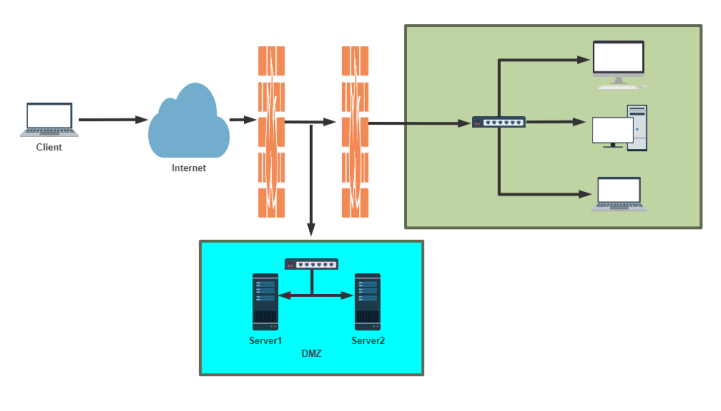</p>
<h2 id="防火墙的分类"><a href="#防火墙的分类" class="headerlink" title="防火墙的分类"></a>防火墙的分类</h2><p>按保护范围划分：</p>
<p>主机防火墙：</p>
<ul>
<li>服务范围为当前一台主机</li>
<li>网络防火墙：服务范围为防火墙一侧的局域网 </li>
</ul>
<p>按实现方式划分: </p>
<ul>
<li>硬件防火墙：在专用硬件级别实现部分功能的防火墙；另一个部分功能基于软件实现，如：华为，山石hillstone，天融信，启明星辰，绿盟，深信服，PaloAlto ， fortinet飞塔， Cisco，Checkpoint， NetScreen(2004年被 Juniper 用40亿美元收购)等 </li>
<li>软件防火墙：运行于通用硬件平台之上的防火墙的应用软件，Windows 防火墙 ISA –&gt; Forefront  TMG </li>
</ul>
<p>按网络协议划分： </p>
<ul>
<li>网络层防火墙：OSI模型下四层，又称为包过滤防火墙 </li>
<li>应用层防火墙/代理服务器：proxy 代理网关，OSI模型七层</li>
</ul>
<p><strong>包过滤防火墙</strong></p>
<p>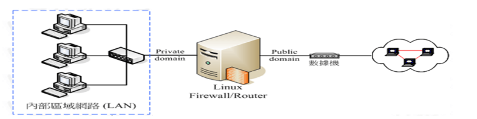</p>
<p>网络层对数据包进行选择，选择的依据是系统内设置的过滤逻辑，被称为访问控制列表（ACL），通过检查数据流中每个数据的源地址，目的地址，所用端口号和协议状态等因素，或他们的组合来确定是否允许该数据包通过 </p>
<p>优点：对用户来说透明，处理速度快且易于维护</p>
<p>缺点：无法检查应用层数据，如病毒等</p>
<p><strong>应用层防火墙</strong></p>
<p></p>
<p>应用层防火墙/代理服务型防火墙，也称为代理服务器（Proxy Server) </p>
<p>将所有跨越防火墙的网络通信链路分为两段</p>
<p>内外网用户的访问都是通过代理服务器上的“链接”来实现</p>
<p>优点：在应用层对数据进行检查，比较安全</p>
<p>缺点：增加防火墙的负载</p>
<p>提示：现实生产环境中所使用的防火墙一般都是二者结合体，即先检查网络数据，通过之后再送到应用层去检查</p>
<h2 id="网络架构"><a href="#网络架构" class="headerlink" title="网络架构"></a>网络架构</h2><p>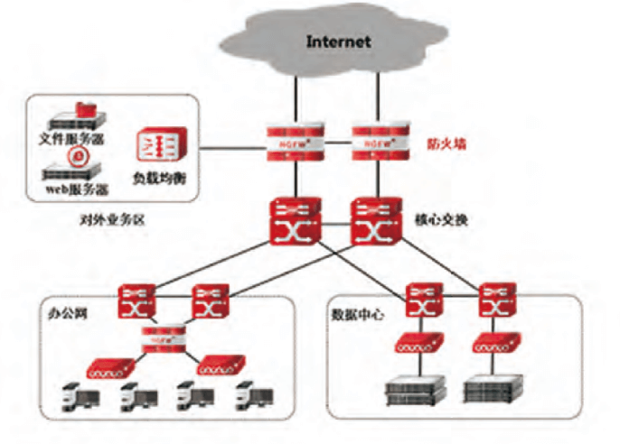</p>
<h1 id="Linux-防火墙的基本认识"><a href="#Linux-防火墙的基本认识" class="headerlink" title="Linux 防火墙的基本认识"></a>Linux 防火墙的基本认识</h1><h2 id="Netfilter"><a href="#Netfilter" class="headerlink" title="Netfilter"></a>Netfilter</h2><p></p>
<p>Linux防火墙是由Netfilter组件提供的，Netfilter工作在内核空间，集成在linux内核中 </p>
<p>Netfilter 是Linux 2.4.x之后新一代的Linux防火墙机制，是linux内核的一个子系统。Netfilter采用模块化设计，具有良好的可扩充性，提供扩展各种网络服务的结构化底层框架。Netfilter与IP协议栈是无缝契合，并允许对数据报进行过滤、地址转换、处理等操作</p>
<p>Netfilter官网文档：<a target="_blank" rel="noopener" href="https://netfilter.org/documentation/">https://netfilter.org/documentation/</a></p>
<figure class="highlight sh"><table><tr><td class="gutter"><pre><span class="line">1</span><br><span class="line">2</span><br><span class="line">3</span><br><span class="line">4</span><br><span class="line">5</span><br><span class="line">6</span><br><span class="line">7</span><br><span class="line">8</span><br><span class="line">9</span><br><span class="line">10</span><br><span class="line">11</span><br><span class="line">12</span><br><span class="line">13</span><br><span class="line">14</span><br><span class="line">15</span><br><span class="line">16</span><br><span class="line">17</span><br><span class="line">18</span><br><span class="line">19</span><br><span class="line">20</span><br><span class="line">21</span><br><span class="line">22</span><br><span class="line">23</span><br><span class="line">24</span><br><span class="line">25</span><br><span class="line">26</span><br><span class="line">27</span><br><span class="line">28</span><br><span class="line">29</span><br><span class="line">30</span><br><span class="line">31</span><br><span class="line">32</span><br><span class="line">33</span><br><span class="line">34</span><br><span class="line">35</span><br><span class="line">36</span><br><span class="line">37</span><br><span class="line">38</span><br><span class="line">39</span><br><span class="line">40</span><br><span class="line">41</span><br><span class="line">42</span><br><span class="line">43</span><br><span class="line">44</span><br><span class="line">45</span><br><span class="line">46</span><br><span class="line">47</span><br><span class="line">48</span><br><span class="line">49</span><br><span class="line">50</span><br><span class="line">51</span><br><span class="line">52</span><br><span class="line">53</span><br><span class="line">54</span><br><span class="line">55</span><br><span class="line">56</span><br><span class="line">57</span><br><span class="line">58</span><br><span class="line">59</span><br><span class="line">60</span><br><span class="line">61</span><br><span class="line">62</span><br><span class="line">63</span><br></pre></td><td class="code"><pre><span class="line">[root@centos8 ~]<span class="comment">#grep -m 10 NETFILTER /boot/config-4.18.0-193.el8.x86_64 </span></span><br><span class="line">CONFIG_NETFILTER=y</span><br><span class="line">CONFIG_NETFILTER_ADVANCED=y</span><br><span class="line">CONFIG_BRIDGE_NETFILTER=m</span><br><span class="line">CONFIG_NETFILTER_INGRESS=y</span><br><span class="line">CONFIG_NETFILTER_NETLINK=m</span><br><span class="line">CONFIG_NETFILTER_FAMILY_BRIDGE=y</span><br><span class="line">CONFIG_NETFILTER_FAMILY_ARP=y</span><br><span class="line"><span class="comment"># CONFIG_NETFILTER_NETLINK_ACCT is not set</span></span><br><span class="line">CONFIG_NETFILTER_NETLINK_QUEUE=m</span><br><span class="line">CONFIG_NETFILTER_NETLINK_LOG=m</span><br><span class="line"></span><br><span class="line"></span><br><span class="line">[root@centos7 ~]<span class="comment">#grep -m 10 NETFILTER /boot/config-3.10.0-1127.el7.x86_64 </span></span><br><span class="line">CONFIG_NETFILTER=y</span><br><span class="line"><span class="comment"># CONFIG_NETFILTER_DEBUG is not set</span></span><br><span class="line">CONFIG_NETFILTER_ADVANCED=y</span><br><span class="line">CONFIG_BRIDGE_NETFILTER=m</span><br><span class="line">CONFIG_NETFILTER_NETLINK=m</span><br><span class="line">CONFIG_NETFILTER_NETLINK_ACCT=m</span><br><span class="line">CONFIG_NETFILTER_NETLINK_QUEUE=m</span><br><span class="line">CONFIG_NETFILTER_NETLINK_LOG=m</span><br><span class="line">CONFIG_NETFILTER_NETLINK_QUEUE_CT=y</span><br><span class="line">CONFIG_NETFILTER_SYNPROXY=m</span><br><span class="line"></span><br><span class="line"></span><br><span class="line">[root@centos6 ~]<span class="comment">#grep -m 10 NETFILTER /boot/config-2.6.32-754.el6.x86_64 </span></span><br><span class="line">CONFIG_NETFILTER=y</span><br><span class="line"><span class="comment"># CONFIG_NETFILTER_DEBUG is not set</span></span><br><span class="line">CONFIG_NETFILTER_ADVANCED=y</span><br><span class="line">CONFIG_BRIDGE_NETFILTER=y</span><br><span class="line">CONFIG_NETFILTER_NETLINK=m</span><br><span class="line">CONFIG_NETFILTER_NETLINK_QUEUE=m</span><br><span class="line">CONFIG_NETFILTER_NETLINK_LOG=m</span><br><span class="line">CONFIG_NETFILTER_TPROXY=m</span><br><span class="line">CONFIG_NETFILTER_XTABLES=y</span><br><span class="line">CONFIG_NETFILTER_XT_TARGET_AUDIT=m</span><br><span class="line"></span><br><span class="line"></span><br><span class="line">[root@ubuntu2004 ~]<span class="comment">#grep -m 10 NETFILTER /boot/config-5.4.0-33-generic </span></span><br><span class="line">CONFIG_NETFILTER=y</span><br><span class="line">CONFIG_NETFILTER_ADVANCED=y</span><br><span class="line">CONFIG_BRIDGE_NETFILTER=m</span><br><span class="line">CONFIG_NETFILTER_INGRESS=y</span><br><span class="line">CONFIG_NETFILTER_NETLINK=m</span><br><span class="line">CONFIG_NETFILTER_FAMILY_BRIDGE=y</span><br><span class="line">CONFIG_NETFILTER_FAMILY_ARP=y</span><br><span class="line">CONFIG_NETFILTER_NETLINK_ACCT=m</span><br><span class="line">CONFIG_NETFILTER_NETLINK_QUEUE=m</span><br><span class="line">CONFIG_NETFILTER_NETLINK_LOG=m</span><br><span class="line"></span><br><span class="line"></span><br><span class="line">[root@ubuntu1804 ~]<span class="comment">#grep -m 10 NETFILTER /boot/config-4.15.0-29-generic </span></span><br><span class="line">CONFIG_NETFILTER=y</span><br><span class="line">CONFIG_NETFILTER_ADVANCED=y</span><br><span class="line">CONFIG_BRIDGE_NETFILTER=m</span><br><span class="line">CONFIG_NETFILTER_INGRESS=y</span><br><span class="line">CONFIG_NETFILTER_NETLINK=m</span><br><span class="line">CONFIG_NETFILTER_NETLINK_ACCT=m</span><br><span class="line">CONFIG_NETFILTER_NETLINK_QUEUE=m</span><br><span class="line">CONFIG_NETFILTER_NETLINK_LOG=m</span><br><span class="line">CONFIG_NETFILTER_NETLINK_GLUE_CT=y</span><br><span class="line">CONFIG_NETFILTER_SYNPROXY=m</span><br></pre></td></tr></table></figure>

<h2 id="防火墙工具介绍"><a href="#防火墙工具介绍" class="headerlink" title="防火墙工具介绍"></a>防火墙工具介绍</h2><h3 id="iptables"><a href="#iptables" class="headerlink" title="iptables"></a>iptables</h3><p>由软件包iptables提供的命令行工具，工作在用户空间，用来编写规则，写好的规则被送往netfilter，告诉内核如何去处理信息包</p>
<figure class="highlight sh"><table><tr><td class="gutter"><pre><span class="line">1</span><br><span class="line">2</span><br><span class="line">3</span><br><span class="line">4</span><br><span class="line">5</span><br><span class="line">6</span><br><span class="line">7</span><br><span class="line">8</span><br><span class="line">9</span><br><span class="line">10</span><br><span class="line">11</span><br><span class="line">12</span><br><span class="line">13</span><br><span class="line">14</span><br><span class="line">15</span><br><span class="line">16</span><br><span class="line">17</span><br><span class="line">18</span><br><span class="line">19</span><br><span class="line">20</span><br><span class="line">21</span><br><span class="line">22</span><br><span class="line">23</span><br><span class="line">24</span><br><span class="line">25</span><br><span class="line">26</span><br><span class="line">27</span><br><span class="line">28</span><br><span class="line">29</span><br><span class="line">30</span><br><span class="line">31</span><br><span class="line">32</span><br><span class="line">33</span><br><span class="line">34</span><br><span class="line">35</span><br><span class="line">36</span><br><span class="line">37</span><br><span class="line">38</span><br><span class="line">39</span><br><span class="line">40</span><br><span class="line">41</span><br><span class="line">42</span><br><span class="line">43</span><br><span class="line">44</span><br><span class="line">45</span><br><span class="line">46</span><br><span class="line">47</span><br><span class="line">48</span><br><span class="line">49</span><br><span class="line">50</span><br><span class="line">51</span><br><span class="line">52</span><br><span class="line">53</span><br></pre></td><td class="code"><pre><span class="line">[root@centos8 ~]<span class="comment">#rpm -qi iptables</span></span><br><span class="line">Name        : iptables</span><br><span class="line">Version     : 1.8.2</span><br><span class="line">Release     : 9.el8</span><br><span class="line">Architecture: x86_64</span><br><span class="line">Install Date: Wed 25 Sep 2019 09:29:06 PM CST</span><br><span class="line">Group       : Unspecified</span><br><span class="line">Size        : 2050086</span><br><span class="line">License     : GPLv2 and Artistic 2.0 and ISC</span><br><span class="line">Signature   : RSA/SHA256, Tue 02 Jul 2019 06:50:00 AM CST, Key ID </span><br><span class="line">05b555b38483c65d</span><br><span class="line">Source RPM : iptables-1.8.2-9.el8.src.rpm</span><br><span class="line">Build Date : Sat 11 May 2019 10:21:57 PM CST</span><br><span class="line">Build Host : x86-01.mbox.centos.org</span><br><span class="line">Relocations : (not relocatable)</span><br><span class="line">Packager   : CentOS Buildsys &lt;bugs@centos.org&gt;</span><br><span class="line">Vendor     : CentOS</span><br><span class="line">URL         : http://www.netfilter.org/</span><br><span class="line">Summary     : Tools <span class="keyword">for</span> managing Linux kernel packet filtering capabilities</span><br><span class="line">Description :</span><br><span class="line">The iptables utility controls the network packet filtering code <span class="keyword">in</span> the</span><br><span class="line">Linux kernel. If you need to <span class="built_in">set</span> up firewalls and/or IP masquerading,</span><br><span class="line">you should either install nftables or this package.</span><br><span class="line">Note: This package contains the nftables-based variants of iptables and</span><br><span class="line">ip6tables, <span class="built_in">which</span> are drop-in replacements of the legacy tools.</span><br><span class="line"></span><br><span class="line"></span><br><span class="line">[root@centos8 ~]<span class="comment"># iptables --version</span></span><br><span class="line">iptables v1.8.2 (nf_tables)</span><br><span class="line"></span><br><span class="line">[root@centos8 ~]<span class="comment">#ll /usr/sbin/iptables</span></span><br><span class="line">lrwxrwxrwx. 1 root root 17 May 11  2019 /usr/sbin/iptables -&gt; xtables-nft-multi</span><br><span class="line"></span><br><span class="line">[root@centos7 ~]<span class="comment">#ll /usr/sbin/iptables</span></span><br><span class="line">lrwxrwxrwx. 1 root root 13 Dec  9  2018 /usr/sbin/iptables -&gt; xtables-multi</span><br><span class="line"></span><br><span class="line">[root@centos7 ~]<span class="comment"># iptables --version</span></span><br><span class="line">iptables v1.4.21</span><br><span class="line"></span><br><span class="line">[root@centos6 ~]<span class="comment">#iptables --version</span></span><br><span class="line">iptables v1.4.7</span><br><span class="line"></span><br><span class="line">[root@centos6 ~]<span class="comment">#ll /sbin/iptables</span></span><br><span class="line">lrwxrwxrwx. 1 root root 33 Dec 12  2018 /sbin/iptables -&gt; </span><br><span class="line">/etc/alternatives/iptables.x86_64</span><br><span class="line"></span><br><span class="line">[root@centos6 ~]<span class="comment">#ll /etc/alternatives/iptables.x86_64</span></span><br><span class="line">lrwxrwxrwx. 1 root root 20 Dec 12  2018 /etc/alternatives/iptables.x86_64 -&gt; </span><br><span class="line">/sbin/iptables-1.4.7</span><br><span class="line"></span><br><span class="line">[root@centos6 ~]<span class="comment">#ll /sbin/iptables</span></span><br><span class="line">lrwxrwxrwx. 1 root root 33 Dec 12  2018 /sbin/iptables -&gt; </span><br><span class="line">/etc/alternatives/iptables.x86_64</span><br></pre></td></tr></table></figure>

<p>范例：安装iptables的service包</p>
<figure class="highlight sh"><table><tr><td class="gutter"><pre><span class="line">1</span><br><span class="line">2</span><br><span class="line">3</span><br><span class="line">4</span><br><span class="line">5</span><br><span class="line">6</span><br><span class="line">7</span><br><span class="line">8</span><br><span class="line">9</span><br><span class="line">10</span><br><span class="line">11</span><br><span class="line">12</span><br><span class="line">13</span><br><span class="line">14</span><br><span class="line">15</span><br></pre></td><td class="code"><pre><span class="line">[root@centos8 ~]<span class="comment"># dnf -y install iptables-services</span></span><br><span class="line">[root@centos8 ~]<span class="comment"># rpm -ql iptables-services</span></span><br><span class="line">/etc/sysconfig/ip6tables</span><br><span class="line">/etc/sysconfig/iptables</span><br><span class="line">/usr/lib/systemd/system/ip6tables.service</span><br><span class="line">/usr/lib/systemd/system/iptables.service</span><br><span class="line">/usr/libexec/initscripts/legacy-actions/ip6tables</span><br><span class="line">/usr/libexec/initscripts/legacy-actions/ip6tables/panic</span><br><span class="line">/usr/libexec/initscripts/legacy-actions/ip6tables/save</span><br><span class="line">/usr/libexec/initscripts/legacy-actions/iptables</span><br><span class="line">/usr/libexec/initscripts/legacy-actions/iptables/panic</span><br><span class="line">/usr/libexec/initscripts/legacy-actions/iptables/save</span><br><span class="line">/usr/libexec/iptables</span><br><span class="line">/usr/libexec/iptables/ip6tables.init</span><br><span class="line">/usr/libexec/iptables/iptables.init</span><br></pre></td></tr></table></figure>

<h3 id="firewalld"><a href="#firewalld" class="headerlink" title="firewalld"></a>firewalld</h3><p>从CentOS 7 版开始引入了新的前端管理工具</p>
<p>软件包：</p>
<ul>
<li>firewalld</li>
<li>firewalld-config</li>
</ul>
<p>管理工具：</p>
<ul>
<li>firewall-cmd 命令行工具 </li>
<li>firewall-config 图形工作</li>
</ul>
<h3 id="nftables"><a href="#nftables" class="headerlink" title="nftables"></a>nftables</h3><p>此软件是CentOS 8 新特性,Nftables最初在法国巴黎的Netfilter Workshop 2008上发表，然后由长期的 netfilter 核心团队成员和项目负责人Patrick McHardy于2009年3月发布。它在2013年末合并到Linux内核中，自2014年以来已在内核3.13中可用。</p>
<p>它重用了netfilter框架的许多部分，例如连接跟踪和NAT功能。它还保留了命名法和基本iptables设计的几个部分，例如表，链和规则。就像iptables一样，表充当链的容器，并且链包含单独的规则，这些规则可以执行操作，例如丢弃数据包，移至下一个规则或跳至新链。</p>
<p>从用户的角度来看，nftables添加了一个名为nft的新工具，该工具替代了iptables，arptables和 ebtables中的所有其他工具。从体系结构的角度来看，它还替换了内核中处理数据包过滤规则集运行时评估的那些部分。 </p>
<p>范例：查看软件包</p>
<figure class="highlight sh"><table><tr><td class="gutter"><pre><span class="line">1</span><br><span class="line">2</span><br><span class="line">3</span><br><span class="line">4</span><br><span class="line">5</span><br><span class="line">6</span><br><span class="line">7</span><br><span class="line">8</span><br><span class="line">9</span><br><span class="line">10</span><br><span class="line">11</span><br><span class="line">12</span><br><span class="line">13</span><br><span class="line">14</span><br><span class="line">15</span><br><span class="line">16</span><br><span class="line">17</span><br><span class="line">18</span><br><span class="line">19</span><br><span class="line">20</span><br><span class="line">21</span><br><span class="line">22</span><br></pre></td><td class="code"><pre><span class="line">[root@centos8 ~]<span class="comment">#rpm -qi nftables</span></span><br><span class="line">Name       : nftables</span><br><span class="line">Epoch       : 1</span><br><span class="line">Version     : 0.9.0</span><br><span class="line">Release     : 8.el8</span><br><span class="line">Architecture: x86_64</span><br><span class="line">Install Date: Wed 25 Sep 2019 09:29:06 PM CST</span><br><span class="line">Group       : Unspecified</span><br><span class="line">Size       : 758622</span><br><span class="line">License     : GPLv2</span><br><span class="line">Signature   : RSA/SHA256, Tue 02 Jul 2019 08:19:09 AM CST, Key ID </span><br><span class="line">05b555b38483c65d</span><br><span class="line">Source RPM : nftables-0.9.0-8.el8.src.rpm</span><br><span class="line">Build Date : Sat 11 May 2019 11:06:46 PM CST</span><br><span class="line">Build Host : x86-01.mbox.centos.org</span><br><span class="line">Relocations : (not relocatable)</span><br><span class="line">Packager   : CentOS Buildsys &lt;bugs@centos.org&gt;</span><br><span class="line">Vendor     : CentOS</span><br><span class="line">URL         : http://netfilter.org/projects/nftables/</span><br><span class="line">Summary     : Netfilter Tables userspace utillites</span><br><span class="line">Description :</span><br><span class="line">Netfilter Tables userspace utilities.</span><br></pre></td></tr></table></figure>

<p>范例：CentOS 8 支持三种防火墙服务</p>
<figure class="highlight sh"><table><tr><td class="gutter"><pre><span class="line">1</span><br><span class="line">2</span><br><span class="line">3</span><br><span class="line">4</span><br><span class="line">5</span><br><span class="line">6</span><br><span class="line">7</span><br><span class="line">8</span><br><span class="line">9</span><br><span class="line">10</span><br><span class="line">11</span><br><span class="line">12</span><br><span class="line">13</span><br><span class="line">14</span><br><span class="line">15</span><br><span class="line">16</span><br><span class="line">17</span><br><span class="line">18</span><br><span class="line">19</span><br></pre></td><td class="code"><pre><span class="line">[root@centos8 ~]<span class="comment">#systemctl status iptables.service </span></span><br><span class="line">● iptables.service - IPv4 firewall with iptables</span><br><span class="line">   Loaded: loaded (/usr/lib/systemd/system/iptables.service; disabled; vendor </span><br><span class="line">preset: disabled)</span><br><span class="line">   Active: inactive (dead)</span><br><span class="line">   </span><br><span class="line">[root@centos8 ~]<span class="comment">#systemctl status firewalld.service </span></span><br><span class="line">● firewalld.service - firewalld - dynamic firewall daemon</span><br><span class="line">   Loaded: loaded (/usr/lib/systemd/system/firewalld.service; disabled; vendor </span><br><span class="line">preset: enabled)</span><br><span class="line">   Active: inactive (dead)</span><br><span class="line">     Docs: man:firewalld(1)</span><br><span class="line">     </span><br><span class="line">[root@centos8 ~]<span class="comment">#systemctl status nftables.service </span></span><br><span class="line">● nftables.service - Netfilter Tables</span><br><span class="line">   Loaded: loaded (/usr/lib/systemd/system/nftables.service; disabled; vendor </span><br><span class="line">preset: disabled)</span><br><span class="line">   Active: inactive (dead)</span><br><span class="line">     Docs: man:nft(8)</span><br></pre></td></tr></table></figure>

<h2 id="netfilter-中五个勾子函数和报文流向"><a href="#netfilter-中五个勾子函数和报文流向" class="headerlink" title="netfilter 中五个勾子函数和报文流向"></a>netfilter 中五个勾子函数和报文流向</h2><p>Netfilter在内核中选取五个位置放了五个hook(勾子) function(INPUT、OUTPUT、FORWARD、PREROUTING、POSTROUTING)，而这五个hook function向用户开放，用户可以通过一个命令工具（iptables）向其写入规则</p>
<p>由信息过滤表（table）组成，包含控制IP包处理的规则集（rules），规则被分组放在链（chain）上</p>
<p>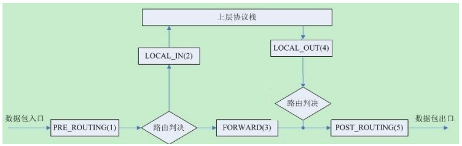</p>
<p>提示：从 Linux kernel 4.2 版以后，Netfilter 在prerouting 前加了一个 ingress 勾子函数。可以使用这个新的入口挂钩来过滤来自第2层的流量，这个新挂钩比预路由要早，基本上是 tc 命令（流量控制工 具）的替代品</p>
<p><strong>三种报文流向</strong></p>
<ul>
<li>流入本机：PREROUTING –&gt; INPUT–&gt;用户空间进程</li>
<li>流出本机：用户空间进程 –&gt;OUTPUT–&gt; POSTROUTING</li>
<li>转发：PREROUTING –&gt; FORWARD –&gt; POSTROUTING</li>
</ul>
<h2 id="iptables的组成"><a href="#iptables的组成" class="headerlink" title="iptables的组成"></a>iptables的组成</h2><p>iptables由五个表table和五个链chain以及一些规则组成</p>
<p>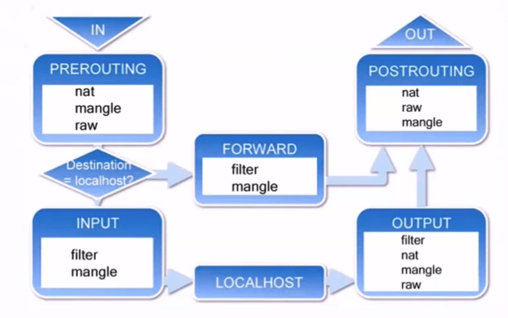</p>
<p><strong>链 chain：</strong> </p>
<ul>
<li>内置链：每个内置链对应于一个钩子函数</li>
<li>自定义链：用于对内置链进行扩展或补充，可实现更灵活的规则组织管理机制；只有Hook钩子调用自定义链时，才生效</li>
</ul>
<p><strong>五个内置链chain:</strong></p>
<figure class="highlight http"><table><tr><td class="gutter"><pre><span class="line">1</span><br></pre></td><td class="code"><pre><span class="line">INPUT,OUTPUT,FORWARD,PREROUTING,POSTROUTING</span><br></pre></td></tr></table></figure>

<p><strong>五个表table：filter、nat、mangle、raw、security</strong></p>
<ul>
<li>filter：过滤规则表，根据预定义的规则过滤符合条件的数据包,默认表 </li>
<li>nat：network address translation 地址转换规则表 </li>
<li>mangle：修改数据标记位规则表 </li>
<li>raw：关闭启用的连接跟踪机制，加快封包穿越防火墙速度 </li>
<li>security：用于强制访问控制（MAC）网络规则，由Linux安全模块（如SELinux）实现</li>
</ul>
<p><strong>优先级由高到低的顺序为：</strong></p>
<figure class="highlight http"><table><tr><td class="gutter"><pre><span class="line">1</span><br></pre></td><td class="code"><pre><span class="line">security --&gt;raw--&gt;mangle--&gt;nat--&gt;filter</span><br></pre></td></tr></table></figure>

<p><strong>表和链对应关系</strong></p>
<p>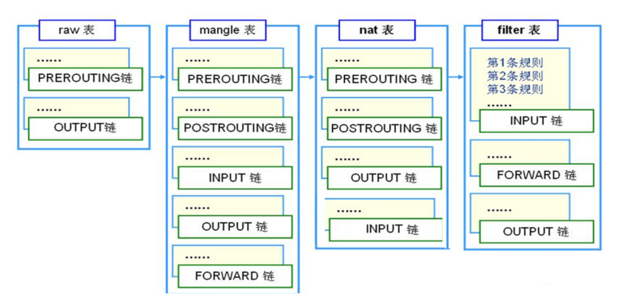</p>
<p><strong>数据包过滤匹配流程</strong></p>
<p>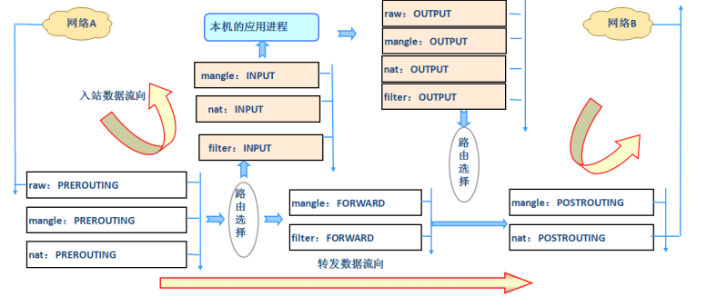</p>
<p>内核中数据包的传输过程</p>
<ul>
<li>当一个数据包进入网卡时，数据包首先进入PREROUTING链，内核根据数据包目的IP判断是否需要转送出去</li>
<li>如果数据包是进入本机的，数据包就会沿着图向下移动，到达INPUT链。数据包到达INPUT链后， 任何进程都会收到它。本机上运行的程序可以发送数据包，这些数据包经过OUTPUT链，然后到达POSTROUTING链输出 </li>
<li>如果数据包是要转发出去的，且内核允许转发，数据包就会向右移动，经过FORWARD链，然后到达POSTROUTING链输出</li>
</ul>
<p>范例：</p>
<figure class="highlight sh"><table><tr><td class="gutter"><pre><span class="line">1</span><br><span class="line">2</span><br><span class="line">3</span><br><span class="line">4</span><br><span class="line">5</span><br><span class="line">6</span><br><span class="line">7</span><br><span class="line">8</span><br><span class="line">9</span><br><span class="line">10</span><br><span class="line">11</span><br><span class="line">12</span><br><span class="line">13</span><br><span class="line">14</span><br><span class="line">15</span><br><span class="line">16</span><br><span class="line">17</span><br><span class="line">18</span><br><span class="line">19</span><br><span class="line">20</span><br><span class="line">21</span><br><span class="line">22</span><br><span class="line">23</span><br><span class="line">24</span><br><span class="line">25</span><br><span class="line">26</span><br><span class="line">27</span><br><span class="line">28</span><br><span class="line">29</span><br><span class="line">30</span><br><span class="line">31</span><br><span class="line">32</span><br><span class="line">33</span><br><span class="line">34</span><br><span class="line">35</span><br><span class="line">36</span><br><span class="line">37</span><br><span class="line">38</span><br><span class="line">39</span><br><span class="line">40</span><br><span class="line">41</span><br><span class="line">42</span><br><span class="line">43</span><br><span class="line">44</span><br><span class="line">45</span><br><span class="line">46</span><br><span class="line">47</span><br><span class="line">48</span><br><span class="line">49</span><br><span class="line">50</span><br><span class="line">51</span><br><span class="line">52</span><br><span class="line">53</span><br><span class="line">54</span><br><span class="line">55</span><br><span class="line">56</span><br><span class="line">57</span><br><span class="line">58</span><br><span class="line">59</span><br><span class="line">60</span><br><span class="line">61</span><br><span class="line">62</span><br><span class="line">63</span><br><span class="line">64</span><br><span class="line">65</span><br><span class="line">66</span><br></pre></td><td class="code"><pre><span class="line">[root@centos8 ~]<span class="comment">#iptables -vnL -t filter</span></span><br><span class="line">Chain INPUT (policy ACCEPT 0 packets, 0 bytes)</span><br><span class="line"> pkts bytes target     prot opt <span class="keyword">in</span>     out     <span class="built_in">source</span>               destination </span><br><span class="line">        </span><br><span class="line">Chain FORWARD (policy ACCEPT 0 packets, 0 bytes)</span><br><span class="line"> pkts bytes target     prot opt <span class="keyword">in</span>     out     <span class="built_in">source</span>               destination </span><br><span class="line">        </span><br><span class="line">Chain OUTPUT (policy ACCEPT 0 packets, 0 bytes)</span><br><span class="line"> pkts bytes target     prot opt <span class="keyword">in</span>     out     <span class="built_in">source</span>               destination </span><br><span class="line"> </span><br><span class="line"> [root@centos8 ~]<span class="comment">#iptables -vnL -t nat</span></span><br><span class="line">Chain PREROUTING (policy ACCEPT 0 packets, 0 bytes)</span><br><span class="line"> pkts bytes target     prot opt <span class="keyword">in</span>     out     <span class="built_in">source</span>               destination </span><br><span class="line">        </span><br><span class="line">Chain INPUT (policy ACCEPT 0 packets, 0 bytes)</span><br><span class="line"> pkts bytes target     prot opt <span class="keyword">in</span>     out     <span class="built_in">source</span>               destination </span><br><span class="line">        </span><br><span class="line">Chain POSTROUTING (policy ACCEPT 0 packets, 0 bytes)</span><br><span class="line"> pkts bytes target     prot opt <span class="keyword">in</span>     out     <span class="built_in">source</span>               destination </span><br><span class="line">        </span><br><span class="line">Chain OUTPUT (policy ACCEPT 0 packets, 0 bytes)</span><br><span class="line"> pkts bytes target     prot opt <span class="keyword">in</span>     out     <span class="built_in">source</span>               destination </span><br><span class="line">   </span><br><span class="line">[root@centos8 ~]<span class="comment">#iptables -vnL -t mangle</span></span><br><span class="line">Chain PREROUTING (policy ACCEPT 0 packets, 0 bytes)</span><br><span class="line"> pkts bytes target     prot opt <span class="keyword">in</span>     out     <span class="built_in">source</span>               destination </span><br><span class="line">        </span><br><span class="line">Chain INPUT (policy ACCEPT 0 packets, 0 bytes)</span><br><span class="line"> pkts bytes target     prot opt <span class="keyword">in</span>     out     <span class="built_in">source</span>               destination </span><br><span class="line">        </span><br><span class="line">Chain FORWARD (policy ACCEPT 0 packets, 0 bytes)</span><br><span class="line"> pkts bytes target     prot opt <span class="keyword">in</span>     out     <span class="built_in">source</span>               destination </span><br><span class="line">        </span><br><span class="line">Chain OUTPUT (policy ACCEPT 0 packets, 0 bytes)</span><br><span class="line"> pkts bytes target     prot opt <span class="keyword">in</span>     out     <span class="built_in">source</span>               destination </span><br><span class="line">        </span><br><span class="line">Chain POSTROUTING (policy ACCEPT 0 packets, 0 bytes)</span><br><span class="line"> pkts bytes target     prot opt <span class="keyword">in</span>     out     <span class="built_in">source</span>               destination </span><br><span class="line">   </span><br><span class="line">[root@centos8 ~]<span class="comment">#iptables -vnL -t raw</span></span><br><span class="line">Chain PREROUTING (policy ACCEPT 0 packets, 0 bytes)</span><br><span class="line"> pkts bytes target     prot opt <span class="keyword">in</span>     out     <span class="built_in">source</span>               destination </span><br><span class="line">        </span><br><span class="line">Chain OUTPUT (policy ACCEPT 0 packets, 0 bytes)</span><br><span class="line"> pkts bytes target     prot opt <span class="keyword">in</span>     out     <span class="built_in">source</span>               destination </span><br><span class="line">  </span><br><span class="line">[root@centos8 ~]<span class="comment">#iptables -vnL -t security</span></span><br><span class="line">Chain INPUT (policy ACCEPT 0 packets, 0 bytes)</span><br><span class="line"> pkts bytes target     prot opt <span class="keyword">in</span>     out     <span class="built_in">source</span>               destination </span><br><span class="line">        </span><br><span class="line">Chain FORWARD (policy ACCEPT 0 packets, 0 bytes)</span><br><span class="line"> pkts bytes target     prot opt <span class="keyword">in</span>     out     <span class="built_in">source</span>               destination </span><br><span class="line"> </span><br><span class="line"> Chain OUTPUT (policy ACCEPT 0 packets, 0 bytes)</span><br><span class="line"> pkts bytes target     prot opt <span class="keyword">in</span>     out     <span class="built_in">source</span>               destination </span><br><span class="line">        </span><br><span class="line"><span class="comment">#CentOS 6 nat表不支持INPUT链</span></span><br><span class="line">[root@centos6 ~]<span class="comment">#iptables -vnL -t nat</span></span><br><span class="line">Chain PREROUTING (policy ACCEPT 0 packets, 0 bytes)</span><br><span class="line"> pkts bytes target     prot opt <span class="keyword">in</span>     out     <span class="built_in">source</span>               destination </span><br><span class="line">        </span><br><span class="line">Chain POSTROUTING (policy ACCEPT 0 packets, 0 bytes)</span><br><span class="line"> pkts bytes target     prot opt <span class="keyword">in</span>     out     <span class="built_in">source</span>               destination </span><br><span class="line">        </span><br><span class="line">Chain OUTPUT (policy ACCEPT 0 packets, 0 bytes)</span><br><span class="line"> pkts bytes target     prot opt <span class="keyword">in</span>     out     <span class="built_in">source</span>               destination </span><br></pre></td></tr></table></figure>

<h2 id="netfilter-完整流程"><a href="#netfilter-完整流程" class="headerlink" title="netfilter 完整流程"></a>netfilter 完整流程</h2><p>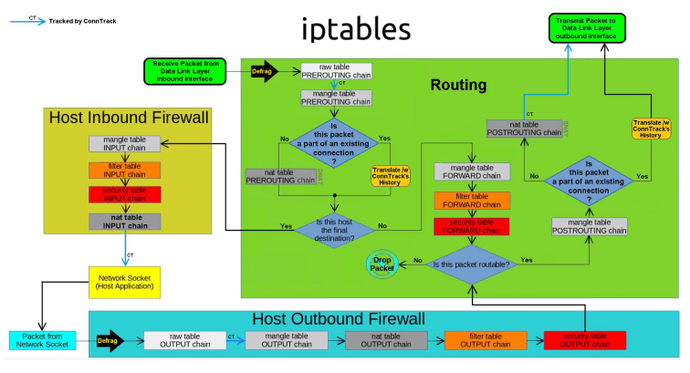</p>
<h1 id="Iptables"><a href="#Iptables" class="headerlink" title="Iptables"></a>Iptables</h1><h2 id="Iptables-规则说明"><a href="#Iptables-规则说明" class="headerlink" title="Iptables 规则说明"></a>Iptables 规则说明</h2><h3 id="Iptables-规则组成"><a href="#Iptables-规则组成" class="headerlink" title="Iptables 规则组成"></a>Iptables 规则组成</h3><p>规则rule：根据规则的匹配条件尝试匹配报文，对匹配成功的报文根据规则定义的处理动作作出处理，规则在链接上的次序即为其检查时的生效次序</p>
<p>匹配条件：默认为与条件，同时满足</p>
<p>基本匹配：IP，端口，TCP的Flags（SYN,ACK等）</p>
<p>扩展匹配：通过复杂高级功能匹配</p>
<p>处理动作：称为target，跳转目标</p>
<ul>
<li>内建处理动作：ACCEPT,DROP,REJECT,SNAT,DNAT,MASQUERADE,MARK,LOG…</li>
<li>自定义处理动作：自定义chain，利用分类管理复杂情形</li>
</ul>
<p>规则要添加在链上，才生效；添加在自定义链上不会自动生效</p>
<p>白名单:只有指定的特定主机可以访问,其它全拒绝</p>
<p>黑名单:只有指定的特定主机拒绝访问,其它全允许,默认方式</p>
<h3 id="Iptables规则添加时考量点"><a href="#Iptables规则添加时考量点" class="headerlink" title="Iptables规则添加时考量点"></a>Iptables规则添加时考量点</h3><ul>
<li>要实现哪种功能：判断添加在哪张表上</li>
<li>报文流经的路径：判断添加在哪个链上</li>
<li>报文的流向：判断源和目的</li>
<li>匹配规则：业务需要</li>
</ul>
<h3 id="本章学习环境准备"><a href="#本章学习环境准备" class="headerlink" title="本章学习环境准备"></a>本章学习环境准备</h3><p>CentOS 7，8：</p>
<figure class="highlight sh"><table><tr><td class="gutter"><pre><span class="line">1</span><br><span class="line">2</span><br><span class="line">3</span><br><span class="line">4</span><br><span class="line">5</span><br></pre></td><td class="code"><pre><span class="line">systemctl stop firewalld.service </span><br><span class="line">systemctl <span class="built_in">disable</span> firewalld. service</span><br><span class="line"></span><br><span class="line"><span class="comment">#或者</span></span><br><span class="line">systemctl <span class="built_in">disable</span> --now firewalld. service</span><br></pre></td></tr></table></figure>

<p>CentOS 6：</p>
<figure class="highlight sh"><table><tr><td class="gutter"><pre><span class="line">1</span><br><span class="line">2</span><br></pre></td><td class="code"><pre><span class="line">service iptables stop</span><br><span class="line">chkconfig iptables off</span><br></pre></td></tr></table></figure>

<h2 id="Iptables-用法说明"><a href="#Iptables-用法说明" class="headerlink" title="Iptables 用法说明"></a>Iptables 用法说明</h2><p>帮助：man 8 iptables </p>
<p>格式：</p>
<figure class="highlight sh"><table><tr><td class="gutter"><pre><span class="line">1</span><br><span class="line">2</span><br><span class="line">3</span><br><span class="line">4</span><br><span class="line">5</span><br><span class="line">6</span><br><span class="line">7</span><br><span class="line">8</span><br><span class="line">9</span><br><span class="line">10</span><br><span class="line">11</span><br><span class="line">12</span><br><span class="line">13</span><br><span class="line">14</span><br><span class="line">15</span><br></pre></td><td class="code"><pre><span class="line">iptables [-t table] &#123;-A|-C|-D&#125; chain rule-specification</span><br><span class="line">iptables [-t table] -I chain [rulenum] rule-specification</span><br><span class="line">iptables [-t table] -R chain rulenum rule-specification</span><br><span class="line">iptables [-t table] -D chain rulenum</span><br><span class="line">iptables [-t table] -S [chain [rulenum]]</span><br><span class="line">iptables [-t table] &#123;-F|-L|-Z&#125; [chain [rulenum]] [options...]</span><br><span class="line">iptables [-t table] -N chain</span><br><span class="line">iptables [-t table] -X [chain]</span><br><span class="line">iptables [-t table] -P chain target</span><br><span class="line">iptables [-t table] -E old-chain-name new-chain-name</span><br><span class="line"></span><br><span class="line"></span><br><span class="line">rule-specification = [matches...] [target]</span><br><span class="line">match = -m matchname [per-match-options]</span><br><span class="line">target = -j targetname [per-target-options]</span><br></pre></td></tr></table></figure>

<p><strong>范例：Filter表中INPUT规则</strong></p>
<p>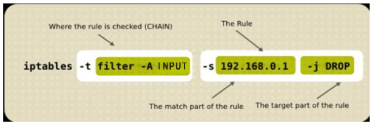</p>
<p><strong>iptables命令格式详解：</strong></p>
<figure class="highlight http"><table><tr><td class="gutter"><pre><span class="line">1</span><br></pre></td><td class="code"><pre><span class="line">iptables   [-t table]   SUBCOMMAND   chain   [-m matchname [per-match-options]]   -j targetname [per-target-options]</span><br></pre></td></tr></table></figure>

<p><strong>1、-t table：指定表</strong> </p>
<p>raw, mangle, nat, [filter]默认 </p>
<p><strong>2、SUBCOMMAND：子命令</strong></p>
<p><strong>链管理类：</strong></p>
<figure class="highlight http"><table><tr><td class="gutter"><pre><span class="line">1</span><br><span class="line">2</span><br><span class="line">3</span><br><span class="line">4</span><br></pre></td><td class="code"><pre><span class="line">-N：new, 自定义一条新的规则链</span><br><span class="line">-E：重命名自定义链；引用计数不为0的自定义链不能够被重命名，也不能被删除</span><br><span class="line">-X：delete，删除自定义的空的规则链</span><br><span class="line">-P：Policy，设置默认策略；对filter表中的链而言，其默认策略有：ACCEPT：接受, DROP：丢弃</span><br></pre></td></tr></table></figure>

<p>范例：自定义链</p>
<figure class="highlight sh"><table><tr><td class="gutter"><pre><span class="line">1</span><br><span class="line">2</span><br><span class="line">3</span><br><span class="line">4</span><br><span class="line">5</span><br><span class="line">6</span><br><span class="line">7</span><br><span class="line">8</span><br><span class="line">9</span><br><span class="line">10</span><br><span class="line">11</span><br><span class="line">12</span><br><span class="line">13</span><br><span class="line">14</span><br><span class="line">15</span><br><span class="line">16</span><br><span class="line">17</span><br><span class="line">18</span><br><span class="line">19</span><br><span class="line">20</span><br><span class="line">21</span><br><span class="line">22</span><br><span class="line">23</span><br><span class="line">24</span><br><span class="line">25</span><br><span class="line">26</span><br><span class="line">27</span><br></pre></td><td class="code"><pre><span class="line">[root@centos8 ~]<span class="comment">#iptables -N web_chain </span></span><br><span class="line">[root@centos8 ~]<span class="comment">#iptables -N web_chain -t nat</span></span><br><span class="line">[root@centos8 ~]<span class="comment">#iptables -X web_chain -t nat</span></span><br><span class="line">[root@centos8 ~]<span class="comment">#iptables -E web_chain WEB_CHAIN</span></span><br><span class="line">[root@centos8 ~]<span class="comment">#iptables -A WEB_CHAIN -s 10.0.0.6 -p tcp -m multiport --dports 80,443 -j REJECT</span></span><br><span class="line">[root@centos8 ~]<span class="comment">#iptables -R WEB_CHAIN 1 -s 10.0.0.6 -p tcp -m multiport --dports 80,443,8080 -j REJECT</span></span><br><span class="line">[root@centos8 ~]<span class="comment">#iptables -vnL WEB_CHAIN</span></span><br><span class="line">Chain WEB_CHAIN (1 references)</span><br><span class="line"> pkts bytes target     prot opt <span class="keyword">in</span>     out     <span class="built_in">source</span>               destination </span><br><span class="line">        </span><br><span class="line">    1    60 REJECT     tcp  -- *     *       10.0.0.6             0.0.0.0/0   </span><br><span class="line">        multiport dports 80,443,8080 reject-with icmp-port-unreachable</span><br><span class="line">        </span><br><span class="line">        </span><br><span class="line">[root@centos8 ~]<span class="comment">#iptables -AINPUT -j WEB_CHAIN </span></span><br><span class="line"><span class="comment">#因此自定义链关联到内置链，无法删除</span></span><br><span class="line">[root@centos8 ~]<span class="comment">#iptables -X WEB_CHAIN</span></span><br><span class="line">iptables v1.8.2 (nf_tables): CHAIN_USER_DEL failed (Device or resource busy): </span><br><span class="line">chain WEB_CHAIN</span><br><span class="line"></span><br><span class="line">[root@centos8 ~]<span class="comment">#iptables -F WEB_CHAIN</span></span><br><span class="line">[root@centos8 ~]<span class="comment">#iptables -X WEB_CHAIN</span></span><br><span class="line">iptables v1.8.2 (nf_tables): CHAIN_USER_DEL failed (Device or resource busy): </span><br><span class="line">chain WEB_CHAIN</span><br><span class="line"></span><br><span class="line">[root@centos8 ~]<span class="comment">#iptables -D INPUT 1</span></span><br><span class="line">[root@centos8 ~]<span class="comment">#iptables -X WEB_CHAIN</span></span><br></pre></td></tr></table></figure>

<p>范例: 创建自定义链实现WEB的访问控制</p>
<figure class="highlight sh"><table><tr><td class="gutter"><pre><span class="line">1</span><br><span class="line">2</span><br><span class="line">3</span><br><span class="line">4</span><br><span class="line">5</span><br><span class="line">6</span><br><span class="line">7</span><br><span class="line">8</span><br><span class="line">9</span><br><span class="line">10</span><br><span class="line">11</span><br><span class="line">12</span><br><span class="line">13</span><br><span class="line">14</span><br><span class="line">15</span><br><span class="line">16</span><br><span class="line">17</span><br><span class="line">18</span><br><span class="line">19</span><br><span class="line">20</span><br><span class="line">21</span><br><span class="line">22</span><br><span class="line">23</span><br><span class="line">24</span><br><span class="line">25</span><br><span class="line">26</span><br><span class="line">27</span><br><span class="line">28</span><br><span class="line">29</span><br><span class="line">30</span><br><span class="line">31</span><br><span class="line">32</span><br><span class="line">33</span><br><span class="line">34</span><br><span class="line">35</span><br><span class="line">36</span><br><span class="line">37</span><br><span class="line">38</span><br><span class="line">39</span><br><span class="line">40</span><br><span class="line">41</span><br><span class="line">42</span><br><span class="line">43</span><br><span class="line">44</span><br><span class="line">45</span><br><span class="line">46</span><br><span class="line">47</span><br><span class="line">48</span><br><span class="line">49</span><br><span class="line">50</span><br><span class="line">51</span><br><span class="line">52</span><br><span class="line">53</span><br><span class="line">54</span><br><span class="line">55</span><br><span class="line">56</span><br><span class="line">57</span><br><span class="line">58</span><br></pre></td><td class="code"><pre><span class="line">[root@centos8 ~]<span class="comment">#iptables -N web_chain </span></span><br><span class="line">[root@centos8 ~]<span class="comment">#iptables -E web_chain WEB_CHAIN</span></span><br><span class="line">[root@centos8 ~]<span class="comment">#iptables -A WEB_CHAIN -p tcp -m multiport --dports 80,443,8080 -j ACCEPT</span></span><br><span class="line">[root@centos8 ~]<span class="comment">#iptables -IINPUT 3 -s 10.0.0.0/24 -j WEB_CHAIN </span></span><br><span class="line">[root@centos8 ~]<span class="comment">#iptables -AWEB_CHAIN -p icmp -j ACCEPT</span></span><br><span class="line">[root@centos8 ~]<span class="comment">#iptables -IWEB_CHAIN 2 -s 10.0.0.6 -j RETURN</span></span><br><span class="line">[root@centos8 ~]<span class="comment">#iptables -vnL --line-numbers</span></span><br><span class="line">Chain INPUT (policy ACCEPT 0 packets, 0 bytes)</span><br><span class="line">num   pkts bytes target     prot opt <span class="keyword">in</span>     out     <span class="built_in">source</span>               </span><br><span class="line">destination         </span><br><span class="line">1       10   867 ACCEPT     all  -- lo     *       0.0.0.0/0           </span><br><span class="line">0.0.0.0/0           </span><br><span class="line">2     5637 423K ACCEPT     all  -- *     *       10.0.0.1             </span><br><span class="line">0.0.0.0/0           </span><br><span class="line">3      248 20427 WEB_CHAIN all  -- *     *       10.0.0.0/24         </span><br><span class="line">0.0.0.0/0           </span><br><span class="line">4     4278 248K REJECT     all  -- *     *       0.0.0.0/0           </span><br><span class="line">0.0.0.0/0           reject-with icmp-port-unreachable</span><br><span class="line"></span><br><span class="line">Chain FORWARD (policy ACCEPT 0 packets, 0 bytes)</span><br><span class="line">num   pkts bytes target     prot opt <span class="keyword">in</span>     out     <span class="built_in">source</span>               </span><br><span class="line">destination         </span><br><span class="line">Chain OUTPUT (policy ACCEPT 0 packets, 0 bytes)</span><br><span class="line">num   pkts bytes target     prot opt <span class="keyword">in</span>     out     <span class="built_in">source</span>               </span><br><span class="line">destination         </span><br><span class="line">Chain WEB_CHAIN (1 references)</span><br><span class="line">num   pkts bytes target     prot opt <span class="keyword">in</span>     out     <span class="built_in">source</span>               </span><br><span class="line">destination         </span><br><span class="line">1       36  2619 ACCEPT     tcp  -- *     *       0.0.0.0/0           </span><br><span class="line">0.0.0.0/0           multiport dports 80,443,8080</span><br><span class="line">2       16  1344 RETURN     all  -- *     *       10.0.0.6             </span><br><span class="line">0.0.0.0/0           </span><br><span class="line">3      184 15456 ACCEPT     icmp -- *     *       0.0.0.0/0           </span><br><span class="line">0.0.0.0/0      </span><br><span class="line">  </span><br><span class="line">  </span><br><span class="line">  </span><br><span class="line">[root@centos6 ~]<span class="comment">#curl 10.0.0.8</span></span><br><span class="line">centos8 website</span><br><span class="line"></span><br><span class="line">[root@centos6 ~]<span class="comment">#curl 10.0.0.8</span></span><br><span class="line">centos8 website</span><br><span class="line"></span><br><span class="line">[root@centos6 ~]<span class="comment">#ping -c1 10.0.0.8</span></span><br><span class="line">PING 10.0.0.8 (10.0.0.8) 56(84) bytes of data.</span><br><span class="line">From 10.0.0.8 icmp_seq=1 Destination Port Unreachable</span><br><span class="line">--- 10.0.0.8 ping statistics ---</span><br><span class="line">1 packets transmitted, 0 received, +1 errors, 100% packet loss, time 1ms</span><br><span class="line"></span><br><span class="line">[root@centos7 ~]<span class="comment">#ping 10.0.0.8 -c1</span></span><br><span class="line">PING 10.0.0.8 (10.0.0.8) 56(84) bytes of data.</span><br><span class="line">64 bytes from 10.0.0.8: icmp_seq=1 ttl=64 time=1.25 ms</span><br><span class="line">--- 10.0.0.8 ping statistics ---</span><br><span class="line">1 packets transmitted, 1 received, 0% packet loss, time 0ms</span><br><span class="line">rtt min/avg/max/mdev = 1.257/1.257/1.257/0.000 ms</span><br><span class="line"></span><br><span class="line">[root@centos7 ~]<span class="comment">#curl 10.0.0.8</span></span><br><span class="line">centos8 website</span><br></pre></td></tr></table></figure>

<p>范例: 删除自定义链</p>
<figure class="highlight sh"><table><tr><td class="gutter"><pre><span class="line">1</span><br><span class="line">2</span><br><span class="line">3</span><br><span class="line">4</span><br><span class="line">5</span><br><span class="line">6</span><br><span class="line">7</span><br><span class="line">8</span><br><span class="line">9</span><br><span class="line">10</span><br><span class="line">11</span><br><span class="line">12</span><br><span class="line">13</span><br><span class="line">14</span><br><span class="line">15</span><br><span class="line">16</span><br><span class="line">17</span><br><span class="line">18</span><br><span class="line">19</span><br><span class="line">20</span><br><span class="line">21</span><br><span class="line">22</span><br><span class="line">23</span><br><span class="line">24</span><br><span class="line">25</span><br><span class="line">26</span><br><span class="line">27</span><br><span class="line">28</span><br><span class="line">29</span><br><span class="line">30</span><br><span class="line">31</span><br><span class="line">32</span><br></pre></td><td class="code"><pre><span class="line"><span class="comment">#无法直接删除自定义链,删除自定议链和创建的顺序相反</span></span><br><span class="line">[root@centos8 ~]<span class="comment">#iptables -X WEB_CHAIN</span></span><br><span class="line">iptables v1.8.4 (nf_tables): CHAIN_USER_DEL failed (Device or resource busy): </span><br><span class="line">chain WEB_CHAIN</span><br><span class="line"></span><br><span class="line">[root@centos8 ~]<span class="comment">#iptables -D INPUT 3</span></span><br><span class="line">[root@centos8 ~]<span class="comment">#iptables -X WEB_CHAIN</span></span><br><span class="line">iptables v1.8.4 (nf_tables): CHAIN_USER_DEL failed (Device or resource busy): </span><br><span class="line">chain WEB_CHAIN</span><br><span class="line"></span><br><span class="line">[root@centos8 ~]<span class="comment">#iptables -F WEB_CHAIN</span></span><br><span class="line">[root@centos8 ~]<span class="comment">#iptables -L WEB_CHAIN</span></span><br><span class="line">Chain WEB_CHAIN (0 references)</span><br><span class="line">target     prot opt <span class="built_in">source</span>               destination   </span><br><span class="line"></span><br><span class="line">[root@centos8 ~]<span class="comment">#iptables -X WEB_CHAIN</span></span><br><span class="line">[root@centos8 ~]<span class="comment">#iptables -vnL --line-numbers</span></span><br><span class="line">Chain INPUT (policy ACCEPT 0 packets, 0 bytes)</span><br><span class="line">num   pkts bytes target     prot opt <span class="keyword">in</span>     out     <span class="built_in">source</span>               </span><br><span class="line">destination         </span><br><span class="line">1       10   867 ACCEPT     all  -- lo     *       0.0.0.0/0           </span><br><span class="line">0.0.0.0/0           </span><br><span class="line">2     5824 437K ACCEPT     all  -- *     *       10.0.0.1             </span><br><span class="line">0.0.0.0/0           </span><br><span class="line">3     4279 248K REJECT     all  -- *     *       0.0.0.0/0           </span><br><span class="line">0.0.0.0/0           reject-with icmp-port-unreachable</span><br><span class="line">Chain FORWARD (policy ACCEPT 0 packets, 0 bytes)</span><br><span class="line">num   pkts bytes target     prot opt <span class="keyword">in</span>     out     <span class="built_in">source</span>               </span><br><span class="line">destination         </span><br><span class="line">Chain OUTPUT (policy ACCEPT 0 packets, 0 bytes)</span><br><span class="line">num   pkts bytes target     prot opt <span class="keyword">in</span>     out     <span class="built_in">source</span>               </span><br><span class="line">destination </span><br></pre></td></tr></table></figure>

<p><strong>查看类：</strong></p>
<figure class="highlight http"><table><tr><td class="gutter"><pre><span class="line">1</span><br><span class="line">2</span><br><span class="line">3</span><br><span class="line">4</span><br><span class="line">5</span><br><span class="line">6</span><br><span class="line">7</span><br></pre></td><td class="code"><pre><span class="line">-L：list, 列出指定鏈上的所有规则，本选项须置后</span><br><span class="line">-n：numberic，以数字格式显示地址和端口号</span><br><span class="line">-v：verbose，详细信息</span><br><span class="line">-vv 更详细</span><br><span class="line">-x：exactly，显示计数器结果的精确值,而非单位转换后的易读值</span><br><span class="line">--line-numbers：显示规则的序号</span><br><span class="line">-S selected,以iptables-save 命令格式显示链上规则</span><br></pre></td></tr></table></figure>

<p><strong>常用组合：</strong></p>
<figure class="highlight http"><table><tr><td class="gutter"><pre><span class="line">1</span><br><span class="line">2</span><br></pre></td><td class="code"><pre><span class="line">-vnL </span><br><span class="line">-vvnxL --line-numbers</span><br></pre></td></tr></table></figure>

<p><strong>规则管理类：</strong></p>
<figure class="highlight http"><table><tr><td class="gutter"><pre><span class="line">1</span><br><span class="line">2</span><br><span class="line">3</span><br><span class="line">4</span><br><span class="line">5</span><br><span class="line">6</span><br><span class="line">7</span><br><span class="line">8</span><br><span class="line">9</span><br><span class="line">10</span><br><span class="line">11</span><br></pre></td><td class="code"><pre><span class="line">-A：append，追加</span><br><span class="line">-I：insert, 插入，要指明插入至的规则编号，默认为第一条</span><br><span class="line">-D：delete，删除</span><br><span class="line">       (1) 指明规则序号</span><br><span class="line">       (2) 指明规则本身</span><br><span class="line">-R：replace，替换指定链上的指定规则编号</span><br><span class="line">-F：flush，清空指定的规则链</span><br><span class="line">-Z：zero，置零</span><br><span class="line">       iptables的每条规则都有两个计数器</span><br><span class="line">       (1) 匹配到的报文的个数</span><br><span class="line">       (2) 匹配到的所有报文的大小之和</span><br></pre></td></tr></table></figure>

<p>范例：</p>
<figure class="highlight sh"><table><tr><td class="gutter"><pre><span class="line">1</span><br></pre></td><td class="code"><pre><span class="line">[root@centos8 ~]<span class="comment">#iptables -F OUTPUT</span></span><br></pre></td></tr></table></figure>

<p><strong>3、chain：</strong></p>
<p>PREROUTING，INPUT，FORWARD，OUTPUT，POSTROUTING</p>
<p><strong>4、匹配条件</strong></p>
<ul>
<li>基本：通用的，PARAMETERS </li>
<li>扩展：需加载模块，MATCH EXTENTIONS </li>
</ul>
<p><strong>5、处理动作：</strong></p>
<figure class="highlight sh"><table><tr><td class="gutter"><pre><span class="line">1</span><br></pre></td><td class="code"><pre><span class="line">-j targetname [per-target-options]</span><br></pre></td></tr></table></figure>

<p>简单动作：</p>
<figure class="highlight http"><table><tr><td class="gutter"><pre><span class="line">1</span><br><span class="line">2</span><br></pre></td><td class="code"><pre><span class="line">ACCEPT</span><br><span class="line">DROP</span><br></pre></td></tr></table></figure>

<p>扩展动作：</p>
<figure class="highlight http"><table><tr><td class="gutter"><pre><span class="line">1</span><br><span class="line">2</span><br><span class="line">3</span><br><span class="line">4</span><br><span class="line">5</span><br><span class="line">6</span><br><span class="line">7</span><br><span class="line">8</span><br><span class="line">9</span><br></pre></td><td class="code"><pre><span class="line">REJECT：--reject-with:icmp-port-unreachable默认</span><br><span class="line">RETURN：返回调用链</span><br><span class="line">REDIRECT：端口重定向</span><br><span class="line">LOG：记录日志，dmesg</span><br><span class="line">MARK：做防火墙标记</span><br><span class="line">DNAT：目标地址转换</span><br><span class="line">SNAT：源地址转换</span><br><span class="line">MASQUERADE：地址伪装</span><br><span class="line">自定义链</span><br></pre></td></tr></table></figure>

<h2 id="Iptables-基本匹配条件"><a href="#Iptables-基本匹配条件" class="headerlink" title="Iptables 基本匹配条件"></a>Iptables 基本匹配条件</h2><p>基本匹配条件：无需加载模块，由iptables/netfilter自行提供</p>
<figure class="highlight sh"><table><tr><td class="gutter"><pre><span class="line">1</span><br><span class="line">2</span><br><span class="line">3</span><br><span class="line">4</span><br><span class="line">5</span><br><span class="line">6</span><br><span class="line">7</span><br></pre></td><td class="code"><pre><span class="line">[!] -s, --<span class="built_in">source</span> address[/mask][,...]：源IP地址或者不连续的IP地址</span><br><span class="line">[!] -d, --destination address[/mask][,...]：目标IP地址或者不连续的IP地址</span><br><span class="line">[!] -p, --protocol protocol：指定协议，可使用数字如0（all）</span><br><span class="line">    protocol: tcp, udp, icmp, icmpv6, udplite,esp, ah, sctp, mh or“all“  </span><br><span class="line">    参看：/etc/protocols</span><br><span class="line">[!] -i, --in-interface name：报文流入的接口；只能应用于数据报文流入环节，只应用于INPUT、FORWARD、PREROUTING链</span><br><span class="line">[!] -o, --out-interface name：报文流出的接口；只能应用于数据报文流出的环节，只应用于FORWARD、OUTPUT、POSTROUTING链</span><br></pre></td></tr></table></figure>

<p>范例：</p>
<figure class="highlight sh"><table><tr><td class="gutter"><pre><span class="line">1</span><br><span class="line">2</span><br><span class="line">3</span><br><span class="line">4</span><br><span class="line">5</span><br><span class="line">6</span><br><span class="line">7</span><br></pre></td><td class="code"><pre><span class="line">[root@centos8 ~]<span class="comment">#iptables -A INPUT -s 10.0.0.6,10.0.0.10 -j REJECT</span></span><br><span class="line">[root@centos8 ~]<span class="comment">#iptables -I INPUT -i lo -j ACCEPT</span></span><br><span class="line">[root@centos8 ~]<span class="comment">#curl 127.0.0.1</span></span><br><span class="line">10.0.0.8</span><br><span class="line">[root@centos8 ~]<span class="comment">#curl 10.0.0.8</span></span><br><span class="line">10.0.0.8</span><br><span class="line">[root@centos8 ~]<span class="comment">#iptables -I INPUT 2 -s 10.0.0.6 ! -p icmp -j ACCEPT</span></span><br></pre></td></tr></table></figure>

<h2 id="Iptables-扩展匹配条件"><a href="#Iptables-扩展匹配条件" class="headerlink" title="Iptables 扩展匹配条件"></a>Iptables 扩展匹配条件</h2><p>扩展匹配条件：需要加载扩展模块（/usr/lib64/xtables/*.so），方可生效</p>
<p>扩展模块的查看帮助 ：man iptables-extensions</p>
<p>扩展匹配条件：</p>
<ul>
<li>隐式扩展</li>
<li>显式扩展</li>
</ul>
<h3 id="隐式扩展"><a href="#隐式扩展" class="headerlink" title="隐式扩展"></a>隐式扩展</h3><p>iptables 在使用-p选项指明了特定的协议时，无需再用-m选项指明扩展模块的扩展机制，不需要手动加载扩展模块</p>
<p><strong>tcp 协议的扩展选项</strong></p>
<figure class="highlight sh"><table><tr><td class="gutter"><pre><span class="line">1</span><br><span class="line">2</span><br><span class="line">3</span><br><span class="line">4</span><br><span class="line">5</span><br></pre></td><td class="code"><pre><span class="line">[!] --source-port, --sport port[:port]：匹配报文源端口,可为端口连续范围</span><br><span class="line">[!] --destination-port,--dport port[:port]：匹配报文目标端口,可为连续范围</span><br><span class="line">[!] --tcp-flags mask comp</span><br><span class="line">     mask 需检查的标志位列表，用,分隔 , 例如 SYN,ACK,FIN,RST</span><br><span class="line">     comp 在mask列表中必须为1的标志位列表，无指定则必须为0，用,分隔tcp协议的扩展选项</span><br></pre></td></tr></table></figure>

<p>范例：</p>
<figure class="highlight sh"><table><tr><td class="gutter"><pre><span class="line">1</span><br><span class="line">2</span><br><span class="line">3</span><br><span class="line">4</span><br><span class="line">5</span><br><span class="line">6</span><br></pre></td><td class="code"><pre><span class="line">--tcp-flags SYN,ACK,FIN,RST SYN      <span class="comment">#表示要检查的标志位为SYN,ACK,FIN,RST四个，其中SYN必须为1，余下的必须为0，第一次握手</span></span><br><span class="line">--tcp-flags SYN,ACK,FIN,RST SYN,ACK  <span class="comment">#第二次握手</span></span><br><span class="line"></span><br><span class="line"><span class="comment">#错误包</span></span><br><span class="line">--tcp-flags ALL ALL  </span><br><span class="line">--tcp_flags ALL NONE</span><br></pre></td></tr></table></figure>

<p>[!] –syn：用于匹配第一次握手, 相当于：–tcp-flags SYN,ACK,FIN,RST SYN</p>
<p><strong>udp 协议的扩展选项</strong></p>
<figure class="highlight sh"><table><tr><td class="gutter"><pre><span class="line">1</span><br><span class="line">2</span><br></pre></td><td class="code"><pre><span class="line">[!] --source-port, --sport port[:port]：匹配报文的源端口或端口范围</span><br><span class="line">[!] --destination-port,--dport port[:port]：匹配报文的目标端口或端口范围</span><br></pre></td></tr></table></figure>

<p><strong>icmp 协议的扩展选项</strong></p>
<figure class="highlight sh"><table><tr><td class="gutter"><pre><span class="line">1</span><br><span class="line">2</span><br><span class="line">3</span><br><span class="line">4</span><br></pre></td><td class="code"><pre><span class="line">[!] --icmp-type &#123;<span class="built_in">type</span>[/code]|typename&#125;</span><br><span class="line">      <span class="built_in">type</span>/code</span><br><span class="line">        0/0   echo-reply icmp应答</span><br><span class="line">        8/0   echo-request icmp请求 </span><br></pre></td></tr></table></figure>

<p>范例：</p>
<figure class="highlight sh"><table><tr><td class="gutter"><pre><span class="line">1</span><br><span class="line">2</span><br><span class="line">3</span><br><span class="line">4</span><br><span class="line">5</span><br><span class="line">6</span><br><span class="line">7</span><br><span class="line">8</span><br><span class="line">9</span><br><span class="line">10</span><br><span class="line">11</span><br><span class="line">12</span><br><span class="line">13</span><br><span class="line">14</span><br><span class="line">15</span><br></pre></td><td class="code"><pre><span class="line">[root@centos8 ~]<span class="comment">#iptables -A INPUT -s 10.0.0.6 -p tcp --dport 21:23 -j REJECT</span></span><br><span class="line"></span><br><span class="line">[root@centos8 ~]<span class="comment">#ipn</span></span><br><span class="line">Chain INPUT (policy ACCEPT 0 packets, 0 bytes)</span><br><span class="line">num   pkts bytes target     prot opt <span class="keyword">in</span>     out     <span class="built_in">source</span>               </span><br><span class="line">destination         </span><br><span class="line">1        1    60 REJECT     tcp  -- *     *       10.0.0.6             </span><br><span class="line">0.0.0.0/0           tcp dpts:21:23 reject-with icmp-port-unreachable</span><br><span class="line">Chain FORWARD (policy ACCEPT 0 packets, 0 bytes)</span><br><span class="line">num   pkts bytes target     prot opt <span class="keyword">in</span>     out     <span class="built_in">source</span>               </span><br><span class="line">destination         </span><br><span class="line">Chain OUTPUT (policy ACCEPT 0 packets, 0 bytes)</span><br><span class="line">num   pkts bytes target     prot opt <span class="keyword">in</span>     out     <span class="built_in">source</span>               </span><br><span class="line">destination</span><br><span class="line"></span><br></pre></td></tr></table></figure>

<p>范例：</p>
<figure class="highlight sh"><table><tr><td class="gutter"><pre><span class="line">1</span><br></pre></td><td class="code"><pre><span class="line">[root@centos8 ~]<span class="comment">#iptables -A INPUT -p tcp --syn -j REJECT</span></span><br></pre></td></tr></table></figure>

<p>范例：</p>
<figure class="highlight sh"><table><tr><td class="gutter"><pre><span class="line">1</span><br></pre></td><td class="code"><pre><span class="line">[root@centos8 ~]<span class="comment">#iptables -A INPUT -s 10.0.0.6 -p icmp --icmp-type 8 -j REJECT </span></span><br></pre></td></tr></table></figure>

<h3 id="显式扩展及相关模块"><a href="#显式扩展及相关模块" class="headerlink" title="显式扩展及相关模块"></a>显式扩展及相关模块</h3><p>显示扩展即必须使用-m选项指明要调用的扩展模块名称，需要手动加载扩展模块</p>
<figure class="highlight http"><table><tr><td class="gutter"><pre><span class="line">1</span><br></pre></td><td class="code"><pre><span class="line">[-m matchname [per-match-options]]</span><br></pre></td></tr></table></figure>

<p><strong>扩展模块的使用帮助：</strong></p>
<ul>
<li>CentOS 7,8: man iptables-extensions </li>
<li>CentOS 6: man iptables</li>
</ul>
<h4 id="multiport-扩展"><a href="#multiport-扩展" class="headerlink" title="multiport 扩展"></a>multiport 扩展</h4><p>以离散方式定义多端口匹配,最多指定15个端口</p>
<figure class="highlight sh"><table><tr><td class="gutter"><pre><span class="line">1</span><br><span class="line">2</span><br><span class="line">3</span><br><span class="line">4</span><br><span class="line">5</span><br><span class="line">6</span><br><span class="line">7</span><br><span class="line">8</span><br></pre></td><td class="code"><pre><span class="line"><span class="comment">#指定多个源端口</span></span><br><span class="line">[!] --source-ports,--sports port[,port|,port:port]...</span><br><span class="line"></span><br><span class="line"><span class="comment"># 指定多个目标端口</span></span><br><span class="line">[!] --destination-ports,--dports port[,port|,port:port]...</span><br><span class="line"></span><br><span class="line"><span class="comment">#多个源或目标端</span></span><br><span class="line">[!] --ports port[,port|,port:port]...</span><br></pre></td></tr></table></figure>

<p>范例：</p>
<figure class="highlight sh"><table><tr><td class="gutter"><pre><span class="line">1</span><br><span class="line">2</span><br><span class="line">3</span><br><span class="line">4</span><br><span class="line">5</span><br><span class="line">6</span><br><span class="line">7</span><br><span class="line">8</span><br><span class="line">9</span><br><span class="line">10</span><br><span class="line">11</span><br><span class="line">12</span><br><span class="line">13</span><br><span class="line">14</span><br><span class="line">15</span><br><span class="line">16</span><br></pre></td><td class="code"><pre><span class="line">[root@centos8 ~]<span class="comment">#iptables -A INPUT -s 172.16.0.0/16 -d 172.16.100.10 -p tcp -m multiport --dports 20:22,80 -j ACCEPT</span></span><br><span class="line"></span><br><span class="line">[root@centos8 ~]<span class="comment">#iptables -A INPUT -s 10.0.0.6 -p tcp -m multiport --dports 445,139 -j REJECT</span></span><br><span class="line"></span><br><span class="line">[root@centos8 ~]<span class="comment">#ipn</span></span><br><span class="line">Chain INPUT (policy ACCEPT 0 packets, 0 bytes)</span><br><span class="line">num   pkts bytes target     prot opt <span class="keyword">in</span>     out     <span class="built_in">source</span>               </span><br><span class="line">destination         </span><br><span class="line">1        2   120 REJECT     tcp  -- *     *       10.0.0.6             </span><br><span class="line">0.0.0.0/0           multiport dports 445,139 reject-with icmp-port-unreachable</span><br><span class="line">Chain FORWARD (policy ACCEPT 0 packets, 0 bytes)</span><br><span class="line">num   pkts bytes target     prot opt <span class="keyword">in</span>     out     <span class="built_in">source</span>               </span><br><span class="line">destination         </span><br><span class="line">Chain OUTPUT (policy ACCEPT 0 packets, 0 bytes)</span><br><span class="line">num   pkts bytes target     prot opt <span class="keyword">in</span>     out     <span class="built_in">source</span>               </span><br><span class="line">destination</span><br></pre></td></tr></table></figure>

<h4 id="iprange-扩展"><a href="#iprange-扩展" class="headerlink" title="iprange 扩展"></a>iprange 扩展</h4><p>指明连续的（但一般不是整个网络）ip地址范围</p>
<figure class="highlight sh"><table><tr><td class="gutter"><pre><span class="line">1</span><br><span class="line">2</span><br></pre></td><td class="code"><pre><span class="line">[!] --src-range from[-to] 源IP地址范围</span><br><span class="line">[!] --dst-range from[-to] 目标IP地址范围</span><br></pre></td></tr></table></figure>

<p>范例：</p>
<figure class="highlight sh"><table><tr><td class="gutter"><pre><span class="line">1</span><br></pre></td><td class="code"><pre><span class="line">iptables -A INPUT -d 172.16.1.100 -p tcp --dport 80 -m iprange --src-range 172.16.1.5-172.16.1.10 -j DROP</span><br></pre></td></tr></table></figure>

<h4 id="mac-扩展"><a href="#mac-扩展" class="headerlink" title="mac 扩展"></a>mac 扩展</h4><p>mac 模块可以指明源MAC地址,，适用于：PREROUTING, FORWARD，INPUT chains</p>
<figure class="highlight http"><table><tr><td class="gutter"><pre><span class="line">1</span><br></pre></td><td class="code"><pre><span class="line">[!] --mac-source XX:XX:XX:XX:XX:XX</span><br></pre></td></tr></table></figure>

<p>范例：</p>
<figure class="highlight sh"><table><tr><td class="gutter"><pre><span class="line">1</span><br><span class="line">2</span><br></pre></td><td class="code"><pre><span class="line">iptables -A INPUT -s 172.16.0.100 -m mac  --mac-source 00:50:56:12:34:56 -j ACCEPT</span><br><span class="line">iptables -A INPUT -s 172.16.0.100  -j REJECT</span><br></pre></td></tr></table></figure>

<h4 id="string-扩展"><a href="#string-扩展" class="headerlink" title="string 扩展"></a>string 扩展</h4><p>对报文中的应用层数据做字符串模式匹配检测</p>
<figure class="highlight sh"><table><tr><td class="gutter"><pre><span class="line">1</span><br><span class="line">2</span><br><span class="line">3</span><br><span class="line">4</span><br><span class="line">5</span><br><span class="line">6</span><br><span class="line">7</span><br></pre></td><td class="code"><pre><span class="line">--algo &#123;bm|kmp&#125; 字符串匹配检测算法</span><br><span class="line">    bm：Boyer-Moore</span><br><span class="line">    kmp：Knuth-Pratt-Morris</span><br><span class="line">--from offset 开始偏移</span><br><span class="line">--to offset   结束偏移</span><br><span class="line">[!] --string pattern 要检测的字符串模式</span><br><span class="line">[!] --hex-string pattern 要检测字符串模式，16进制格式</span><br></pre></td></tr></table></figure>

<p>范例：</p>
<figure class="highlight sh"><table><tr><td class="gutter"><pre><span class="line">1</span><br><span class="line">2</span><br><span class="line">3</span><br></pre></td><td class="code"><pre><span class="line">iptables -A OUTPUT -p tcp --sport 80 -m string --algo kmp --from 62  --string <span class="string">&quot;google&quot;</span> -j REJECT  <span class="comment">#此kmp算法支持nginx服务,也支持httpd服务</span></span><br><span class="line"></span><br><span class="line">iptables -A OUTPUT -p tcp --sport 80 -m string --algo bm --from 62  --string <span class="string">&quot;google&quot;</span> -j REJECT <span class="comment">#此bm算法有bug,不支持nginx服务,但支持httpd服务</span></span><br></pre></td></tr></table></figure>

<h4 id="time-扩展"><a href="#time-扩展" class="headerlink" title="time 扩展"></a>time 扩展</h4><p><strong>注意：CentOS 8 此模块有问题</strong></p>
<p>根据将报文到达的时间与指定的时间范围进行匹配</p>
<figure class="highlight sh"><table><tr><td class="gutter"><pre><span class="line">1</span><br><span class="line">2</span><br><span class="line">3</span><br><span class="line">4</span><br><span class="line">5</span><br><span class="line">6</span><br><span class="line">7</span><br><span class="line">8</span><br></pre></td><td class="code"><pre><span class="line">--datestart YYYY[-MM[-DD[Thh[:mm[:ss]]]]] 日期</span><br><span class="line">--datestop YYYY[-MM[-DD[Thh[:mm[:ss]]]]]</span><br><span class="line">--timestart hh:mm[:ss]        时间</span><br><span class="line">--timestop hh:mm[:ss]</span><br><span class="line">[!] --monthdays day[,day...]  每个月的几号</span><br><span class="line">[!] --weekdays day[,day...]   星期几，1 – 7 分别表示星期一到星期日</span><br><span class="line">--kerneltz：内核时区（当地时间），不建议使用，CentOS 7版本以上系统默认为 UTC</span><br><span class="line">注意： centos6 不支持kerneltz ，--localtz指定本地时区(默认)</span><br></pre></td></tr></table></figure>

<p>范例: CentOS 8 的 time模块问题</p>
<figure class="highlight sh"><table><tr><td class="gutter"><pre><span class="line">1</span><br><span class="line">2</span><br><span class="line">3</span><br><span class="line">4</span><br><span class="line">5</span><br></pre></td><td class="code"><pre><span class="line">[root@centos8 ~]<span class="comment">#rpm -ql iptables |grep time</span></span><br><span class="line">/usr/lib64/xtables/libxt_time.so</span><br><span class="line"></span><br><span class="line">[root@centos8 ~]<span class="comment">#iptables -A INPUT -m time --timestart 12:30 --timestop 13:30 -j ACCEPT</span></span><br><span class="line">iptables v1.8.4 (nf_tables): Couldn<span class="string">&#x27;t load match `time&#x27;</span>:No such file or directory</span><br></pre></td></tr></table></figure>

<p>范例: 关于 – kerneltz 选项</p>
<figure class="highlight sh"><table><tr><td class="gutter"><pre><span class="line">1</span><br><span class="line">2</span><br><span class="line">3</span><br><span class="line">4</span><br><span class="line">5</span><br><span class="line">6</span><br><span class="line">7</span><br><span class="line">8</span><br></pre></td><td class="code"><pre><span class="line">[root@centos8 ~]<span class="comment">#man iptables-extensions </span></span><br><span class="line">The caveat with the kernel timezone is that Linux distributions may ignore to </span><br><span class="line"><span class="built_in">set</span> the kernel timezone,and instead only <span class="built_in">set</span> the system time. Even <span class="keyword">if</span> a </span><br><span class="line">particular distribution does <span class="built_in">set</span> the timezone at boot,it is usually does not </span><br><span class="line">keep the kernel timezone offset - <span class="built_in">which</span> is what changes on DST - up to <span class="built_in">date</span>. </span><br><span class="line">ntpd will not <span class="built_in">touch</span> the kernel timezone, so running it will not resolve the </span><br><span class="line">issue. As such,one may   encounter a timezone that is always +0000, or one that </span><br><span class="line">is wrong half of the time of the year. As such,using --kerneltz is highly discouraged.</span><br></pre></td></tr></table></figure>

<p>范例：</p>
<figure class="highlight sh"><table><tr><td class="gutter"><pre><span class="line">1</span><br><span class="line">2</span><br></pre></td><td class="code"><pre><span class="line"><span class="comment">#注意：CentOS8和rocky8执行下面会出错</span></span><br><span class="line">[root@centos7 ~]<span class="comment">#iptables -A INPUT -s 172.16.0.0/16 -d 172.16.100.10 -p tcp --dport 80 -m time --timestart 14:30 --timestop 18:30 --weekdays Sat,Sun --kerneltz -j DROP</span></span><br></pre></td></tr></table></figure>

<h4 id="connlimit-扩展"><a href="#connlimit-扩展" class="headerlink" title="connlimit 扩展"></a>connlimit 扩展</h4><p>根据每客户端IP做并发连接数数量匹配</p>
<p>可防止Dos(Denial of Service，拒绝服务)攻击</p>
<figure class="highlight sh"><table><tr><td class="gutter"><pre><span class="line">1</span><br><span class="line">2</span><br></pre></td><td class="code"><pre><span class="line">--connlimit-upto N     <span class="comment">#连接的数量小于等于N时匹配</span></span><br><span class="line">--connlimit-above N    <span class="comment">#连接的数量大于N时匹配</span></span><br></pre></td></tr></table></figure>

<p>范例：使用apache实现，nginx 高并发不支持</p>
<figure class="highlight sh"><table><tr><td class="gutter"><pre><span class="line">1</span><br><span class="line">2</span><br><span class="line">3</span><br></pre></td><td class="code"><pre><span class="line">iptables -A INPUT  -p tcp --dport 80 -m connlimit --connlimit-above 2 -j REJECT</span><br><span class="line"></span><br><span class="line">iptables -A INPUT -d 172.16.100.10 -p tcp --dport 22 -m connlimit --connlimit-above 2 -j REJECT</span><br></pre></td></tr></table></figure>

<h4 id="limit-扩展"><a href="#limit-扩展" class="headerlink" title="limit 扩展"></a>limit 扩展</h4><p>基于收发报文的速率做匹配 , 令牌桶过滤器</p>
<figure class="highlight sh"><table><tr><td class="gutter"><pre><span class="line">1</span><br><span class="line">2</span><br></pre></td><td class="code"><pre><span class="line">--limit-burst number <span class="comment">#前多少个包不限制</span></span><br><span class="line">--<span class="built_in">limit</span> <span class="comment">#[/second|/minute|/hour|/day]</span></span><br></pre></td></tr></table></figure>

<p>范例：</p>
<figure class="highlight sh"><table><tr><td class="gutter"><pre><span class="line">1</span><br><span class="line">2</span><br><span class="line">3</span><br></pre></td><td class="code"><pre><span class="line">iptables -I INPUT -d 172.16.100.10 -p icmp --icmp-type 8 -m <span class="built_in">limit</span> --<span class="built_in">limit</span> 10/minute --limit-burst 5 -j ACCEPT</span><br><span class="line"></span><br><span class="line">iptables -I INPUT 2 -p icmp -j REJECT</span><br></pre></td></tr></table></figure>

<p>范例：</p>
<figure class="highlight sh"><table><tr><td class="gutter"><pre><span class="line">1</span><br><span class="line">2</span><br><span class="line">3</span><br><span class="line">4</span><br><span class="line">5</span><br><span class="line">6</span><br><span class="line">7</span><br><span class="line">8</span><br><span class="line">9</span><br><span class="line">10</span><br><span class="line">11</span><br><span class="line">12</span><br><span class="line">13</span><br><span class="line">14</span><br><span class="line">15</span><br><span class="line">16</span><br><span class="line">17</span><br><span class="line">18</span><br><span class="line">19</span><br><span class="line">20</span><br><span class="line">21</span><br><span class="line">22</span><br><span class="line">23</span><br><span class="line">24</span><br><span class="line">25</span><br><span class="line">26</span><br><span class="line">27</span><br><span class="line">28</span><br></pre></td><td class="code"><pre><span class="line">[root@centos8 ~]<span class="comment">#iptables -A INPUT -p icmp -m limit --limit-burst 10 --limit  20/minute -j ACCEPT</span></span><br><span class="line"></span><br><span class="line">[root@centos8 ~]<span class="comment">#iptables -A INPUT -p icmp -j REJECT</span></span><br><span class="line"></span><br><span class="line">[root@centos6 ~]<span class="comment">#ping 10.0.0.8</span></span><br><span class="line">PING 192.168.39.8 (192.168.39.8) 56(84) bytes of data.</span><br><span class="line">64 bytes from 192.168.39.8: icmp_seq=1 ttl=64 time=0.779 ms</span><br><span class="line">64 bytes from 192.168.39.8: icmp_seq=2 ttl=64 time=0.436 ms</span><br><span class="line">64 bytes from 192.168.39.8: icmp_seq=3 ttl=64 time=0.774 ms</span><br><span class="line">64 bytes from 192.168.39.8: icmp_seq=4 ttl=64 time=0.391 ms</span><br><span class="line">64 bytes from 192.168.39.8: icmp_seq=5 ttl=64 time=0.441 ms</span><br><span class="line">64 bytes from 192.168.39.8: icmp_seq=6 ttl=64 time=0.356 ms</span><br><span class="line">64 bytes from 192.168.39.8: icmp_seq=7 ttl=64 time=0.553 ms</span><br><span class="line">64 bytes from 192.168.39.8: icmp_seq=8 ttl=64 time=0.458 ms</span><br><span class="line">64 bytes from 192.168.39.8: icmp_seq=9 ttl=64 time=0.459 ms</span><br><span class="line">64 bytes from 192.168.39.8: icmp_seq=10 ttl=64 time=0.479 ms</span><br><span class="line">64 bytes from 192.168.39.8: icmp_seq=11 ttl=64 time=0.450 ms</span><br><span class="line">64 bytes from 192.168.39.8: icmp_seq=12 ttl=64 time=0.471 ms</span><br><span class="line">64 bytes from 192.168.39.8: icmp_seq=13 ttl=64 time=0.531 ms</span><br><span class="line">64 bytes from 192.168.39.8: icmp_seq=14 ttl=64 time=0.444 ms</span><br><span class="line">From 192.168.39.8 icmp_seq=15 Destination Port Unreachable</span><br><span class="line">64 bytes from 192.168.39.8: icmp_seq=16 ttl=64 time=0.668 ms</span><br><span class="line">From 192.168.39.8 icmp_seq=17 Destination Port Unreachable</span><br><span class="line">From 192.168.39.8 icmp_seq=18 Destination Port Unreachable</span><br><span class="line">64 bytes from 192.168.39.8: icmp_seq=19 ttl=64 time=0.692 ms</span><br><span class="line">From 192.168.39.8 icmp_seq=20 Destination Port Unreachable</span><br><span class="line">From 192.168.39.8 icmp_seq=21 Destination Port Unreachable</span><br><span class="line">64 bytes from 192.168.39.8: icmp_seq=22 ttl=64 time=0.651 ms</span><br></pre></td></tr></table></figure>

<h4 id="state-扩展"><a href="#state-扩展" class="headerlink" title="state 扩展"></a>state 扩展</h4><p>state 扩展模块，可以根据”连接追踪机制“去检查连接的状态，较耗资源</p>
<p>conntrack机制：追踪本机上的请求和响应之间的关系</p>
<p><strong>状态类型：</strong></p>
<ul>
<li>NEW：新发出请求；连接追踪信息库中不存在此连接的相关信息条目，因此，将其识别为第一次发出的请求</li>
<li>ESTABLISHED：NEW状态之后，连接追踪信息库中为其建立的条目失效之前期间内所进行的通信状态</li>
<li>RELATED：新发起的但与已有连接相关联的连接，如：ftp协议中的数据连接与命令连接之间的关系</li>
<li>INVALID：无效的连接，如flag标记不正确</li>
<li>UNTRACKED：未进行追踪的连接，如：raw表中关闭追踪</li>
</ul>
<hr>
<p>rocky 9 最小化安装沒有启动nf_conntrack模块</p>
<figure class="highlight sh"><table><tr><td class="gutter"><pre><span class="line">1</span><br><span class="line">2</span><br><span class="line">3</span><br><span class="line">4</span><br><span class="line">5</span><br></pre></td><td class="code"><pre><span class="line"><span class="comment">#使用 lsmod 命令检查 nf_conntrack 模块是否已经加载：</span></span><br><span class="line">lsmod | grep nf_conntrack</span><br><span class="line"></span><br><span class="line"><span class="comment">#如果没有任何输出，说明该模块没有被加载。你可以手动加载它：</span></span><br><span class="line">modprobe nf_conntrack</span><br></pre></td></tr></table></figure>

<hr>
<p>已经追踪到的并记录下来的连接信息库</p>
<figure class="highlight sh"><table><tr><td class="gutter"><pre><span class="line">1</span><br><span class="line">2</span><br><span class="line">3</span><br><span class="line">4</span><br><span class="line">5</span><br><span class="line">6</span><br><span class="line">7</span><br><span class="line">8</span><br><span class="line">9</span><br><span class="line">10</span><br><span class="line">11</span><br><span class="line">12</span><br><span class="line">13</span><br><span class="line">14</span><br><span class="line">15</span><br><span class="line">16</span><br><span class="line">17</span><br><span class="line">18</span><br><span class="line">19</span><br><span class="line">20</span><br><span class="line">21</span><br></pre></td><td class="code"><pre><span class="line">[root@centos8 ~]<span class="comment">#cat /proc/net/nf_conntrack</span></span><br><span class="line">ipv4     2 tcp      6 431325 ESTABLISHED src=10.0.0.7 dst=10.0.0.8 sport=49900</span><br><span class="line">dport=80 src=10.0.0.8 dst=10.0.0.7 sport=80 dport=49900 [ASSURED] mark=0 zone=0 use=2</span><br><span class="line">ipv4     2 tcp      6 431325 ESTABLISHED src=10.0.0.7 dst=10.0.0.8 sport=49886</span><br><span class="line">dport=80 src=10.0.0.8 dst=10.0.0.7 sport=80 dport=49886 [ASSURED] mark=0 zone=0 use=2</span><br><span class="line">ipv4     2 tcp      6 431325 ESTABLISHED src=10.0.0.7 dst=10.0.0.8 sport=49892</span><br><span class="line">dport=80 src=10.0.0.8 dst=10.0.0.7 sport=80 dport=49892 [ASSURED] mark=0 zone=0 use=2</span><br><span class="line">ipv4     2 tcp      6 431325 ESTABLISHED src=10.0.0.7 dst=10.0.0.8 sport=49904</span><br><span class="line">dport=80 src=10.0.0.8 dst=10.0.0.7 sport=80 dport=49904 [ASSURED] mark=0 zone=0 use=2</span><br><span class="line">ipv4     2 tcp      6 431325 ESTABLISHED src=10.0.0.7 dst=10.0.0.8 sport=49890</span><br><span class="line">dport=80 src=10.0.0.8 dst=10.0.0.7 sport=80 dport=49890 [ASSURED] mark=0 zone=0 use=2</span><br><span class="line">ipv4     2 tcp      6 431325 ESTABLISHED src=10.0.0.7 dst=10.0.0.8 sport=49888</span><br><span class="line">dport=80 src=10.0.0.8 dst=10.0.0.7 sport=80 dport=49888 [ASSURED] mark=0 zone=0 use=2</span><br><span class="line">ipv4     2 tcp      6 431325 ESTABLISHED src=10.0.0.7 dst=10.0.0.8 sport=49896</span><br><span class="line">dport=80 src=10.0.0.8 dst=10.0.0.7 sport=80 dport=49896 [ASSURED] mark=0 zone=0 use=2</span><br><span class="line">ipv4     2 tcp      6 431325 ESTABLISHED src=10.0.0.7 dst=10.0.0.8 sport=49898</span><br><span class="line">dport=80 src=10.0.0.8 dst=10.0.0.7 sport=80 dport=49898 [ASSURED] mark=0 zone=0 use=2</span><br><span class="line">ipv4     2 tcp      6 431325 ESTABLISHED src=10.0.0.7 dst=10.0.0.8 sport=49894</span><br><span class="line">dport=80 src=10.0.0.8 dst=10.0.0.7 sport=80 dport=49894 [ASSURED] mark=0 zone=0 use=2</span><br><span class="line">ipv4     2 tcp      6 431325 ESTABLISHED src=10.0.0.7 dst=10.0.0.8 sport=49902</span><br><span class="line">dport=80 src=10.0.0.8 dst=10.0.0.7 sport=80 dport=49902 [ASSURED] mark=0 zone=0 use=2</span><br></pre></td></tr></table></figure>

<p>调整连接追踪功能所能够容纳的最大连接数量</p>
<figure class="highlight sh"><table><tr><td class="gutter"><pre><span class="line">1</span><br><span class="line">2</span><br><span class="line">3</span><br><span class="line">4</span><br><span class="line">5</span><br></pre></td><td class="code"><pre><span class="line">[root@centos8 ~]<span class="comment">#cat /proc/sys/net/netfilter/nf_conntrack_max</span></span><br><span class="line">26624</span><br><span class="line"></span><br><span class="line">[root@centos8 ~]<span class="comment">#cat /proc/sys/net/nf_conntrack_max</span></span><br><span class="line">26624</span><br></pre></td></tr></table></figure>

<p>查看连接跟踪有多少条目</p>
<figure class="highlight sh"><table><tr><td class="gutter"><pre><span class="line">1</span><br><span class="line">2</span><br></pre></td><td class="code"><pre><span class="line">[root@centos8 ~]<span class="comment">#cat /proc/sys/net/netfilter/nf_conntrack_count</span></span><br><span class="line">10</span><br></pre></td></tr></table></figure>

<p>不同的协议的连接追踪时长</p>
<figure class="highlight sh"><table><tr><td class="gutter"><pre><span class="line">1</span><br><span class="line">2</span><br><span class="line">3</span><br><span class="line">4</span><br><span class="line">5</span><br><span class="line">6</span><br><span class="line">7</span><br><span class="line">8</span><br><span class="line">9</span><br><span class="line">10</span><br><span class="line">11</span><br><span class="line">12</span><br><span class="line">13</span><br><span class="line">14</span><br><span class="line">15</span><br><span class="line">16</span><br><span class="line">17</span><br><span class="line">18</span><br><span class="line">19</span><br><span class="line">20</span><br><span class="line">21</span><br><span class="line">22</span><br><span class="line">23</span><br><span class="line">24</span><br><span class="line">25</span><br><span class="line">26</span><br><span class="line">27</span><br><span class="line">28</span><br><span class="line">29</span><br><span class="line">30</span><br><span class="line">31</span><br><span class="line">32</span><br><span class="line">33</span><br><span class="line">34</span><br><span class="line">35</span><br><span class="line">36</span><br><span class="line">37</span><br><span class="line">38</span><br><span class="line">39</span><br><span class="line">40</span><br><span class="line">41</span><br><span class="line">42</span><br><span class="line">43</span><br><span class="line">44</span><br><span class="line">45</span><br><span class="line">46</span><br><span class="line">47</span><br><span class="line">48</span><br><span class="line">49</span><br></pre></td><td class="code"><pre><span class="line">[root@centos8 ~]<span class="comment">#ll /proc/sys/net/netfilter/</span></span><br><span class="line">total 0</span><br><span class="line">-rw-r--r-- 1 root root 0 Mar 19 18:14 nf_conntrack_acct</span><br><span class="line">-rw-r--r-- 1 root root 0 Mar 19 18:14 nf_conntrack_buckets</span><br><span class="line">-rw-r--r-- 1 root root 0 Mar 19 18:14 nf_conntrack_checksum</span><br><span class="line">-r--r--r-- 1 root root 0 Mar 19 18:14 nf_conntrack_count</span><br><span class="line">-rw-r--r-- 1 root root 0 Mar 19 18:14 nf_conntrack_dccp_loose</span><br><span class="line">-rw-r--r-- 1 root root 0 Mar 19 18:14 nf_conntrack_dccp_timeout_closereq</span><br><span class="line">-rw-r--r-- 1 root root 0 Mar 19 18:14 nf_conntrack_dccp_timeout_closing</span><br><span class="line">-rw-r--r-- 1 root root 0 Mar 19 18:14 nf_conntrack_dccp_timeout_open</span><br><span class="line">-rw-r--r-- 1 root root 0 Mar 19 18:14 nf_conntrack_dccp_timeout_partopen</span><br><span class="line">-rw-r--r-- 1 root root 0 Mar 19 18:14 nf_conntrack_dccp_timeout_request</span><br><span class="line">-rw-r--r-- 1 root root 0 Mar 19 18:14 nf_conntrack_dccp_timeout_respond</span><br><span class="line">-rw-r--r-- 1 root root 0 Mar 19 18:14 nf_conntrack_dccp_timeout_timewait</span><br><span class="line">-rw-r--r-- 1 root root 0 Mar 19 18:14 nf_conntrack_events</span><br><span class="line">-rw-r--r-- 1 root root 0 Mar 19 18:14 nf_conntrack_expect_max</span><br><span class="line">-rw-r--r-- 1 root root 0 Mar 19 18:14 nf_conntrack_generic_timeout</span><br><span class="line">-rw-r--r-- 1 root root 0 Mar 19 18:14 nf_conntrack_helper</span><br><span class="line">-rw-r--r-- 1 root root 0 Mar 19 18:14 nf_conntrack_icmp_timeout</span><br><span class="line">-rw-r--r-- 1 root root 0 Mar 19 18:14 nf_conntrack_log_invalid</span><br><span class="line">-rw-r--r-- 1 root root 0 Mar 19 18:13 nf_conntrack_max</span><br><span class="line">-rw-r--r-- 1 root root 0 Mar 19 18:14 nf_conntrack_sctp_timeout_closed</span><br><span class="line">-rw-r--r-- 1 root root 0 Mar 19 18:14 nf_conntrack_sctp_timeout_cookie_echoed</span><br><span class="line">-rw-r--r-- 1 root root 0 Mar 19 18:14 nf_conntrack_sctp_timeout_cookie_wait</span><br><span class="line">-rw-r--r-- 1 root root 0 Mar 19 18:14 nf_conntrack_sctp_timeout_established</span><br><span class="line">-rw-r--r-- 1 root root 0 Mar 19 18:14 nf_conntrack_sctp_timeout_heartbeat_acked</span><br><span class="line">-rw-r--r-- 1 root root 0 Mar 19 18:14 nf_conntrack_sctp_timeout_heartbeat_sent</span><br><span class="line">-rw-r--r-- 1 root root 0 Mar 19 18:14 </span><br><span class="line">nf_conntrack_sctp_timeout_shutdown_ack_sent</span><br><span class="line">-rw-r--r-- 1 root root 0 Mar 19 18:14 nf_conntrack_sctp_timeout_shutdown_recd</span><br><span class="line">-rw-r--r-- 1 root root 0 Mar 19 18:14 nf_conntrack_sctp_timeout_shutdown_sent</span><br><span class="line">-rw-r--r-- 1 root root 0 Mar 19 18:14 nf_conntrack_tcp_be_liberal</span><br><span class="line">-rw-r--r-- 1 root root 0 Mar 19 18:14 nf_conntrack_tcp_loose</span><br><span class="line">-rw-r--r-- 1 root root 0 Mar 19 18:14 nf_conntrack_tcp_max_retrans</span><br><span class="line">-rw-r--r-- 1 root root 0 Mar 19 18:14 nf_conntrack_tcp_timeout_close</span><br><span class="line">-rw-r--r-- 1 root root 0 Mar 19 18:14 nf_conntrack_tcp_timeout_close_wait</span><br><span class="line">-rw-r--r-- 1 root root 0 Mar 19 18:14 nf_conntrack_tcp_timeout_established</span><br><span class="line">-rw-r--r-- 1 root root 0 Mar 19 18:14 nf_conntrack_tcp_timeout_fin_wait</span><br><span class="line">-rw-r--r-- 1 root root 0 Mar 19 18:14 nf_conntrack_tcp_timeout_last_ack</span><br><span class="line">-rw-r--r-- 1 root root 0 Mar 19 18:14 nf_conntrack_tcp_timeout_max_retrans</span><br><span class="line">-rw-r--r-- 1 root root 0 Mar 19 18:14 nf_conntrack_tcp_timeout_syn_recv</span><br><span class="line">-rw-r--r-- 1 root root 0 Mar 19 18:14 nf_conntrack_tcp_timeout_syn_sent</span><br><span class="line">-rw-r--r-- 1 root root 0 Mar 19 18:14 nf_conntrack_tcp_timeout_time_wait</span><br><span class="line">-rw-r--r-- 1 root root 0 Mar 19 18:14 nf_conntrack_tcp_timeout_unacknowledged</span><br><span class="line">-rw-r--r-- 1 root root 0 Mar 19 18:14 nf_conntrack_timestamp</span><br><span class="line">-rw-r--r-- 1 root root 0 Mar 19 18:14 nf_conntrack_udp_timeout</span><br><span class="line">-rw-r--r-- 1 root root 0 Mar 19 18:14 nf_conntrack_udp_timeout_stream</span><br><span class="line">dr-xr-xr-x 1 root root 0 Mar 19 18:14 nf_log</span><br><span class="line">-rw-r--r-- 1 root root 0 Mar 19 18:14 nf_log_all_netns</span><br></pre></td></tr></table></figure>

<p>说明：</p>
<ul>
<li>连接跟踪，需要加载nf_conntrack模块，可以执行命令 modprobe nf_conntrack手动加载模块，系统也会根据规则自动加载模块</li>
<li>当服务器连接多于最大连接数时dmesg 可以观察到 ：kernel: ip_conntrack: table full, dropping  packet错误,并且导致建立TCP连接很慢。</li>
<li>各种状态的超时后，链接会从表中删除</li>
</ul>
<p>范例: 面试题</p>
<figure class="highlight sh"><table><tr><td class="gutter"><pre><span class="line">1</span><br><span class="line">2</span><br><span class="line">3</span><br><span class="line">4</span><br><span class="line">5</span><br><span class="line">6</span><br><span class="line">7</span><br></pre></td><td class="code"><pre><span class="line">[root@centos8 ~]<span class="comment">#echo 1 &gt; /proc/sys/net/netfilter/nf_conntrack_max</span></span><br><span class="line"></span><br><span class="line">[root@centos8 ~]<span class="comment">#tail /var/log/messages </span></span><br><span class="line">Jul  8 10:03:53 centos8 kernel: nf_conntrack: nf_conntrack: table full, dropping packet</span><br><span class="line"></span><br><span class="line">[root@centos6 ~]<span class="comment">#tail /var/log/messages</span></span><br><span class="line">Jul  8 09:51:16 centos6 kernel: nf_conntrack: table full, dropping packet.</span><br></pre></td></tr></table></figure>

<p>连接过多的解决方法两个： </p>
<p>(1) 加大nf_conntrack_max 值</p>
<figure class="highlight http"><table><tr><td class="gutter"><pre><span class="line">1</span><br><span class="line">2</span><br><span class="line">3</span><br></pre></td><td class="code"><pre><span class="line">vi /etc/sysctl.conf</span><br><span class="line">net.nf_conntrack_max = 393216</span><br><span class="line">net.netfilter.nf_conntrack_max = 393216</span><br></pre></td></tr></table></figure>

<p>(2) 降低 nf_conntrack timeout时间</p>
<figure class="highlight http"><table><tr><td class="gutter"><pre><span class="line">1</span><br><span class="line">2</span><br><span class="line">3</span><br><span class="line">4</span><br><span class="line">5</span><br><span class="line">6</span><br></pre></td><td class="code"><pre><span class="line">vi /etc/sysctl.conf</span><br><span class="line">net.netfilter.nf_conntrack_tcp_timeout_established = 300</span><br><span class="line">net.netfilter.nf_conntrack_tcp_timeout_time_wait = 120</span><br><span class="line">net.netfilter.nf_conntrack_tcp_timeout_close_wait = 60</span><br><span class="line">net.netfilter.nf_conntrack_tcp_timeout_fin_wait = 120</span><br><span class="line">iptables -t nat -L -n</span><br></pre></td></tr></table></figure>

<p>格式：</p>
<figure class="highlight http"><table><tr><td class="gutter"><pre><span class="line">1</span><br></pre></td><td class="code"><pre><span class="line">[!] --state state</span><br></pre></td></tr></table></figure>

<p>范例: 不允许远程主机 10.0.0.7 访问本机,但本机可以访问10.0.0.7</p>
<figure class="highlight sh"><table><tr><td class="gutter"><pre><span class="line">1</span><br><span class="line">2</span><br><span class="line">3</span><br><span class="line">4</span><br><span class="line">5</span><br><span class="line">6</span><br><span class="line">7</span><br><span class="line">8</span><br></pre></td><td class="code"><pre><span class="line">[root@centos8 ~]<span class="comment">#iptables -S</span></span><br><span class="line">-P INPUT ACCEPT</span><br><span class="line">-P FORWARD ACCEPT</span><br><span class="line">-P OUTPUT ACCEPT</span><br><span class="line">-A INPUT -s 10.0.0.1/32 -j ACCEPT</span><br><span class="line">-A INPUT -m state --state ESTABLISHED -j ACCEPT</span><br><span class="line">-A INPUT ! -s 10.0.0.7/32 -m state --state NEW -j ACCEPT</span><br><span class="line">-A INPUT -j REJECT --reject-with icmp-port-unreachable</span><br></pre></td></tr></table></figure>

<p>范例：</p>
<figure class="highlight sh"><table><tr><td class="gutter"><pre><span class="line">1</span><br><span class="line">2</span><br><span class="line">3</span><br><span class="line">4</span><br><span class="line">5</span><br><span class="line">6</span><br><span class="line">7</span><br></pre></td><td class="code"><pre><span class="line">iptables -A INPUT -d 172.16.1.10 -p tcp -m multiport --dports 22,80 -m state --state NEW,ESTABLISHED -j ACCEPT</span><br><span class="line"></span><br><span class="line">iptables -A OUTPUT -s 172.16.1.10 -p tcp -m multiport --sports 22,80 -m state --state ESTABLISHED -j ACCEPT</span><br><span class="line"></span><br><span class="line">[root@centos8 ~]<span class="comment">#iptables -A INPUT -m state --state ESTABLISHED,RELATED -j ACCEPT #此条规则必须在NEW规则前面</span></span><br><span class="line"></span><br><span class="line">[root@centos8 ~]<span class="comment">#iptables -A INPUT -m state --state NEW -j REJECT</span></span><br></pre></td></tr></table></figure>

<p><strong>案例：开放被动模式的ftp服务</strong></p>
<p><strong>CentOS 8 此模块有bug</strong></p>
<p>(1) 装载ftp连接追踪的专用模块： </p>
<p>跟踪模块路径： /lib/modules/kernelversion/kernel/net/netfilter</p>
<figure class="highlight sh"><table><tr><td class="gutter"><pre><span class="line">1</span><br><span class="line">2</span><br><span class="line">3</span><br></pre></td><td class="code"><pre><span class="line">vim /etc/sysconfig/iptables-config </span><br><span class="line">IPTABLES_MODULES=“nf_conntrack_ftp<span class="string">&quot;</span></span><br><span class="line"><span class="string">modprobe nf_conntrack_ftp</span></span><br></pre></td></tr></table></figure>

<p>(2) 放行请求报文：</p>
<p>命令连接：NEW, ESTABLISHED</p>
<p>数据连接：RELATED, ESTABLISHED</p>
<figure class="highlight sh"><table><tr><td class="gutter"><pre><span class="line">1</span><br><span class="line">2</span><br><span class="line">3</span><br></pre></td><td class="code"><pre><span class="line">iptables -I INPUT -d LocalIP -p tcp -m state --state ESTABLISHED,RELATED -j ACCEPT</span><br><span class="line"></span><br><span class="line">iptables -A INPUT -d LocalIP -p tcp --dport 21 -m state --state NEW -j ACCEPT</span><br></pre></td></tr></table></figure>

<p>(3) 放行响应报文：</p>
<figure class="highlight sh"><table><tr><td class="gutter"><pre><span class="line">1</span><br></pre></td><td class="code"><pre><span class="line">iptables -I OUTPUT -s LocalIP -p tcp -m state --state ESTABLISHED -j ACCEPT </span><br></pre></td></tr></table></figure>

<p>范例：开放被动模式的ftp服务示例</p>
<figure class="highlight sh"><table><tr><td class="gutter"><pre><span class="line">1</span><br><span class="line">2</span><br><span class="line">3</span><br><span class="line">4</span><br><span class="line">5</span><br><span class="line">6</span><br><span class="line">7</span><br><span class="line">8</span><br><span class="line">9</span><br><span class="line">10</span><br></pre></td><td class="code"><pre><span class="line">yum install vsftpd</span><br><span class="line">systemctl start vsftpd</span><br><span class="line">modprobe nf_conntrack_ftp</span><br><span class="line">iptables -F</span><br><span class="line">iptables -A INPUT   -m state --state ESTABLISHED,RELATED -j ACCEPT</span><br><span class="line">iptables -A INPUT -p tcp --dport 21 -m state --state NEW -j ACCEPT</span><br><span class="line">iptables -A OUTPUT  -m state --state ESTABLISHED -j ACCEPT</span><br><span class="line">iptables -P INPUT DROP</span><br><span class="line">iptables -P OUTPUT DROP</span><br><span class="line">iptables -vnL</span><br></pre></td></tr></table></figure>

<h2 id="Target"><a href="#Target" class="headerlink" title="Target"></a>Target</h2><p>target 包括以下类型：</p>
<figure class="highlight sh"><table><tr><td class="gutter"><pre><span class="line">1</span><br><span class="line">2</span><br><span class="line">3</span><br><span class="line">4</span><br><span class="line">5</span><br><span class="line">6</span><br><span class="line">7</span><br></pre></td><td class="code"><pre><span class="line">自定义链, ACCEPT， DROP， REJECT，RETURN,LOG，SNAT，DNAT，REDIRECT，MASQUERADE</span><br><span class="line"></span><br><span class="line">LOG：非中断target,本身不拒绝和允许,放在拒绝和允许规则前，并将日志记录</span><br><span class="line">在/var/log/messages|syslog系统日志中</span><br><span class="line"></span><br><span class="line">--log-level level   级别： debug，info，notice, warning, error, crit, alert,emerg</span><br><span class="line">--log-prefix prefix 日志前缀，用于区别不同的日志，最多29个字符</span><br></pre></td></tr></table></figure>

<p>范例：</p>
<figure class="highlight sh"><table><tr><td class="gutter"><pre><span class="line">1</span><br><span class="line">2</span><br><span class="line">3</span><br><span class="line">4</span><br><span class="line">5</span><br><span class="line">6</span><br><span class="line">7</span><br><span class="line">8</span><br><span class="line">9</span><br><span class="line">10</span><br><span class="line">11</span><br><span class="line">12</span><br></pre></td><td class="code"><pre><span class="line">[root@centos8 ~]<span class="comment">#iptables -I INPUT -s 10.0.0.0/24 -p tcp -m multiport --dports 80,21,22,23 -m state --state NEW -j LOG --log-prefix &quot;new connections: &quot; </span></span><br><span class="line"></span><br><span class="line">[root@centos8 ~]<span class="comment">#tail -f /var/log/messages </span></span><br><span class="line">Mar 19 18:41:07 centos8 kernel: iptables tcp connection: IN=eth0 OUT=</span><br><span class="line">MAC=00:0c:29:f8:5d:b7:00:50:56:c0:00:08:08:00 SRC=10.0.0.1 DST=10.0.0.8 LEN=40</span><br><span class="line">TOS=0x00 PREC=0x00 TTL=128 ID=43974 DF PROTO=TCP SPT=9844 DPT=22 WINDOW=4102</span><br><span class="line">RES=0x00 ACK URGP=0</span><br><span class="line">Mar 19 18:41:07 centos8 kernel: new connections: IN=eth0 OUT=</span><br><span class="line">MAC=00:0c:29:f8:5d:b7:00:50:56:c0:00:08:08:00 SRC=10.0.0.1 DST=10.0.0.8 LEN=40</span><br><span class="line">TOS=0x00 PREC=0x00 TTL=128 ID=43975 DF PROTO=TCP SPT=9844 DPT=22 WINDOW=4102</span><br><span class="line">RES=0x00 ACK URGP=0</span><br><span class="line">Mar 19 18:41:08 centos8 kernel: new connections: IN=eth0 OUT=</span><br></pre></td></tr></table></figure>

<p>范例：</p>
<figure class="highlight sh"><table><tr><td class="gutter"><pre><span class="line">1</span><br><span class="line">2</span><br><span class="line">3</span><br><span class="line">4</span><br><span class="line">5</span><br><span class="line">6</span><br></pre></td><td class="code"><pre><span class="line">[root@centos8 ~]<span class="comment">#iptables -R INPUT 2 -p tcp --dport 21 -m state --state NEW -j LOG --log-prefix &quot;ftp new link: &quot;</span></span><br><span class="line">[root@centos8 ~]<span class="comment">#tail -f /var/log/messages</span></span><br><span class="line">Dec 21 10:02:31 centos8 kernel: ftp new <span class="built_in">link</span>: IN=eth0 OUT=</span><br><span class="line">MAC=00:0c:29:f9:8d:90:00:0c:29:10:8a:b1:08:00 SRC=192.168.39.6 DST=192.168.39.8 </span><br><span class="line">LEN=60 TOS=0x00 PREC=0x00 TTL=64 ID=15556 DF PROTO=TCP SPT=53706 DPT=21</span><br><span class="line">WINDOW=14600 RES=0x00 SYN URGP=0</span><br></pre></td></tr></table></figure>

<h2 id="规则优化最佳实践"><a href="#规则优化最佳实践" class="headerlink" title="规则优化最佳实践"></a>规则优化最佳实践</h2><ol>
<li>安全放行所有入站和出站的状态为ESTABLISHED状态连接,建议放在第一条，效率更高</li>
<li>慎放行入站的新请求</li>
<li>有特殊目的限制访问功能，要在放行规则之前加以拒绝</li>
<li>同类规则（访问同一应用，比如：http ），匹配范围小的放在前面，用于特殊处理</li>
<li>不同类的规则（访问不同应用，一个是http，另一个是mysql ），匹配范围大的放在前面，效率更高</li>
</ol>
<figure class="highlight http"><table><tr><td class="gutter"><pre><span class="line">1</span><br><span class="line">2</span><br></pre></td><td class="code"><pre><span class="line">-s 10.0.0.6 -p tcp --dport 3306 -j REJECT</span><br><span class="line">-s 172.16.0.0/16 -p tcp --dport 80 -j REJECT</span><br></pre></td></tr></table></figure>

<ol start="6">
<li>应该将那些可由一条规则能够描述的多个规则合并为一条,减少规则数量,提高检查效率 </li>
<li>设置默认策略，建议白名单（只放行特定连接）<ul>
<li>iptables -P，不建议，容易出现“自杀现象”</li>
<li>规则的最后定义规则做为默认策略，推荐使用，放在最后一条</li>
</ul>
</li>
</ol>
<h2 id="Iptables规则保存"><a href="#Iptables规则保存" class="headerlink" title="Iptables规则保存"></a>Iptables规则保存</h2><p>使用iptables命令定义的规则，手动删除之前，其生效期限为kernel存活期限</p>
<p><strong>持久保存规则：</strong> </p>
<p>CentOS 7,8</p>
<figure class="highlight http"><table><tr><td class="gutter"><pre><span class="line">1</span><br></pre></td><td class="code"><pre><span class="line">iptables-save &gt; /PATH/TO/SOME_RULES_FILE</span><br></pre></td></tr></table></figure>

<p>CentOS 6</p>
<figure class="highlight sh"><table><tr><td class="gutter"><pre><span class="line">1</span><br><span class="line">2</span><br></pre></td><td class="code"><pre><span class="line"><span class="comment">#将规则覆盖保存至/etc/sysconfig/iptables文件中</span></span><br><span class="line">service iptables save </span><br></pre></td></tr></table></figure>

<p><strong>加载规则</strong></p>
<p>CentOS 7,8 重新载入预存规则文件中规则：</p>
<figure class="highlight http"><table><tr><td class="gutter"><pre><span class="line">1</span><br></pre></td><td class="code"><pre><span class="line">iptables-restore &lt; /PATH/FROM/SOME_RULES_FILE</span><br></pre></td></tr></table></figure>

<p>iptables-restore选项</p>
<figure class="highlight http"><table><tr><td class="gutter"><pre><span class="line">1</span><br><span class="line">2</span><br></pre></td><td class="code"><pre><span class="line">-n, --noflush：不清除原有规则</span><br><span class="line">-t, --test：仅分析生成规则集，但不提交</span><br></pre></td></tr></table></figure>

<p>CentOS 6：</p>
<figure class="highlight sh"><table><tr><td class="gutter"><pre><span class="line">1</span><br><span class="line">2</span><br></pre></td><td class="code"><pre><span class="line"><span class="comment">#会自动从/etc/sysconfig/iptables 重新载入规则</span></span><br><span class="line">service iptables  restart</span><br></pre></td></tr></table></figure>

<p><strong>开机自动重载规则</strong></p>
<ul>
<li><p>用脚本保存各个iptables命令；让此脚本开机后自动运行</p>
<p>/etc/rc.d/rc.local文件中添加脚本路径 /PATH/TO/SOME_SCRIPT_FILE</p>
</li>
<li><p>用规则文件保存各个规则，开机时自动载入此规则文件中的规则</p>
<p>在/etc/rc.d/rc.local文件添加</p>
</li>
</ul>
<figure class="highlight http"><table><tr><td class="gutter"><pre><span class="line">1</span><br></pre></td><td class="code"><pre><span class="line">iptables-restore &lt; /PATH/FROM/IPTABLES_RULES_FILE</span><br></pre></td></tr></table></figure>

<ul>
<li>定义Unit File, CentOS 7，8 可以安装 iptables-services 实现iptables.service</li>
</ul>
<p>范例: CentOS 7，8 使用 iptables-services </p>
<figure class="highlight sh"><table><tr><td class="gutter"><pre><span class="line">1</span><br><span class="line">2</span><br><span class="line">3</span><br><span class="line">4</span><br><span class="line">5</span><br><span class="line">6</span><br><span class="line">7</span><br><span class="line">8</span><br><span class="line">9</span><br><span class="line">10</span><br><span class="line">11</span><br><span class="line">12</span><br></pre></td><td class="code"><pre><span class="line">[root@centos8 ~]<span class="comment">#yum -y install iptables-services</span></span><br><span class="line">[root@centos8 ~]<span class="comment">#cp /etc/sysconfig/iptables&#123;,.bak&#125;</span></span><br><span class="line"></span><br><span class="line"><span class="comment">#保存现在的规则到文件中方法1</span></span><br><span class="line">[root@centos8 ~]<span class="comment">#/usr/libexec/iptables/iptables.init save</span></span><br><span class="line"></span><br><span class="line"><span class="comment">#保存现在的规则到文件中方法2</span></span><br><span class="line">[root@centos8 ~]<span class="comment">#iptables-save &gt; /etc/sysconfig/iptables</span></span><br><span class="line"></span><br><span class="line"><span class="comment">#开机启动</span></span><br><span class="line">[root@centos8 ~]<span class="comment">#systemctl enable iptables.service    </span></span><br><span class="line">[root@centos8 ~]<span class="comment">#systemctl mask firewalld.service nftables.service</span></span><br></pre></td></tr></table></figure>

<p>范例: Ubuntu 开机自动加载iptables 规则</p>
<figure class="highlight sh"><table><tr><td class="gutter"><pre><span class="line">1</span><br><span class="line">2</span><br><span class="line">3</span><br><span class="line">4</span><br><span class="line">5</span><br><span class="line">6</span><br><span class="line">7</span><br></pre></td><td class="code"><pre><span class="line">[root@ubuntu2004 ~]<span class="comment">#apt -y install iptables-persistent</span></span><br><span class="line">[root@ubuntu2004 ~]<span class="comment">#iptables-save &gt; /etc/iptables/rules.v4</span></span><br><span class="line">[root@ubuntu2204 ~]<span class="comment">#vim /etc/rc.local</span></span><br><span class="line"><span class="comment">#!/bin/bash</span></span><br><span class="line">iptables-save &gt; /etc/iptables/rules.v4</span><br><span class="line"></span><br><span class="line">[root@ubuntu2204 ~]<span class="comment">#vchmod +x /etc/rc.local</span></span><br></pre></td></tr></table></figure>

<h2 id="网络防火墙"><a href="#网络防火墙" class="headerlink" title="网络防火墙"></a>网络防火墙</h2><p>iptables/netfilter 利用filter表的FORWARD链,可以充当网络防火墙：</p>
<p>注意的问题：</p>
<p>(1) 请求-响应报文均会经由FORWARD链，要注意规则的方向性</p>
<p>(2) 如果要启用conntrack机制，建议将双方向的状态为ESTABLISHED的报文直接放行</p>
<h3 id="FORWARD-链实现内外网络的流量控制"><a href="#FORWARD-链实现内外网络的流量控制" class="headerlink" title="FORWARD 链实现内外网络的流量控制"></a>FORWARD 链实现内外网络的流量控制</h3><p>范例: 实现内网访问可以访问外网,反之禁止</p>
<p>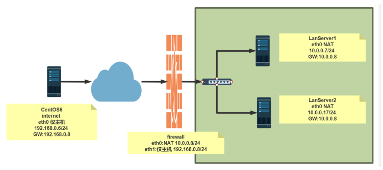</p>
<figure class="highlight sh"><table><tr><td class="gutter"><pre><span class="line">1</span><br><span class="line">2</span><br><span class="line">3</span><br><span class="line">4</span><br><span class="line">5</span><br><span class="line">6</span><br><span class="line">7</span><br><span class="line">8</span><br><span class="line">9</span><br><span class="line">10</span><br><span class="line">11</span><br><span class="line">12</span><br><span class="line">13</span><br><span class="line">14</span><br><span class="line">15</span><br><span class="line">16</span><br><span class="line">17</span><br><span class="line">18</span><br><span class="line">19</span><br><span class="line">20</span><br><span class="line">21</span><br><span class="line">22</span><br><span class="line">23</span><br><span class="line">24</span><br><span class="line">25</span><br><span class="line">26</span><br><span class="line">27</span><br><span class="line">28</span><br><span class="line">29</span><br><span class="line">30</span><br><span class="line">31</span><br><span class="line">32</span><br><span class="line">33</span><br><span class="line">34</span><br><span class="line">35</span><br><span class="line">36</span><br><span class="line">37</span><br><span class="line">38</span><br><span class="line">39</span><br><span class="line">40</span><br><span class="line">41</span><br><span class="line">42</span><br><span class="line">43</span><br><span class="line">44</span><br><span class="line">45</span><br><span class="line">46</span><br><span class="line">47</span><br><span class="line">48</span><br><span class="line">49</span><br><span class="line">50</span><br><span class="line">51</span><br><span class="line">52</span><br><span class="line">53</span><br><span class="line">54</span><br><span class="line">55</span><br><span class="line">56</span><br><span class="line">57</span><br><span class="line">58</span><br><span class="line">59</span><br><span class="line">60</span><br><span class="line">61</span><br><span class="line">62</span><br><span class="line">63</span><br><span class="line">64</span><br><span class="line">65</span><br><span class="line">66</span><br><span class="line">67</span><br><span class="line">68</span><br><span class="line">69</span><br><span class="line">70</span><br><span class="line">71</span><br><span class="line">72</span><br><span class="line">73</span><br><span class="line">74</span><br><span class="line">75</span><br><span class="line">76</span><br><span class="line">77</span><br><span class="line">78</span><br><span class="line">79</span><br><span class="line">80</span><br><span class="line">81</span><br><span class="line">82</span><br><span class="line">83</span><br><span class="line">84</span><br><span class="line">85</span><br><span class="line">86</span><br><span class="line">87</span><br><span class="line">88</span><br><span class="line">89</span><br><span class="line">90</span><br><span class="line">91</span><br><span class="line">92</span><br><span class="line">93</span><br><span class="line">94</span><br><span class="line">95</span><br><span class="line">96</span><br><span class="line">97</span><br><span class="line">98</span><br><span class="line">99</span><br><span class="line">100</span><br><span class="line">101</span><br><span class="line">102</span><br><span class="line">103</span><br><span class="line">104</span><br><span class="line">105</span><br><span class="line">106</span><br><span class="line">107</span><br><span class="line">108</span><br><span class="line">109</span><br><span class="line">110</span><br><span class="line">111</span><br><span class="line">112</span><br><span class="line">113</span><br><span class="line">114</span><br><span class="line">115</span><br><span class="line">116</span><br><span class="line">117</span><br><span class="line">118</span><br><span class="line">119</span><br><span class="line">120</span><br><span class="line">121</span><br><span class="line">122</span><br><span class="line">123</span><br><span class="line">124</span><br><span class="line">125</span><br><span class="line">126</span><br><span class="line">127</span><br><span class="line">128</span><br><span class="line">129</span><br><span class="line">130</span><br><span class="line">131</span><br><span class="line">132</span><br><span class="line">133</span><br><span class="line">134</span><br><span class="line">135</span><br><span class="line">136</span><br><span class="line">137</span><br><span class="line">138</span><br><span class="line">139</span><br><span class="line">140</span><br><span class="line">141</span><br><span class="line">142</span><br><span class="line">143</span><br><span class="line">144</span><br><span class="line">145</span><br><span class="line">146</span><br><span class="line">147</span><br><span class="line">148</span><br><span class="line">149</span><br><span class="line">150</span><br><span class="line">151</span><br><span class="line">152</span><br><span class="line">153</span><br><span class="line">154</span><br><span class="line">155</span><br><span class="line">156</span><br><span class="line">157</span><br><span class="line">158</span><br><span class="line">159</span><br><span class="line">160</span><br><span class="line">161</span><br><span class="line">162</span><br><span class="line">163</span><br><span class="line">164</span><br><span class="line">165</span><br><span class="line">166</span><br><span class="line">167</span><br><span class="line">168</span><br><span class="line">169</span><br><span class="line">170</span><br><span class="line">171</span><br><span class="line">172</span><br><span class="line">173</span><br><span class="line">174</span><br><span class="line">175</span><br><span class="line">176</span><br><span class="line">177</span><br><span class="line">178</span><br><span class="line">179</span><br><span class="line">180</span><br><span class="line">181</span><br><span class="line">182</span><br><span class="line">183</span><br><span class="line">184</span><br><span class="line">185</span><br><span class="line">186</span><br><span class="line">187</span><br><span class="line">188</span><br><span class="line">189</span><br><span class="line">190</span><br><span class="line">191</span><br><span class="line">192</span><br><span class="line">193</span><br><span class="line">194</span><br><span class="line">195</span><br><span class="line">196</span><br><span class="line">197</span><br><span class="line">198</span><br></pre></td><td class="code"><pre><span class="line"><span class="comment">#环境准备</span></span><br><span class="line">[root@internet ~]<span class="comment">#hostname -I</span></span><br><span class="line">192.168.0.6 </span><br><span class="line"></span><br><span class="line">[root@internet ~]<span class="comment">#route -n</span></span><br><span class="line">Kernel IP routing table</span><br><span class="line">Destination     Gateway         Genmask         Flags Metric Ref   Use Iface</span><br><span class="line">192.168.0.0     0.0.0.0         255.255.255.0   U     0      0        0 eth0</span><br><span class="line">169.254.0.0     0.0.0.0         255.255.0.0     U     1002   0        0 eth0</span><br><span class="line">0.0.0.0         192.168.0.8     0.0.0.0         UG    0      0        0 eth0</span><br><span class="line"></span><br><span class="line">[root@firewall ~]<span class="comment">#hostname -I</span></span><br><span class="line">10.0.0.8 192.168.0.8 </span><br><span class="line"></span><br><span class="line">[root@firewall ~]<span class="comment">#vim /etc/sysctl.conf </span></span><br><span class="line">net.ipv4.ip_forward=1</span><br><span class="line"></span><br><span class="line">[root@firewall ~]<span class="comment">#sysctl -p</span></span><br><span class="line">[root@lanserver1 ~]<span class="comment">#hostname -I</span></span><br><span class="line">10.0.0.7 </span><br><span class="line"></span><br><span class="line">[root@lanserver1 ~]<span class="comment">#route -n</span></span><br><span class="line">Kernel IP routing table</span><br><span class="line">Destination     Gateway         Genmask         Flags Metric Ref   Use Iface</span><br><span class="line">0.0.0.0         10.0.0.8        0.0.0.0         UG    100    0        0 eth0</span><br><span class="line">10.0.0.0        0.0.0.0         255.255.255.0   U     100    0        0 eth0</span><br><span class="line"></span><br><span class="line">[root@lanserver2 ~]<span class="comment">#hostname -I</span></span><br><span class="line">10.0.0.17 </span><br><span class="line"></span><br><span class="line">[root@lanserver2 ~]<span class="comment">#route -n</span></span><br><span class="line">Kernel IP routing table</span><br><span class="line">Destination     Gateway         Genmask         Flags Metric Ref   Use Iface</span><br><span class="line">0.0.0.0         10.0.0.8        0.0.0.0         UG    100    0        0 eth0</span><br><span class="line">10.0.0.0        0.0.0.0         255.255.255.0   U     100    0        0 eth0</span><br><span class="line"></span><br><span class="line"><span class="comment">#方法1 通过标准模块实现内网访问外网特定服务http和icmp,反之禁止</span></span><br><span class="line">[root@firewall ~]<span class="comment">#iptables -AFORWARD -j REJECT</span></span><br><span class="line">[root@firewall ~]<span class="comment">#iptables -IFORWARD -s 10.0.0.0/24 -p tcp --dport 80 -j ACCEPT</span></span><br><span class="line">[root@firewall ~]<span class="comment">#iptables -IFORWARD -d 10.0.0.0/24 -p tcp --sport 80 -j ACCEPT</span></span><br><span class="line">[root@firewall ~]<span class="comment">#iptables -I FORWARD   -s 10.0.0.0/24 -p icmp --icmp-type 8 -j ACCEPT</span></span><br><span class="line">[root@firewall ~]<span class="comment">#iptables -I FORWARD   -d 10.0.0.0/24 -p icmp --icmp-type 0 -j ACCEPT</span></span><br><span class="line"></span><br><span class="line">[root@firewall ~]<span class="comment">#iptables -vnL --line-numbers</span></span><br><span class="line">Chain INPUT (policy ACCEPT 0 packets, 0 bytes)</span><br><span class="line">num   pkts bytes target     prot opt <span class="keyword">in</span>     out     <span class="built_in">source</span>               </span><br><span class="line">destination         </span><br><span class="line">Chain FORWARD (policy ACCEPT 0 packets, 0 bytes)</span><br><span class="line">num   pkts bytes target     prot opt <span class="keyword">in</span>     out     <span class="built_in">source</span>               </span><br><span class="line">destination         </span><br><span class="line">1      174 14616 ACCEPT     icmp -- *     *       0.0.0.0/0           </span><br><span class="line">10.0.0.0/24         icmptype 0</span><br><span class="line">2      218 18312 ACCEPT     icmp -- *     *       10.0.0.0/24         </span><br><span class="line">0.0.0.0/0           icmptype 8</span><br><span class="line">3       10  1084 ACCEPT     tcp  -- *     *       0.0.0.0/0           </span><br><span class="line">10.0.0.0/24         tcp spt:80</span><br><span class="line">4       31  1938 ACCEPT     tcp  -- *     *       10.0.0.0/24         </span><br><span class="line">0.0.0.0/0           tcp dpt:80</span><br><span class="line">5      312 25632 REJECT     all  -- *     *       0.0.0.0/0           </span><br><span class="line">0.0.0.0/0           reject-with icmp-port-unreachable</span><br><span class="line">Chain OUTPUT (policy ACCEPT 0 packets, 0 bytes)</span><br><span class="line">num   pkts bytes target     prot opt <span class="keyword">in</span>     out     <span class="built_in">source</span>               </span><br><span class="line">destination   </span><br><span class="line"></span><br><span class="line"></span><br><span class="line"><span class="comment">#方法2 利用state模块实现内网访问可以访问外网,反之禁止</span></span><br><span class="line">[root@firewall ~]<span class="comment">#iptables -DFORWARD 1</span></span><br><span class="line">[root@firewall ~]<span class="comment">#iptables -DFORWARD 2</span></span><br><span class="line">[root@firewall ~]<span class="comment">#iptables -vnL --line-numbers</span></span><br><span class="line">Chain INPUT (policy ACCEPT 0 packets, 0 bytes)</span><br><span class="line">num   pkts bytes target     prot opt <span class="keyword">in</span>     out     <span class="built_in">source</span>               </span><br><span class="line">destination</span><br><span class="line">Chain FORWARD (policy ACCEPT 0 packets, 0 bytes)</span><br><span class="line">num   pkts bytes target     prot opt <span class="keyword">in</span>     out     <span class="built_in">source</span>               </span><br><span class="line">destination         </span><br><span class="line">1      342 28728 ACCEPT     icmp -- *     *       10.0.0.0/24         </span><br><span class="line">0.0.0.0/0           icmptype 8</span><br><span class="line">2       47  2898 ACCEPT     tcp  -- *     *       10.0.0.0/24         </span><br><span class="line">0.0.0.0/0           tcp dpt:80</span><br><span class="line">3      462 37608 REJECT     all  -- *     *       0.0.0.0/0           </span><br><span class="line">0.0.0.0/0           reject-with icmp-port-unreachable</span><br><span class="line">Chain OUTPUT (policy ACCEPT 0 packets, 0 bytes)</span><br><span class="line">num   pkts bytes target     prot opt <span class="keyword">in</span>     out     <span class="built_in">source</span>               </span><br><span class="line">destination   </span><br><span class="line"></span><br><span class="line">[root@firewall ~]<span class="comment">#iptables -IFORWARD -m state --state RELATED,ESTABLISHED -j ACCEPT </span></span><br><span class="line"></span><br><span class="line">[root@firewall ~]<span class="comment">#iptables -vnL --line-numbers</span></span><br><span class="line">Chain INPUT (policy ACCEPT 0 packets, 0 bytes)</span><br><span class="line">num   pkts bytes target     prot opt <span class="keyword">in</span>     out     <span class="built_in">source</span>               </span><br><span class="line">destination         </span><br><span class="line">Chain FORWARD (policy ACCEPT 0 packets, 0 bytes)</span><br><span class="line">num   pkts bytes target     prot opt <span class="keyword">in</span>     out     <span class="built_in">source</span>               </span><br><span class="line">destination         </span><br><span class="line">1       40  3429 ACCEPT     all  -- *     *       0.0.0.0/0           </span><br><span class="line">0.0.0.0/0           state RELATED,ESTABLISHED</span><br><span class="line">2      443 37212 ACCEPT     icmp -- *     *       10.0.0.0/24         </span><br><span class="line">0.0.0.0/0           icmptype 8</span><br><span class="line">3       49  3018 ACCEPT     tcp  -- *     *       10.0.0.0/24         </span><br><span class="line">0.0.0.0/0           tcp dpt:80</span><br><span class="line">4      563 46068 REJECT     all  -- *     *       0.0.0.0/0           </span><br><span class="line">0.0.0.0/0           reject-with icmp-port-unreachable</span><br><span class="line">Chain OUTPUT (policy ACCEPT 0 packets, 0 bytes)</span><br><span class="line">num   pkts bytes target     prot opt <span class="keyword">in</span>     out     <span class="built_in">source</span>               </span><br><span class="line">destination  </span><br><span class="line"></span><br><span class="line">[root@lanserver1 ~]<span class="comment">#ping 192.168.0.6 -c1</span></span><br><span class="line">PING 192.168.0.6 (192.168.0.6) 56(84) bytes of data.</span><br><span class="line">64 bytes from 192.168.0.6: icmp_seq=1 ttl=63 time=2.20 ms</span><br><span class="line">[root@lanserver2 ~]<span class="comment">#curl 192.168.0.6</span></span><br><span class="line">internet</span><br><span class="line"></span><br><span class="line">[root@internet ~]<span class="comment">#ping 10.0.0.7 -c1</span></span><br><span class="line">PING 10.0.0.7 (10.0.0.7) 56(84) bytes of data.</span><br><span class="line">From 192.168.0.8 icmp_seq=1 Destination Port Unreachable</span><br><span class="line"></span><br><span class="line">[root@internet ~]<span class="comment">#curl 10.0.0.7 </span></span><br><span class="line">curl: (7) couldn<span class="string">&#x27;t connect to host</span></span><br><span class="line"><span class="string"></span></span><br><span class="line"><span class="string">#利用state模块实现允许内网可以访问外网所有资源</span></span><br><span class="line"><span class="string">[root@firewall ~]#iptables -A FORWARD -m state --state ESTABLISHED -j ACCEPT</span></span><br><span class="line"><span class="string">[root@firewall ~]#iptables -A FORWARD -s 10.0.0.0/24 ! -d 10.0.0.0/24 -m state --state NEW -j ACCEPT</span></span><br><span class="line"><span class="string">[root@firewall ~]#iptables -A FORWARD -j REJECT</span></span><br><span class="line"><span class="string"></span></span><br><span class="line"><span class="string">[root@firewall ~]#iptables -DFORWARD 2</span></span><br><span class="line"><span class="string">[root@firewall ~]#iptables -DFORWARD 2</span></span><br><span class="line"><span class="string">[root@firewall ~]#iptables -IFORWARD 2 -s 10.0.0.0/24 -m state --state NEW -j ACCEPT</span></span><br><span class="line"><span class="string">[root@firewall ~]#iptables -vnL --line-numbers</span></span><br><span class="line"><span class="string">Chain INPUT (policy ACCEPT 0 packets, 0 bytes)</span></span><br><span class="line"><span class="string">num   pkts bytes target     prot opt in     out     source               </span></span><br><span class="line"><span class="string">destination         </span></span><br><span class="line"><span class="string">Chain FORWARD (policy ACCEPT 0 packets, 0 bytes)</span></span><br><span class="line"><span class="string">num   pkts bytes target     prot opt in     out     source               </span></span><br><span class="line"><span class="string">destination         </span></span><br><span class="line"><span class="string">1      134 15209 ACCEPT     all  -- *     *       0.0.0.0/0           </span></span><br><span class="line"><span class="string">0.0.0.0/0           state RELATED,ESTABLISHED</span></span><br><span class="line"><span class="string">2        3   204 ACCEPT     all  -- *     *       10.0.0.0/24         </span></span><br><span class="line"><span class="string">0.0.0.0/0           state NEW</span></span><br><span class="line"><span class="string">3      572 46680 REJECT     all  -- *     *       0.0.0.0/0           </span></span><br><span class="line"><span class="string">0.0.0.0/0           reject-with icmp-port-unreachable</span></span><br><span class="line"><span class="string">Chain OUTPUT (policy ACCEPT 0 packets, 0 bytes)</span></span><br><span class="line"><span class="string">num   pkts bytes target     prot opt in     out     source               </span></span><br><span class="line"><span class="string">destination    </span></span><br><span class="line"><span class="string"></span></span><br><span class="line"><span class="string">[root@lanserver1 ~]#ping 192.168.0.6 -c1</span></span><br><span class="line"><span class="string">PING 192.168.0.6 (192.168.0.6) 56(84) bytes of data.</span></span><br><span class="line"><span class="string">64 bytes from 192.168.0.6: icmp_seq=1 ttl=63 time=2.26 ms</span></span><br><span class="line"><span class="string"></span></span><br><span class="line"><span class="string">[root@lanserver2 ~]#curl 192.168.0.6</span></span><br><span class="line"><span class="string">internet</span></span><br><span class="line"><span class="string"></span></span><br><span class="line"><span class="string">[root@lanserver2 ~]#ssh 192.168.0.6</span></span><br><span class="line"><span class="string">The authenticity of host &#x27;</span>192.168.0.6 (192.168.0.6)<span class="string">&#x27; can&#x27;</span>t be established.</span><br><span class="line">RSA key fingerprint is SHA256:ldHMw3UFehPuE3bgtMHIX5IxRRTM7fwC4iZ0Qqglcys.</span><br><span class="line">RSA key fingerprint is MD5:8c:44:d9:3d:22:54:62:d8:27:77:d5:06:09:58:76:92.</span><br><span class="line">Are you sure you want to <span class="built_in">continue</span> connecting (<span class="built_in">yes</span>/no)?</span><br><span class="line"></span><br><span class="line">[root@internet ~]<span class="comment">#curl 10.0.0.7 </span></span><br><span class="line">curl: (7) couldn<span class="string">&#x27;t connect to host</span></span><br><span class="line"><span class="string"></span></span><br><span class="line"><span class="string">[root@internet ~]#ping 10.0.0.7 -c1</span></span><br><span class="line"><span class="string">PING 10.0.0.7 (10.0.0.7) 56(84) bytes of data.</span></span><br><span class="line"><span class="string">From 192.168.0.8 icmp_seq=1 Destination Port Unreachable</span></span><br><span class="line"><span class="string"></span></span><br><span class="line"><span class="string">[root@internet ~]#ssh 10.0.0.7</span></span><br><span class="line"><span class="string">ssh: connect to host 10.0.0.7 port 22: Connection refused</span></span><br><span class="line"><span class="string"></span></span><br><span class="line"><span class="string">#允许内网指定主机被外网访问</span></span><br><span class="line"><span class="string">[root@firewall ~]#iptables -IFORWARD 3 -d 10.0.0.7 -p tcp --dport 80 -j ACCEPT</span></span><br><span class="line"><span class="string"></span></span><br><span class="line"><span class="string">[root@firewall ~]#iptables -vnL --line-numbers</span></span><br><span class="line"><span class="string">Chain INPUT (policy ACCEPT 0 packets, 0 bytes)</span></span><br><span class="line"><span class="string">num   pkts bytes target     prot opt in     out     source               </span></span><br><span class="line"><span class="string">destination         </span></span><br><span class="line"><span class="string">Chain FORWARD (policy ACCEPT 0 packets, 0 bytes)</span></span><br><span class="line"><span class="string">num   pkts bytes target     prot opt in     out     source               </span></span><br><span class="line"><span class="string">destination         </span></span><br><span class="line"><span class="string">1       63 12862 ACCEPT     all  -- *     *       0.0.0.0/0           </span></span><br><span class="line"><span class="string">0.0.0.0/0           state RELATED,ESTABLISHED</span></span><br><span class="line"><span class="string">2        9   612 ACCEPT     all  -- *     *       10.0.0.0/24         </span></span><br><span class="line"><span class="string">0.0.0.0/0           state NEW</span></span><br><span class="line"><span class="string">3        1    60 ACCEPT     tcp  -- *     *       0.0.0.0/0           </span></span><br><span class="line"><span class="string">10.0.0.7             tcp dpt:80</span></span><br><span class="line"><span class="string">4      586 47464 REJECT     all  -- *     *       0.0.0.0/0           </span></span><br><span class="line"><span class="string">0.0.0.0/0           reject-with icmp-port-unreachable</span></span><br><span class="line"><span class="string">Chain OUTPUT (policy ACCEPT 0 packets, 0 bytes)</span></span><br><span class="line"><span class="string">num   pkts bytes target     prot opt in     out     source               </span></span><br><span class="line"><span class="string">destination   </span></span><br><span class="line"><span class="string"></span></span><br><span class="line"><span class="string">[root@internet ~]#curl 10.0.0.7 </span></span><br><span class="line"><span class="string">lanserver1</span></span><br><span class="line"><span class="string"></span></span><br><span class="line"><span class="string">[root@internet ~]#ping 10.0.0.7 -c1</span></span><br><span class="line"><span class="string">PING 10.0.0.7 (10.0.0.7) 56(84) bytes of data.</span></span><br><span class="line"><span class="string">From 192.168.0.8 icmp_seq=1 Destination Port Unreachable</span></span><br><span class="line"><span class="string"></span></span><br><span class="line"><span class="string">[root@internet ~]#curl 10.0.0.17 </span></span><br><span class="line"><span class="string">curl: (7) couldn&#x27;</span>t connect to host</span><br></pre></td></tr></table></figure>

<p>范例：内部可以访问外部，外部禁止访问内部</p>
<figure class="highlight sh"><table><tr><td class="gutter"><pre><span class="line">1</span><br><span class="line">2</span><br><span class="line">3</span><br><span class="line">4</span><br><span class="line">5</span><br><span class="line">6</span><br><span class="line">7</span><br><span class="line">8</span><br><span class="line">9</span><br><span class="line">10</span><br><span class="line">11</span><br><span class="line">12</span><br><span class="line">13</span><br><span class="line">14</span><br><span class="line">15</span><br><span class="line">16</span><br><span class="line">17</span><br><span class="line">18</span><br><span class="line">19</span><br><span class="line">20</span><br><span class="line">21</span><br><span class="line">22</span><br><span class="line">23</span><br><span class="line">24</span><br><span class="line">25</span><br><span class="line">26</span><br></pre></td><td class="code"><pre><span class="line">[root@internet-host ~]<span class="comment">#hostname -I</span></span><br><span class="line">10.0.0.6 </span><br><span class="line"></span><br><span class="line">[root@internet-host ~]<span class="comment">#route -n</span></span><br><span class="line">Kernel IP routing table</span><br><span class="line">Destination     Gateway         Genmask         Flags Metric Ref   Use Iface</span><br><span class="line">10.0.0.0        0.0.0.0         255.255.255.0   U     1      0        0 eth0</span><br><span class="line">0.0.0.0         10.0.0.8        0.0.0.0         UG    0      0        0 eth0</span><br><span class="line"></span><br><span class="line">[root@firewall-host ~]<span class="comment">#hostname -I</span></span><br><span class="line">10.0.0.8 192.168.100.8 </span><br><span class="line"></span><br><span class="line">[root@lan-host ~]<span class="comment">#hostname -I</span></span><br><span class="line">192.168.100.7 </span><br><span class="line"></span><br><span class="line">[root@lan-host ~]<span class="comment">#route -n</span></span><br><span class="line">Kernel IP routing table</span><br><span class="line">Destination     Gateway         Genmask         Flags Metric Ref   Use Iface</span><br><span class="line">0.0.0.0         192.168.100.8   0.0.0.0         UG    100    0        0 eth0</span><br><span class="line">192.168.100.0   0.0.0.0         255.255.255.0   U     100    0        0 eth0</span><br><span class="line"></span><br><span class="line">[root@firewall-host ~]<span class="comment">#vim /etc/sysctl.conf</span></span><br><span class="line">net.ipv4.ip_forward=1</span><br><span class="line"></span><br><span class="line">[root@firewall-host ~]<span class="comment">#sysctl -p</span></span><br><span class="line">[root@firewall-host ~]<span class="comment">#iptables -A FORWARD -d 192.168.100.0/24 -m state --state NEW -j REJECT</span></span><br></pre></td></tr></table></figure>

<p>范例：针对内部的特定服务可以允许外部访问，其它服务禁止访问</p>
<figure class="highlight sh"><table><tr><td class="gutter"><pre><span class="line">1</span><br><span class="line">2</span><br><span class="line">3</span><br><span class="line">4</span><br><span class="line">5</span><br><span class="line">6</span><br><span class="line">7</span><br><span class="line">8</span><br><span class="line">9</span><br><span class="line">10</span><br></pre></td><td class="code"><pre><span class="line">[root@firewall-host ~]<span class="comment">#iptables -I FORWARD -d 192.168.100.0/24 -p tcp --dport 80 -j ACCEPT</span></span><br><span class="line"></span><br><span class="line">[root@firewall-host ~]<span class="comment">#iptables -vnL FORWARD --line-numbers</span></span><br><span class="line">Chain FORWARD (policy ACCEPT 0 packets, 0 bytes)</span><br><span class="line">num   pkts bytes target     prot opt <span class="keyword">in</span>     out     <span class="built_in">source</span>               </span><br><span class="line">destination         </span><br><span class="line">1        6   486 ACCEPT     tcp  -- *     *       0.0.0.0/0           </span><br><span class="line">192.168.100.0/24     tcp dpt:80</span><br><span class="line">2        3   228 REJECT     all  -- *     *       0.0.0.0/0           </span><br><span class="line">192.168.100.0/24     state NEW reject-with icmp-port-unreachable</span><br></pre></td></tr></table></figure>

<h3 id="NAT-表"><a href="#NAT-表" class="headerlink" title="NAT 表"></a>NAT 表</h3><p>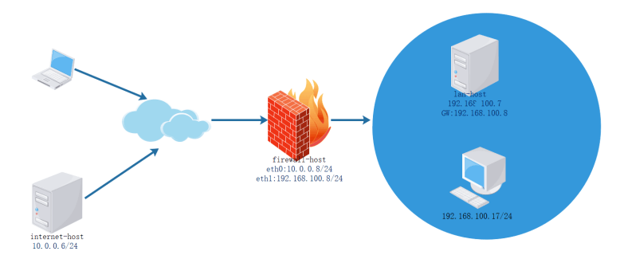</p>
<p>NAT: network address translation，支持PREROUTING，INPUT，OUTPUT，POSTROUTING四个链</p>
<p>请求报文：修改源/目标IP，由定义如何修改 </p>
<p>响应报文：修改源/目标IP，根据跟踪机制自动实现</p>
<p>NAT的实现分为下面类型： </p>
<ul>
<li>SNAT：source NAT ，支持POSTROUTING, INPUT，让本地网络中的主机通过某一特定地址访问外部网络，实现地址伪装,请求报文：修改源IP </li>
<li>DNAT：destination NAT 支持PREROUTING , OUTPUT，把本地网络中的主机上的某服务开放给外部网络访问(发布服务和端口映射)，但隐藏真实IP,请求报文：修改目标IP </li>
<li>PNAT: port nat，端口和IP都进行修改</li>
</ul>
<p><strong>思考题:</strong></p>
<figure class="highlight sh"><table><tr><td class="gutter"><pre><span class="line">1</span><br></pre></td><td class="code"><pre><span class="line">在单位内部使用未经申请的公网地址,如:6.0.0.0/8网段,进行内部网络通讯,并利用SNAT连接Internet,是否可以?</span><br></pre></td></tr></table></figure>

<h3 id="SNAT"><a href="#SNAT" class="headerlink" title="SNAT"></a>SNAT</h3><p>SNAT：基于nat表的target，适用于固定的公网IP</p>
<p>SNAT选项： </p>
<ul>
<li>–to-source [ipaddr[-ipaddr]][:port[-port]] </li>
<li>–random</li>
</ul>
<figure class="highlight sh"><table><tr><td class="gutter"><pre><span class="line">1</span><br></pre></td><td class="code"><pre><span class="line">iptables -t nat -A POSTROUTING -s LocalNET ! -d LocalNet -j SNAT --to[-<span class="built_in">source</span>] ExtIP</span><br></pre></td></tr></table></figure>

<p><strong>注意: 需要开启 ip_forward</strong></p>
<p>范例： </p>
<figure class="highlight sh"><table><tr><td class="gutter"><pre><span class="line">1</span><br></pre></td><td class="code"><pre><span class="line">iptables -t nat -A POSTROUTING -s 10.0.0.0/24 ! -d 10.0.0.0/24 -j SNAT --to-source 172.18.1.6-172.18.1.9</span><br></pre></td></tr></table></figure>

<p>MASQUERADE：基于nat表的target，适用于动态的公网IP，如：拨号网络 </p>
<p>MASQUERADE选项：</p>
<ul>
<li>–to-ports port[-port] </li>
<li>–random</li>
</ul>
<figure class="highlight sh"><table><tr><td class="gutter"><pre><span class="line">1</span><br></pre></td><td class="code"><pre><span class="line">iptables -t nat -A POSTROUTING -s LocalNET ! -d LocalNet -j MASQUERADE</span><br></pre></td></tr></table></figure>

<p>范例：</p>
<figure class="highlight sh"><table><tr><td class="gutter"><pre><span class="line">1</span><br><span class="line">2</span><br></pre></td><td class="code"><pre><span class="line">iptables -t nat -A POSTROUTING -s 10.0.0.0/24 ! -d 10.0.0.0/24 -j MASQUERADE </span><br><span class="line">firewall-cmd --add-rich-rule=<span class="string">&#x27;rule family=ipv4 source address=10.0.0.0/24 masquerade&#x27;</span></span><br></pre></td></tr></table></figure>

<p>范例：查看本地主机访问公网时使用的IP</p>
<figure class="highlight sh"><table><tr><td class="gutter"><pre><span class="line">1</span><br><span class="line">2</span><br><span class="line">3</span><br><span class="line">4</span><br><span class="line">5</span><br><span class="line">6</span><br><span class="line">7</span><br><span class="line">8</span><br><span class="line">9</span><br><span class="line">10</span><br><span class="line">11</span><br><span class="line">12</span><br><span class="line">13</span><br><span class="line">14</span><br><span class="line">15</span><br><span class="line">16</span><br><span class="line">17</span><br><span class="line">18</span><br><span class="line">19</span><br><span class="line">20</span><br><span class="line">21</span><br><span class="line">22</span><br><span class="line">23</span><br><span class="line">24</span><br><span class="line">25</span><br><span class="line">26</span><br><span class="line">27</span><br><span class="line">28</span><br><span class="line">29</span><br><span class="line">30</span><br><span class="line">31</span><br><span class="line">32</span><br><span class="line">33</span><br><span class="line">34</span><br><span class="line">35</span><br></pre></td><td class="code"><pre><span class="line">[root@centos8 ~]<span class="comment">#curl http://ip.sb</span></span><br><span class="line">111.199.191.204</span><br><span class="line"></span><br><span class="line"><span class="comment">#Windows10 支持curl</span></span><br><span class="line">C:\Users\Wang&gt;curl ip.sb</span><br><span class="line">111.199.184.218</span><br><span class="line"></span><br><span class="line">[root@centos8 ~]<span class="comment">#curl http://ipinfo.io/ip/</span></span><br><span class="line">111.199.191.204</span><br><span class="line"></span><br><span class="line">[root@centos8 ~]<span class="comment">#curl http://ifconfig.me</span></span><br><span class="line">111.199.191.204</span><br><span class="line"></span><br><span class="line">[root@centos8 ~]<span class="comment">#curl -L http://tool.lu/ip</span></span><br><span class="line">当前IP: 111.199.191.204</span><br><span class="line">归属地: 中国 北京 北京</span><br><span class="line"></span><br><span class="line">[root@centos8 ~]<span class="comment">#curl -sS --connect-timeout 10 -m 60 </span></span><br><span class="line">https://www.bt.cn/Api/getIpAddress</span><br><span class="line">111.199.189.164</span><br><span class="line"></span><br><span class="line">[root@centos8 ~]<span class="comment">#curl &quot;https://api.ipify.org?format=string&quot;</span></span><br><span class="line">111.199.184.218</span><br><span class="line"></span><br><span class="line">[root@firewall ~]<span class="comment">#curl cip.cc</span></span><br><span class="line">IP : 39.164.140.134</span><br><span class="line">地址 : 中国 河南 鹤壁</span><br><span class="line"></span><br><span class="line">运营商 : 移动</span><br><span class="line"></span><br><span class="line">数据二 : 河南省郑州市 | 移动</span><br><span class="line"></span><br><span class="line">数据三 : </span><br><span class="line"></span><br><span class="line">URL : http://www.cip.cc/39.164.140.134</span><br></pre></td></tr></table></figure>

<p>范例: SNAT</p>
<p>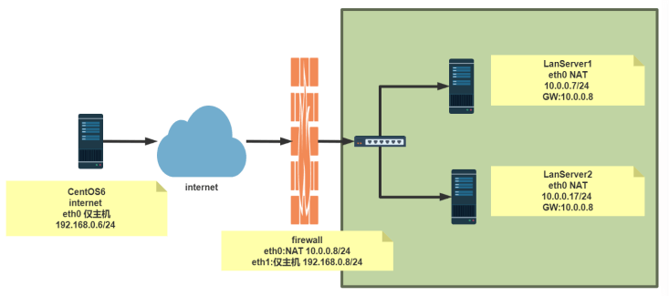</p>
<figure class="highlight sh"><table><tr><td class="gutter"><pre><span class="line">1</span><br><span class="line">2</span><br><span class="line">3</span><br><span class="line">4</span><br><span class="line">5</span><br><span class="line">6</span><br><span class="line">7</span><br><span class="line">8</span><br><span class="line">9</span><br><span class="line">10</span><br><span class="line">11</span><br><span class="line">12</span><br><span class="line">13</span><br><span class="line">14</span><br><span class="line">15</span><br><span class="line">16</span><br><span class="line">17</span><br><span class="line">18</span><br><span class="line">19</span><br><span class="line">20</span><br><span class="line">21</span><br><span class="line">22</span><br><span class="line">23</span><br><span class="line">24</span><br><span class="line">25</span><br><span class="line">26</span><br><span class="line">27</span><br><span class="line">28</span><br><span class="line">29</span><br><span class="line">30</span><br><span class="line">31</span><br><span class="line">32</span><br><span class="line">33</span><br><span class="line">34</span><br><span class="line">35</span><br><span class="line">36</span><br><span class="line">37</span><br><span class="line">38</span><br><span class="line">39</span><br><span class="line">40</span><br><span class="line">41</span><br><span class="line">42</span><br><span class="line">43</span><br></pre></td><td class="code"><pre><span class="line"><span class="comment">#启用路由转发</span></span><br><span class="line">[root@firewall ~]<span class="comment">#vim /etc/sysctl.conf </span></span><br><span class="line">net.ipv4.ip_forward=1</span><br><span class="line"></span><br><span class="line">[root@firewall ~]<span class="comment">#sysctl -p</span></span><br><span class="line"></span><br><span class="line"><span class="comment">#针对专线静态公共IP</span></span><br><span class="line">[root@firewall ~]<span class="comment">#iptables -t nat -A POSTROUTING -s 10.0.0.0/24 -j SNAT --to-source 192.168.0.8</span></span><br><span class="line"></span><br><span class="line"><span class="comment">#针对拨号网络和专线静态公共IP</span></span><br><span class="line">[root@firewall ~]<span class="comment">#iptables -t nat -A POSTROUTING -s 10.0.0.0/24 -j MASQUERADE</span></span><br><span class="line"></span><br><span class="line"><span class="comment">#查看监听端口</span></span><br><span class="line">[root@firewall ~]<span class="comment">#ss -ntl</span></span><br><span class="line">State         Recv-Q         Send-Q                 Local Address:Port           </span><br><span class="line">      Peer Address:Port        </span><br><span class="line">LISTEN        0              128                          0.0.0.0:22             </span><br><span class="line">           0.0.0.0:*           </span><br><span class="line">LISTEN        0              100                        127.0.0.1:25             </span><br><span class="line">           0.0.0.0:*           </span><br><span class="line">LISTEN        0              128                             [::]:22             </span><br><span class="line">              [::]:*           </span><br><span class="line">LISTEN        0              100                           [::1]:25             </span><br><span class="line">              [::]:*  </span><br><span class="line">              </span><br><span class="line">              </span><br><span class="line"><span class="comment">#内网可以访问外网</span></span><br><span class="line">[root@lanserver1 ~]<span class="comment">#curl 192.168.0.6</span></span><br><span class="line">internet</span><br><span class="line"></span><br><span class="line"><span class="comment">#外网不可以访问内网</span></span><br><span class="line">[root@internet ~]<span class="comment">#curl 10.0.0.7</span></span><br><span class="line">curl: (7) Failed to connect to 10.0.0.7: Network is unreachable</span><br><span class="line"></span><br><span class="line"><span class="comment">#在外网服务器查看到是firewalld的地址在访问</span></span><br><span class="line">[root@internet ~]<span class="comment">#tail -f /var/log/httpd/access_log </span></span><br><span class="line">192.168.0.8 - - [08/Jul/2020:17:36:54 +0800] <span class="string">&quot;GET / HTTP/1.1&quot;</span> 200 9 <span class="string">&quot;-&quot;</span> <span class="string">&quot;curl/7.29.0&quot;</span></span><br><span class="line"></span><br><span class="line"><span class="comment">#查看转换状态信息</span></span><br><span class="line">[root@firewall ~]<span class="comment">#cat /proc/net/nf_conntrack</span></span><br><span class="line">ipv4     2 tcp      6 112 TIME_WAIT src=10.0.0.7 dst=192.168.0.6 sport=58384</span><br><span class="line">dport=80 src=192.168.0.6 dst=192.168.0.8 sport=80 dport=58384 [ASSURED] mark=0</span><br><span class="line">zone=0 use=2</span><br></pre></td></tr></table></figure>

<p>范例：实现SNAT</p>
<figure class="highlight sh"><table><tr><td class="gutter"><pre><span class="line">1</span><br><span class="line">2</span><br><span class="line">3</span><br><span class="line">4</span><br><span class="line">5</span><br><span class="line">6</span><br><span class="line">7</span><br><span class="line">8</span><br><span class="line">9</span><br><span class="line">10</span><br><span class="line">11</span><br><span class="line">12</span><br><span class="line">13</span><br><span class="line">14</span><br><span class="line">15</span><br><span class="line">16</span><br><span class="line">17</span><br><span class="line">18</span><br><span class="line">19</span><br><span class="line">20</span><br><span class="line">21</span><br><span class="line">22</span><br><span class="line">23</span><br><span class="line">24</span><br><span class="line">25</span><br><span class="line">26</span><br><span class="line">27</span><br><span class="line">28</span><br><span class="line">29</span><br><span class="line">30</span><br><span class="line">31</span><br><span class="line">32</span><br><span class="line">33</span><br><span class="line">34</span><br><span class="line">35</span><br><span class="line">36</span><br><span class="line">37</span><br><span class="line">38</span><br><span class="line">39</span><br><span class="line">40</span><br><span class="line">41</span><br><span class="line">42</span><br><span class="line">43</span><br><span class="line">44</span><br><span class="line">45</span><br><span class="line">46</span><br><span class="line">47</span><br><span class="line">48</span><br><span class="line">49</span><br><span class="line">50</span><br><span class="line">51</span><br><span class="line">52</span><br><span class="line">53</span><br><span class="line">54</span><br><span class="line">55</span><br><span class="line">56</span><br><span class="line">57</span><br><span class="line">58</span><br><span class="line">59</span><br><span class="line">60</span><br><span class="line">61</span><br><span class="line">62</span><br><span class="line">63</span><br><span class="line">64</span><br><span class="line">65</span><br><span class="line">66</span><br><span class="line">67</span><br><span class="line">68</span><br><span class="line">69</span><br><span class="line">70</span><br><span class="line">71</span><br><span class="line">72</span><br><span class="line">73</span><br><span class="line">74</span><br><span class="line">75</span><br><span class="line">76</span><br><span class="line">77</span><br><span class="line">78</span><br><span class="line">79</span><br><span class="line">80</span><br><span class="line">81</span><br><span class="line">82</span><br><span class="line">83</span><br><span class="line">84</span><br><span class="line">85</span><br><span class="line">86</span><br><span class="line">87</span><br></pre></td><td class="code"><pre><span class="line">[root@internet-host ~]<span class="comment">#hostname -I</span></span><br><span class="line">10.0.0.6 </span><br><span class="line"></span><br><span class="line">[root@internet-host ~]<span class="comment">#route -n</span></span><br><span class="line">Kernel IP routing table</span><br><span class="line">Destination     Gateway         Genmask         Flags Metric Ref   Use Iface</span><br><span class="line">10.0.0.0        0.0.0.0         255.255.255.0   U     1      0        0 eth0</span><br><span class="line"></span><br><span class="line"><span class="comment">#启用路由转发</span></span><br><span class="line">[root@firewall ~]<span class="comment">#vim /etc/sysctl.conf </span></span><br><span class="line">net.ipv4.ip_forward=1</span><br><span class="line"></span><br><span class="line">[root@firewall ~]<span class="comment">#sysctl -p</span></span><br><span class="line"></span><br><span class="line"></span><br><span class="line">[root@firewall-host ~]<span class="comment">#hostname -I</span></span><br><span class="line">10.0.0.8 192.168.100.8 </span><br><span class="line"></span><br><span class="line">[root@firewall-host ~]<span class="comment">#sysctl -a |grep net.ipv4.ip_forward</span></span><br><span class="line">net.ipv4.ip_forward = 1</span><br><span class="line"></span><br><span class="line">[root@lan-host ~]<span class="comment">#hostname -I</span></span><br><span class="line">192.168.100.7 </span><br><span class="line"></span><br><span class="line">[root@lan-host ~]<span class="comment">#route -n</span></span><br><span class="line">Kernel IP routing table</span><br><span class="line">Destination     Gateway         Genmask         Flags Metric Ref   Use Iface</span><br><span class="line">0.0.0.0         192.168.100.8   0.0.0.0         UG    100    0        0 eth0</span><br><span class="line">192.168.100.0   0.0.0.0         255.255.255.0   U     100    0        0 eth0</span><br><span class="line"></span><br><span class="line">[root@firewall-host ~]<span class="comment">#iptables -t nat -A POSTROUTING -s 192.168.100.0/24 -j SNAT --to-source 10.0.0.8</span></span><br><span class="line"></span><br><span class="line">[root@firewall-host ~]<span class="comment">#iptables -vnL -t nat</span></span><br><span class="line">Chain PREROUTING (policy ACCEPT 0 packets, 0 bytes)</span><br><span class="line"> pkts bytes target     prot opt <span class="keyword">in</span>     out     <span class="built_in">source</span>               destination </span><br><span class="line">        </span><br><span class="line">Chain INPUT (policy ACCEPT 0 packets, 0 bytes)</span><br><span class="line"> pkts bytes target     prot opt <span class="keyword">in</span>     out     <span class="built_in">source</span>               destination </span><br><span class="line">        </span><br><span class="line">Chain POSTROUTING (policy ACCEPT 0 packets, 0 bytes)</span><br><span class="line"> pkts bytes target     prot opt <span class="keyword">in</span>     out     <span class="built_in">source</span>               destination </span><br><span class="line">        </span><br><span class="line">    0     0 SNAT       all  -- *     *       192.168.100.0/24     0.0.0.0/0   </span><br><span class="line">        to:10.0.0.8</span><br><span class="line">Chain OUTPUT (policy ACCEPT 0 packets, 0 bytes)</span><br><span class="line">pkts bytes target     prot opt <span class="keyword">in</span>     out     <span class="built_in">source</span>               destination </span><br><span class="line"></span><br><span class="line">[root@lan-host ~]<span class="comment">#curl 10.0.0.6</span></span><br><span class="line">internet Server</span><br><span class="line"></span><br><span class="line">[root@internet-host ~]<span class="comment">#curl 192.168.100.7</span></span><br><span class="line">curl: (7) Failed to connect to 192.168.100.7: Network is unreachable</span><br><span class="line"></span><br><span class="line">[root@internet-host ~]<span class="comment">#tail /var/log/httpd/access_log </span></span><br><span class="line">10.0.0.8 - - [21/Mar/2020:16:31:35 +0800] <span class="string">&quot;GET / HTTP/1.1&quot;</span> 200 16 <span class="string">&quot;-&quot;</span> <span class="string">&quot;curl/7.29.0&quot;</span></span><br><span class="line"></span><br><span class="line">[root@lan-host ~]<span class="comment">#ping 10.0.0.6</span></span><br><span class="line">PING 10.0.0.6 (10.0.0.6) 56(84) bytes of data.</span><br><span class="line">64 bytes from 10.0.0.6: icmp_seq=1 ttl=63 time=0.989 ms</span><br><span class="line">64 bytes from 10.0.0.6: icmp_seq=2 ttl=63 time=0.544 ms</span><br><span class="line"></span><br><span class="line">[root@internet-host ~]<span class="comment">#tcpdump -i eth0 -nn icmp</span></span><br><span class="line">tcpdump: verbose output suppressed, use -v or -vv <span class="keyword">for</span> full protocol decode</span><br><span class="line">listening on eth0, link-type EN10MB (Ethernet), capture size 65535 bytes</span><br><span class="line">16:34:30.171222 IP 10.0.0.8 &gt; 10.0.0.6: ICMP <span class="built_in">echo</span> request, <span class="built_in">id</span> 24718, <span class="built_in">seq</span> 120, length 64</span><br><span class="line">16:34:30.171255 IP 10.0.0.6 &gt; 10.0.0.8: ICMP <span class="built_in">echo</span> reply, <span class="built_in">id</span> 24718, <span class="built_in">seq</span> 120, length 64</span><br><span class="line"></span><br><span class="line">[root@firewall-host ~]<span class="comment">#iptables -t nat -R POSTROUTING 1 -s 192.168.100.0/24 -j MASQUERADE </span></span><br><span class="line"></span><br><span class="line">[root@firewall-host ~]<span class="comment">#iptables -t nat -nvL</span></span><br><span class="line">Chain PREROUTING (policy ACCEPT 0 packets, 0 bytes)</span><br><span class="line"> pkts bytes target     prot opt <span class="keyword">in</span>     out     <span class="built_in">source</span>               destination </span><br><span class="line">        </span><br><span class="line">Chain INPUT (policy ACCEPT 0 packets, 0 bytes)</span><br><span class="line"> pkts bytes target     prot opt <span class="keyword">in</span>     out     <span class="built_in">source</span>               destination </span><br><span class="line">        </span><br><span class="line">Chain POSTROUTING (policy ACCEPT 0 packets, 0 bytes)</span><br><span class="line"> pkts bytes target     prot opt <span class="keyword">in</span>     out     <span class="built_in">source</span>               destination </span><br><span class="line">        </span><br><span class="line">    0     0 MASQUERADE all  -- *     *       192.168.100.0/24     0.0.0.0/0   </span><br><span class="line">        </span><br><span class="line">Chain OUTPUT (policy ACCEPT 0 packets, 0 bytes)</span><br><span class="line"> pkts bytes target     prot opt <span class="keyword">in</span>     out     <span class="built_in">source</span>               destination </span><br><span class="line"> </span><br><span class="line">[root@firewall-host ~]<span class="comment">#cat /proc/net/nf_conntrack</span></span><br><span class="line">ipv4     2 tcp      6 32 TIME_WAIT src=192.168.100.7 dst=10.0.0.6 sport=39430</span><br><span class="line">dport=80 src=10.0.0.6 dst=10.0.0.8 sport=80 dport=39430 [ASSURED] mark=0 zone=0 use=2</span><br></pre></td></tr></table></figure>

<h3 id="DNAT"><a href="#DNAT" class="headerlink" title="DNAT"></a>DNAT</h3><p>DNAT：nat表的target，适用于端口映射，即可重定向到本机，也可以支持重定向至不同主机的不同端口，但不支持多目标，即不支持负载均衡功能 </p>
<p>DNAT选项：</p>
<ul>
<li>–to-destination [ipaddr[-ipaddr]][:port[-port]]</li>
</ul>
<figure class="highlight sh"><table><tr><td class="gutter"><pre><span class="line">1</span><br><span class="line">2</span><br><span class="line">3</span><br><span class="line">4</span><br><span class="line">5</span><br><span class="line">6</span><br><span class="line">7</span><br><span class="line">8</span><br><span class="line">9</span><br><span class="line">10</span><br><span class="line">11</span><br></pre></td><td class="code"><pre><span class="line">[root@firewall-host ~]<span class="comment">#man iptables-extensions</span></span><br><span class="line">--to-destination [ipaddr[-ipaddr]][:port[-port]]</span><br><span class="line">   <span class="built_in">which</span> can specify a single new destination IP address, an inclusive range </span><br><span class="line">of IP addresses. Optionally a port range, <span class="keyword">if</span> the rule also specifies one of the </span><br><span class="line">following protocols: tcp, udp, dccp or sctp. If no port range is specified, </span><br><span class="line"><span class="keyword">then</span> the destination port will never be modi-fied. If no IP address is specified </span><br><span class="line"><span class="keyword">then</span> only the destination port will be modified. In Ker-nels up to  2.6.10 </span><br><span class="line">you can add several --to-destination options. For those kernels, <span class="keyword">if</span> you specify </span><br><span class="line">more than one destination address, either via an address range or multiple  --todes-tination options, a simple round-robin (one after another <span class="keyword">in</span> cycle) load </span><br><span class="line">balancing takes place between these addresses. Later Kernels (&gt;= 2.6.11-rc1) </span><br><span class="line">don<span class="string">&#x27;t have the ability to NAT to multiple ranges anymore.</span></span><br></pre></td></tr></table></figure>

<p>DNAT 格式:</p>
<figure class="highlight sh"><table><tr><td class="gutter"><pre><span class="line">1</span><br></pre></td><td class="code"><pre><span class="line">iptables -t nat -A PREROUTING -d ExtIP -p tcp|udp --dport PORT -j DNAT --to-destination InterSeverIP[:PORT]</span><br></pre></td></tr></table></figure>

<p><strong>注意: 需要开启 ip_forward</strong></p>
<p>范例: DNAT</p>
<p></p>
<figure class="highlight sh"><table><tr><td class="gutter"><pre><span class="line">1</span><br><span class="line">2</span><br><span class="line">3</span><br><span class="line">4</span><br><span class="line">5</span><br><span class="line">6</span><br><span class="line">7</span><br><span class="line">8</span><br><span class="line">9</span><br><span class="line">10</span><br><span class="line">11</span><br><span class="line">12</span><br><span class="line">13</span><br><span class="line">14</span><br><span class="line">15</span><br><span class="line">16</span><br><span class="line">17</span><br><span class="line">18</span><br><span class="line">19</span><br><span class="line">20</span><br><span class="line">21</span><br><span class="line">22</span><br><span class="line">23</span><br><span class="line">24</span><br><span class="line">25</span><br><span class="line">26</span><br><span class="line">27</span><br><span class="line">28</span><br><span class="line">29</span><br><span class="line">30</span><br><span class="line">31</span><br><span class="line">32</span><br></pre></td><td class="code"><pre><span class="line"><span class="comment">#启用路由转发</span></span><br><span class="line">[root@firewall ~]<span class="comment">#vim /etc/sysctl.conf </span></span><br><span class="line">net.ipv4.ip_forward=1</span><br><span class="line"></span><br><span class="line">[root@firewall ~]<span class="comment">#sysctl -p</span></span><br><span class="line"></span><br><span class="line">[root@firewall ~]<span class="comment">#iptables -t nat -A PREROUTING -d 192.168.0.8 -p tcp --dport 80 -j DNAT --to-destination 10.0.0.7:8080</span></span><br><span class="line"></span><br><span class="line">[root@firewall ~]<span class="comment">#ss -ntl</span></span><br><span class="line">State         Recv-Q         Send-Q                 Local Address:Port           </span><br><span class="line">      Peer Address:Port</span><br><span class="line">LISTEN        0              128                          0.0.0.0:22             </span><br><span class="line">           0.0.0.0:*           </span><br><span class="line">LISTEN        0              100                        127.0.0.1:25             </span><br><span class="line">           0.0.0.0:*           </span><br><span class="line">LISTEN        0              128                             [::]:22             </span><br><span class="line">              [::]:*           </span><br><span class="line">LISTEN        0              100                            [::1]:25             </span><br><span class="line">              [::]:*    </span><br><span class="line">              </span><br><span class="line">              </span><br><span class="line">[root@internet ~]<span class="comment">#curl 192.168.0.8</span></span><br><span class="line">lanserver1</span><br><span class="line"></span><br><span class="line">[root@lanserver1 ~]<span class="comment">#tail /var/log/httpd/access_log </span></span><br><span class="line">192.168.0.6 - - [08/Jul/2020:18:10:37 +0800] <span class="string">&quot;GET / HTTP/1.1&quot;</span> 200 11 <span class="string">&quot;-&quot;</span></span><br><span class="line"><span class="string">&quot;curl/7.19.7 (x86_64-redhat-linux-gnu) libcurl/7.19.7 NSS/3.27.1 zlib/1.2.3 libidn/1.18 libssh2/1.4.2&quot;</span></span><br><span class="line"></span><br><span class="line">[root@firewall ~]<span class="comment">#cat /proc/net/nf_conntrack</span></span><br><span class="line">ipv4     2 tcp      6 117 TIME_WAIT src=192.168.0.6 dst=192.168.0.8 sport=58170</span><br><span class="line">dport=80 src=10.0.0.7 dst=192.168.0.6 sport=8080 dport=58170 [ASSURED] mark=0</span><br><span class="line">zone=0 use=2</span><br></pre></td></tr></table></figure>

<p>范例：</p>
<figure class="highlight sh"><table><tr><td class="gutter"><pre><span class="line">1</span><br><span class="line">2</span><br><span class="line">3</span><br></pre></td><td class="code"><pre><span class="line">iptables -t nat -A PREROUTING -s 0/0 -d 172.18.100.6 -p tcp --dport 22 -j DNAT --to-destination 10.0.1.22</span><br><span class="line"></span><br><span class="line">iptables -t nat -A PREROUTING -s 0/0 -d 172.18.100.6 -p tcp --dport 80 -j DNAT --to-destination 10.0.1.22:8080</span><br></pre></td></tr></table></figure>

<p>范例：</p>
<figure class="highlight sh"><table><tr><td class="gutter"><pre><span class="line">1</span><br><span class="line">2</span><br><span class="line">3</span><br><span class="line">4</span><br><span class="line">5</span><br><span class="line">6</span><br><span class="line">7</span><br><span class="line">8</span><br><span class="line">9</span><br><span class="line">10</span><br><span class="line">11</span><br><span class="line">12</span><br><span class="line">13</span><br><span class="line">14</span><br><span class="line">15</span><br><span class="line">16</span><br><span class="line">17</span><br><span class="line">18</span><br><span class="line">19</span><br><span class="line">20</span><br><span class="line">21</span><br><span class="line">22</span><br><span class="line">23</span><br><span class="line">24</span><br><span class="line">25</span><br><span class="line">26</span><br><span class="line">27</span><br><span class="line">28</span><br><span class="line">29</span><br><span class="line">30</span><br><span class="line">31</span><br><span class="line">32</span><br><span class="line">33</span><br><span class="line">34</span><br><span class="line">35</span><br><span class="line">36</span><br><span class="line">37</span><br><span class="line">38</span><br><span class="line">39</span><br><span class="line">40</span><br><span class="line">41</span><br><span class="line">42</span><br><span class="line">43</span><br><span class="line">44</span><br><span class="line">45</span><br><span class="line">46</span><br><span class="line">47</span><br><span class="line">48</span><br><span class="line">49</span><br><span class="line">50</span><br><span class="line">51</span><br><span class="line">52</span><br><span class="line">53</span><br><span class="line">54</span><br><span class="line">55</span><br><span class="line">56</span><br><span class="line">57</span><br><span class="line">58</span><br><span class="line">59</span><br><span class="line">60</span><br><span class="line">61</span><br><span class="line">62</span><br><span class="line">63</span><br><span class="line">64</span><br><span class="line">65</span><br><span class="line">66</span><br><span class="line">67</span><br><span class="line">68</span><br><span class="line">69</span><br><span class="line">70</span><br><span class="line">71</span><br><span class="line">72</span><br><span class="line">73</span><br><span class="line">74</span><br></pre></td><td class="code"><pre><span class="line">[root@firewall-host ~]<span class="comment">#iptables -t nat -A PREROUTING -d 10.0.0.8 -p tcp --dport 80 -j DNAT --to-destination 192.168.100.7 </span></span><br><span class="line"></span><br><span class="line">[root@firewall-host ~]<span class="comment">#iptables -t nat -vnL PREROUTING</span></span><br><span class="line">Chain PREROUTING (policy ACCEPT 0 packets, 0 bytes)</span><br><span class="line"> pkts bytes target     prot opt <span class="keyword">in</span>     out     <span class="built_in">source</span>               destination </span><br><span class="line">        </span><br><span class="line">    0     0 DNAT       tcp  -- *     *       0.0.0.0/0              10.0.0.8     </span><br><span class="line">        tcp dpt:80 to:192.168.100.7</span><br><span class="line">        </span><br><span class="line">        </span><br><span class="line">[root@firewall-host ~]<span class="comment">#ss -ntl</span></span><br><span class="line">State       Recv-Q       Send-Q                 Local Address:Port             </span><br><span class="line">    Peer Address:Port        </span><br><span class="line">LISTEN       0             128                          0.0.0.0:22               </span><br><span class="line">         0.0.0.0:*           </span><br><span class="line">LISTEN       0             128                             [::]:22               </span><br><span class="line">            [::]:* </span><br><span class="line">            </span><br><span class="line">            </span><br><span class="line">[root@internet-host ~]<span class="comment">#curl 10.0.0.8</span></span><br><span class="line">lan server</span><br><span class="line"></span><br><span class="line">[root@internet-host ~]<span class="comment">#telnet 10.0.0.8</span></span><br><span class="line">Trying 10.0.0.8...</span><br><span class="line">telnet: connect to address 10.0.0.8: Connection refused</span><br><span class="line"></span><br><span class="line">[root@lan-host ~]<span class="comment">#tail -f /var/log/httpd/access_log </span></span><br><span class="line">10.0.0.6 - - [21/Mar/2020:17:32:37 +0800] <span class="string">&quot;GET / HTTP/1.1&quot;</span> 200 11 <span class="string">&quot;-&quot;</span></span><br><span class="line"><span class="string">&quot;curl/7.19.7 (x86_64-redhat-linux-gnu) libcurl/7.19.7 NSS/3.27.1 zlib/1.2.3 libidn/1.18 libssh2/1.4.2&quot;</span></span><br><span class="line"></span><br><span class="line">[root@firewall-host ~]<span class="comment">#tail -f /proc/net/nf_conntrack</span></span><br><span class="line">ipv4     2 tcp      6 81 TIME_WAIT src=10.0.0.6 dst=10.0.0.8 sport=59426</span><br><span class="line">dport=80 src=192.168.100.7 dst=10.0.0.6 sport=80 dport=59426 [ASSURED] mark=0</span><br><span class="line">zone=0 use=2</span><br><span class="line"></span><br><span class="line">[root@lan-host ~]<span class="comment">#vim /etc/httpd/conf/httpd.conf </span></span><br><span class="line">listen 8000</span><br><span class="line"></span><br><span class="line">[root@lan-host ~]<span class="comment">#systemctl restart httpd</span></span><br><span class="line"></span><br><span class="line">[root@lan-host ~]<span class="comment">#ss -ntl</span></span><br><span class="line">State     Recv-Q Send-Q         Local Address:Port                         Peer </span><br><span class="line">Address:Port              </span><br><span class="line">LISTEN     0      100                 127.0.0.1:25                               </span><br><span class="line">      *:*                  </span><br><span class="line">LISTEN     0      128                         *:22                               </span><br><span class="line">      *:*                  </span><br><span class="line">LISTEN     0      128                     [::]:23                               </span><br><span class="line">    [::]:*                  </span><br><span class="line">LISTEN     0      100                     [::1]:25                               </span><br><span class="line">    [::]:*                  </span><br><span class="line">LISTEN     0      128                     [::]:8000                             </span><br><span class="line">    [::]:*                  </span><br><span class="line">LISTEN     0      128                     [::]:22                               </span><br><span class="line">    [::]:*                  </span><br><span class="line">    </span><br><span class="line">[root@firewall-host ~]<span class="comment">#iptables -t nat -R PREROUTING 1 -d 10.0.0.8 -p tcp --dport 80 -j DNAT --to-destination 192.168.100.7:8000 </span></span><br><span class="line"></span><br><span class="line">[root@firewall-host ~]<span class="comment">#iptables -t nat -vnL</span></span><br><span class="line">Chain PREROUTING (policy ACCEPT 0 packets, 0 bytes)</span><br><span class="line"> pkts bytes target     prot opt <span class="keyword">in</span>     out     <span class="built_in">source</span>               destination </span><br><span class="line">        </span><br><span class="line">    0     0 DNAT       tcp  -- *     *       0.0.0.0/0            10.0.0.8     </span><br><span class="line">        tcp dpt:80 to:192.168.100.7:8000</span><br><span class="line">Chain INPUT (policy ACCEPT 0 packets, 0 bytes)</span><br><span class="line"> pkts bytes target     prot opt <span class="keyword">in</span>     out     <span class="built_in">source</span>               destination </span><br><span class="line">        </span><br><span class="line">Chain POSTROUTING (policy ACCEPT 0 packets, 0 bytes)</span><br><span class="line"> pkts bytes target     prot opt <span class="keyword">in</span>     out     <span class="built_in">source</span>               destination </span><br><span class="line">        </span><br><span class="line">   11   816 MASQUERADE all  -- *     *       192.168.100.0/24     0.0.0.0/0   </span><br><span class="line">        </span><br><span class="line">Chain OUTPUT (policy ACCEPT 0 packets, 0 bytes)</span><br><span class="line"> pkts bytes target     prot opt <span class="keyword">in</span>     out     <span class="built_in">source</span>               destination</span><br></pre></td></tr></table></figure>

<h3 id="REDIRECT-转发"><a href="#REDIRECT-转发" class="headerlink" title="REDIRECT 转发"></a>REDIRECT 转发</h3><p>REDIRECT，是NAT表的 target，通过改变目标IP和端口，将接受的包转发至同一个主机的不同端口，可用于PREROUTING OUTPUT链 </p>
<p>REDIRECT选项：</p>
<ul>
<li>–to-ports port[-port] </li>
</ul>
<p><strong>注意: 无需开启 ip_forward</strong> </p>
<p>范例：</p>
<figure class="highlight sh"><table><tr><td class="gutter"><pre><span class="line">1</span><br></pre></td><td class="code"><pre><span class="line">iptables -t nat -A PREROUTING -d 172.16.100.10 -p tcp --dport 80 -j REDIRECT --to-ports 8080</span><br></pre></td></tr></table></figure>

<p>范例：</p>
<figure class="highlight sh"><table><tr><td class="gutter"><pre><span class="line">1</span><br><span class="line">2</span><br><span class="line">3</span><br><span class="line">4</span><br><span class="line">5</span><br><span class="line">6</span><br><span class="line">7</span><br><span class="line">8</span><br><span class="line">9</span><br><span class="line">10</span><br><span class="line">11</span><br><span class="line">12</span><br><span class="line">13</span><br><span class="line">14</span><br><span class="line">15</span><br><span class="line">16</span><br><span class="line">17</span><br><span class="line">18</span><br><span class="line">19</span><br><span class="line">20</span><br><span class="line">21</span><br><span class="line">22</span><br><span class="line">23</span><br><span class="line">24</span><br><span class="line">25</span><br><span class="line">26</span><br><span class="line">27</span><br><span class="line">28</span><br><span class="line">29</span><br><span class="line">30</span><br><span class="line">31</span><br><span class="line">32</span><br></pre></td><td class="code"><pre><span class="line">[root@lan-host ~]<span class="comment">#ss -ntl</span></span><br><span class="line">State     Recv-Q Send-Q         Local Address:Port                         Peer </span><br><span class="line">Address:Port              </span><br><span class="line">LISTEN     0      100                 127.0.0.1:25                               </span><br><span class="line">      *:*                  </span><br><span class="line">LISTEN     0      128                         *:22                               </span><br><span class="line">      *:*                  </span><br><span class="line">LISTEN     0      128                     [::]:23                               </span><br><span class="line">    [::]:*                  </span><br><span class="line">LISTEN     0      100                     [::1]:25                               </span><br><span class="line">    [::]:*                  </span><br><span class="line">LISTEN     0      128                     [::]:80                               </span><br><span class="line">    [::]:*                  </span><br><span class="line">LISTEN     0      128                     [::]:22                               </span><br><span class="line">    [::]:*                  </span><br><span class="line">    </span><br><span class="line">[root@lan-host ~]<span class="comment">#iptables -t nat -A PREROUTING -p tcp --dport 8000 -j REDIRECT --to-ports 80</span></span><br><span class="line"></span><br><span class="line">[root@lan-host ~]<span class="comment">#iptables -vnL -t nat</span></span><br><span class="line">Chain PREROUTING (policy ACCEPT 0 packets, 0 bytes)</span><br><span class="line"> pkts bytes target     prot opt <span class="keyword">in</span>     out     <span class="built_in">source</span>               destination </span><br><span class="line">        </span><br><span class="line">    1    60 REDIRECT   tcp  -- *     *       0.0.0.0/0            0.0.0.0/0   </span><br><span class="line">        tcp dpt:8000 redir ports 80</span><br><span class="line">Chain INPUT (policy ACCEPT 1 packets, 60 bytes)</span><br><span class="line"> pkts bytes target     prot opt <span class="keyword">in</span>     out     <span class="built_in">source</span>               destination </span><br><span class="line">        </span><br><span class="line">Chain OUTPUT (policy ACCEPT 1 packets, 120 bytes)</span><br><span class="line"> pkts bytes target     prot opt <span class="keyword">in</span>     out     <span class="built_in">source</span>               destination </span><br><span class="line">        </span><br><span class="line">Chain POSTROUTING (policy ACCEPT 1 packets, 120 bytes)</span><br><span class="line"> pkts bytes target     prot opt <span class="keyword">in</span>     out     <span class="built_in">source</span>               destination</span><br></pre></td></tr></table></figure>

<h1 id="Firewalld"><a href="#Firewalld" class="headerlink" title="Firewalld"></a>Firewalld</h1><h2 id="Firewalld-介绍"><a href="#Firewalld-介绍" class="headerlink" title="Firewalld 介绍"></a>Firewalld 介绍</h2><p>firewalld是CentOS 7.0新推出的管理netfilter的用户空间软件工具,也被ubuntu18.04版以上所支持(apt install firewalld安装即可)</p>
<p>firewalld是配置和监控防火墙规则的系统守护进程。可以实现iptables,ip6tables,ebtables的功能</p>
<p>firewalld服务由firewalld包提供</p>
<p>firewalld支持划分区域zone,每个zone可以设置独立的防火墙规则</p>
<p><strong>归入zone顺序：</strong></p>
<ul>
<li>先根据数据包中源地址，将其纳为某个zone</li>
<li>纳为网络接口所属zone</li>
<li>纳入默认zone，默认为public zone,管理员可以改为其它zone</li>
<li>网卡默认属于public zone,lo网络接口属于trusted zone</li>
</ul>
<p><strong>firewalld zone 分类</strong></p>
<p>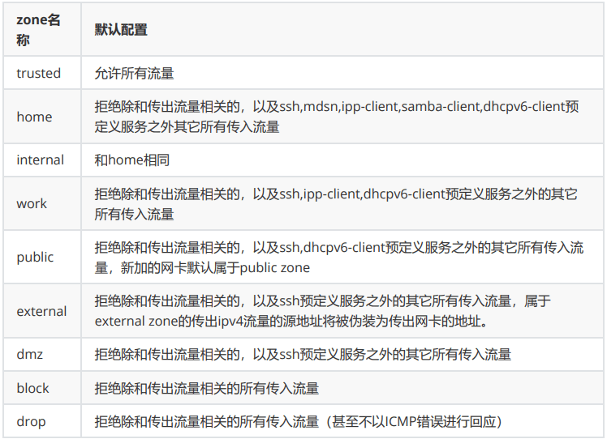</p>
<p><strong>预定义服务</strong></p>
<p>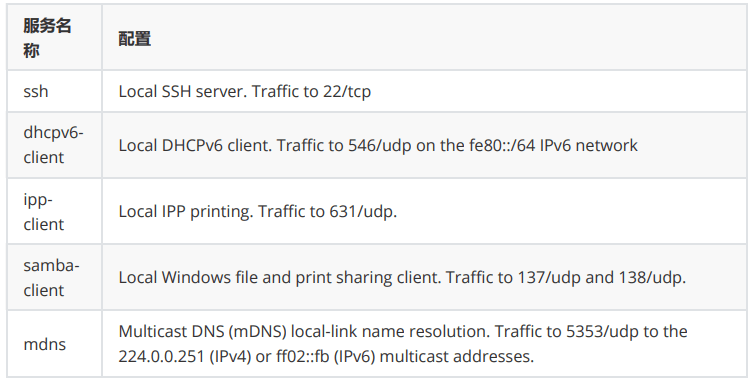</p>
<p>firewalld预定义服务配置</p>
<ul>
<li> firewall-cmd –get-services 查看预定义服务列表</li>
<li>/usr/lib/firewalld/services/*.xml预定义服务的配置 </li>
</ul>
<p>firewalld 三种配置方法 </p>
<ul>
<li>firewall-config 图形工具: 需安装 firewall-config包</li>
<li>firewall-cmd 命令行工具: firewalld包,默认安装 </li>
<li>/etc/firewalld/ 配置文件，一般不建议,如:/etc/firewalld/zones/public.xml</li>
</ul>
<h2 id="Firewall-cmd-命令"><a href="#Firewall-cmd-命令" class="headerlink" title="Firewall-cmd 命令"></a>Firewall-cmd 命令</h2><p>firewall-cmd 格式</p>
<figure class="highlight http"><table><tr><td class="gutter"><pre><span class="line">1</span><br></pre></td><td class="code"><pre><span class="line"><span class="attribute">Usage</span><span class="punctuation">: </span>firewall-cmd [OPTIONS...]</span><br></pre></td></tr></table></figure>

<p>常见选项</p>
<figure class="highlight sh"><table><tr><td class="gutter"><pre><span class="line">1</span><br><span class="line">2</span><br><span class="line">3</span><br><span class="line">4</span><br><span class="line">5</span><br><span class="line">6</span><br><span class="line">7</span><br><span class="line">8</span><br><span class="line">9</span><br><span class="line">10</span><br><span class="line">11</span><br><span class="line">12</span><br><span class="line">13</span><br><span class="line">14</span><br><span class="line">15</span><br><span class="line">16</span><br><span class="line">17</span><br></pre></td><td class="code"><pre><span class="line">--state         查看firewalld状态</span><br><span class="line">--get-zones 列出所有可用区域</span><br><span class="line">--get-default-zone 查询默认区域</span><br><span class="line">--set-default-zone=&lt;ZONE&gt; 设置默认区域</span><br><span class="line">--get-active-zones 列出当前正使用的区域</span><br><span class="line">--add-source=&lt;CIDR&gt;[--zone=&lt;ZONE&gt;] 添加源地址的流量到指定区域，如果无--zone= 选项，使用默认区域</span><br><span class="line">--remove-source=&lt;CIDR&gt; [--zone=&lt;ZONE&gt;] 从指定区域删除源地址的流量，如无--zone= 选项，使用默认区域</span><br><span class="line">--add-interface=&lt;INTERFACE&gt;[--zone=&lt;ZONE&gt;] 添加来自于指定接口的流量到特定区域，如果无--zone= 选项，使用默认区域</span><br><span class="line">--change-interface=&lt;INTERFACE&gt;[--zone=&lt;ZONE&gt;] 改变指定接口至新的区域，如果无--zone=选项，使用默认区域</span><br><span class="line">--add-service=&lt;SERVICE&gt; [--zone=&lt;ZONE&gt;] 允许服务的流量通过，如果无--zone= 选项，使用默认区域</span><br><span class="line">--add-port=&lt;PORT/PROTOCOL&gt;[--zone=&lt;ZONE&gt;] 允许指定端口和协议的流量，如果无--zone= 选项，使用默认区域</span><br><span class="line">--remove-service=&lt;SERVICE&gt; [--zone=&lt;ZONE&gt;] 从区域中删除指定服务，禁止该服务流量，如果无 --zone= 选项，使用默认区域</span><br><span class="line">--remove-port=&lt;PORT/PROTOCOL&gt;[--zone=&lt;ZONE&gt;] 从区域中删除指定端口和协议，禁止该端口的流量，如果无 --zone= 选项，使用默认区域</span><br><span class="line">--reload 删除当前运行时配置，应用加载永久配置</span><br><span class="line">--list-services 查看开放的服务</span><br><span class="line">--list-ports   查看开放的端口</span><br><span class="line">--list-all [--zone=&lt;ZONE&gt;] 列出指定区域的所有配置信息，包括接口，源地址，端口，服务等，如果无 --zone= 选项，使用默认区域</span><br></pre></td></tr></table></figure>

<p>范例: 开启firewalld和查看状态</p>
<figure class="highlight sh"><table><tr><td class="gutter"><pre><span class="line">1</span><br><span class="line">2</span><br><span class="line">3</span><br><span class="line">4</span><br><span class="line">5</span><br><span class="line">6</span><br><span class="line">7</span><br><span class="line">8</span><br><span class="line">9</span><br></pre></td><td class="code"><pre><span class="line">[root@rocky8 ~]<span class="comment">#systemctl is-active firewalld.service </span></span><br><span class="line">inactive</span><br><span class="line">[root@rocky8 ~]<span class="comment">#firewall-cmd --state</span></span><br><span class="line">not running</span><br><span class="line">[root@rocky8 ~]<span class="comment">#systemctl start firewalld.service </span></span><br><span class="line">[root@rocky8 ~]<span class="comment">#systemctl is-active firewalld.service </span></span><br><span class="line">active</span><br><span class="line">[root@rocky8 ~]<span class="comment">#firewall-cmd --state</span></span><br><span class="line">running</span><br></pre></td></tr></table></figure>

<p>范例：</p>
<figure class="highlight sh"><table><tr><td class="gutter"><pre><span class="line">1</span><br><span class="line">2</span><br><span class="line">3</span><br><span class="line">4</span><br><span class="line">5</span><br><span class="line">6</span><br><span class="line">7</span><br><span class="line">8</span><br><span class="line">9</span><br><span class="line">10</span><br><span class="line">11</span><br><span class="line">12</span><br><span class="line">13</span><br><span class="line">14</span><br><span class="line">15</span><br><span class="line">16</span><br><span class="line">17</span><br><span class="line">18</span><br><span class="line">19</span><br></pre></td><td class="code"><pre><span class="line"><span class="comment">#查看默认zone</span></span><br><span class="line">firewall-cmd --get-default-zone</span><br><span class="line"><span class="comment">#默认zone设为dmz</span></span><br><span class="line">firewall-cmd --set-default-zone=dmz</span><br><span class="line"><span class="comment">#在internal zone中增加源地址192.168.0.0/24的永久规则</span></span><br><span class="line">firewall-cmd --permanent --zone=internal  --add-source=192.168.0.0/24</span><br><span class="line"><span class="comment">#在internal zone中增加协议mysql的永久规则</span></span><br><span class="line">firewall-cmd --permanent --zone=internal  --add-service=mysql</span><br><span class="line"><span class="comment">#加载新规则以生效</span></span><br><span class="line">firewall-cmd  --reload</span><br><span class="line"></span><br><span class="line"></span><br><span class="line"><span class="comment">#非标准端口</span></span><br><span class="line">[root@rocky8 ~]<span class="comment">#firewall-cmd --add-port=8080/tcp</span></span><br><span class="line">success</span><br><span class="line">[root@rocky8 ~]<span class="comment">#firewall-cmd --list-services</span></span><br><span class="line">cockpit dhcpv6-client finger ftp http mysql ssh</span><br><span class="line">[root@rocky8 ~]<span class="comment">#firewall-cmd --list-ports</span></span><br><span class="line">8080/tcp</span><br></pre></td></tr></table></figure>

<p>范例:</p>
<figure class="highlight sh"><table><tr><td class="gutter"><pre><span class="line">1</span><br><span class="line">2</span><br><span class="line">3</span><br><span class="line">4</span><br><span class="line">5</span><br><span class="line">6</span><br><span class="line">7</span><br><span class="line">8</span><br><span class="line">9</span><br><span class="line">10</span><br><span class="line">11</span><br><span class="line">12</span><br><span class="line">13</span><br><span class="line">14</span><br><span class="line">15</span><br><span class="line">16</span><br><span class="line">17</span><br><span class="line">18</span><br><span class="line">19</span><br><span class="line">20</span><br></pre></td><td class="code"><pre><span class="line"><span class="comment">#查看所有zone</span></span><br><span class="line">[root@centos8 ~]<span class="comment">#firewall-cmd --get-zones</span></span><br><span class="line">block dmz drop external home internal public trusted work</span><br><span class="line"></span><br><span class="line"><span class="comment">#查看所有服务</span></span><br><span class="line">[root@centos7 ~]<span class="comment">#firewall-cmd --get-service</span></span><br><span class="line">RH-Satellite-6 amanda-client amanda-k5-client amqp amqps apcupsd audit bacula </span><br><span class="line">bacula-client bgp bitcoin bitcoin-rpc bitcoin-testnet bitcoin-testnet-rpc ceph </span><br><span class="line">ceph-mon cfengine condor-collector ctdb dhcp dhcpv6 dhcpv6-client distcc dns </span><br><span class="line">docker-registry docker-swarm dropbox-lansync elasticsearch etcd-client etcdserver finger freeipa-ldap freeipa-ldaps freeipa-replication freeipa-trust ftp </span><br><span class="line">ganglia-client ganglia-master git gre high-availability http https imap imaps </span><br><span class="line">ipp ipp-client ipsec irc ircs iscsi-target isns jenkins kadmin kerberos kibana </span><br><span class="line">klogin kpasswd kprop kshell ldap ldaps libvirt libvirt-tls lightning-network </span><br><span class="line">llmnr managesieve matrix mdns minidlna mongodb mosh mountd mqtt mqtt-tls ms-wbt </span><br><span class="line">mssql murmur mysql nfs nfs3 nmea-0183 nrpe ntp nut openvpn ovirt-imageio ovirtstorageconsole ovirt-vmconsole plex pmcd pmproxy pmwebapi pmwebapis pop3 pop3s </span><br><span class="line">postgresql privoxy proxy-dhcp ptp pulseaudio puppetmaster quassel radius redis </span><br><span class="line">rpc-bind rsh rsyncd rtsp salt-master samba samba-client samba-dc sane sip sips </span><br><span class="line">slp smtp smtp-submission smtps snmp snmptrap spideroak-lansync squid ssh steam-streaming svdrp svn syncthing syncthing-gui synergy syslog syslog-tls telnet</span><br><span class="line">tftp tftp-client tinc tor-socks transmission-client upnp-client vdsm vnc-server </span><br><span class="line">wbem-http wbem-https wsman wsmans xdmcp xmpp-bosh xmpp-client xmpp-local xmpp-server zabbix-agent zabbix-server</span><br></pre></td></tr></table></figure>

<p>范例：配置firewalld</p>
<figure class="highlight sh"><table><tr><td class="gutter"><pre><span class="line">1</span><br><span class="line">2</span><br><span class="line">3</span><br><span class="line">4</span><br><span class="line">5</span><br><span class="line">6</span><br><span class="line">7</span><br><span class="line">8</span><br><span class="line">9</span><br><span class="line">10</span><br></pre></td><td class="code"><pre><span class="line">systemctl mask iptables</span><br><span class="line">systemctl mask ip6tables</span><br><span class="line">systemctl status firewalld</span><br><span class="line">systemctl <span class="built_in">enable</span> firewalld</span><br><span class="line">systemctl start firewalld</span><br><span class="line">firewall-cmd  --get-default-zone</span><br><span class="line">firewall-cmd  --set-default-zone=public</span><br><span class="line">firewall-cmd  --permanent  --zone=public  --list-all</span><br><span class="line">firewall-cmd  --permanent  --zone=public  --add-port  8080/tcp</span><br><span class="line">firewall-cmd   ---reload</span><br></pre></td></tr></table></figure>

<h2 id="其它规则"><a href="#其它规则" class="headerlink" title="其它规则"></a>其它规则</h2><p>当基本firewalld语法规则不能满足要求时，可以使用以下更复杂的规则 </p>
<ul>
<li>rich-rules 富规则，功能强,表达性语言</li>
<li>Direct configuration rules 直接规则，灵活性差, 帮助：man 5 firewalld.direct</li>
</ul>
<h3 id="管理rich规则"><a href="#管理rich规则" class="headerlink" title="管理rich规则"></a>管理rich规则</h3><p>rich规则比基本的firewalld语法实现更强的功能，不仅实现允许/拒绝，还可以实现日志syslog和auditd，也可以实现端口转发，伪装和限制速率</p>
<p>规则实施顺序：</p>
<ul>
<li>该区域的端口转发，伪装规则</li>
<li>该区域的日志规则</li>
<li>该区域的允许规则</li>
<li>该区域的拒绝规则 </li>
</ul>
<p>每个匹配的规则生效，所有规则都不匹配，该区域默认规则生效</p>
<p>rich语法：</p>
<figure class="highlight http"><table><tr><td class="gutter"><pre><span class="line">1</span><br><span class="line">2</span><br><span class="line">3</span><br><span class="line">4</span><br><span class="line">5</span><br><span class="line">6</span><br><span class="line">7</span><br></pre></td><td class="code"><pre><span class="line">rule</span><br><span class="line"> [source]</span><br><span class="line"> [destination]</span><br><span class="line"> service|port|protocol|icmp-block|masquerade|forward-port</span><br><span class="line"> [log]</span><br><span class="line"> [audit]</span><br><span class="line"> [accept|reject|drop]</span><br></pre></td></tr></table></figure>

<p>man 5 firewalld.richlanguage</p>
<p><strong>rich规则选项</strong></p>
<p>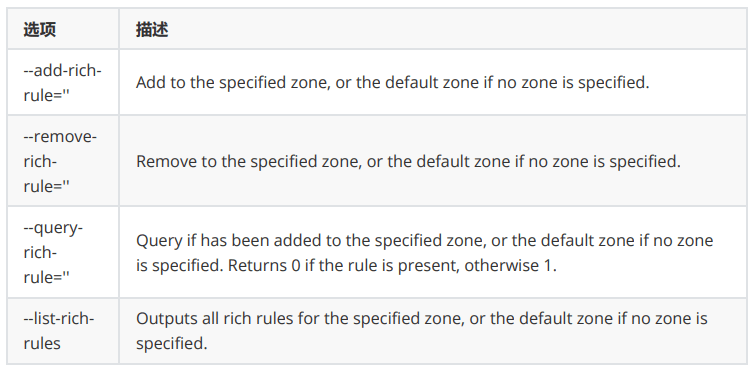</p>
<h3 id="rich规则实现"><a href="#rich规则实现" class="headerlink" title="rich规则实现"></a>rich规则实现</h3><p>拒绝从192.168.0.100的所有流量，当address 选项使用source 或 destination时，必须用family= ipv4  | ipv6</p>
<figure class="highlight sh"><table><tr><td class="gutter"><pre><span class="line">1</span><br></pre></td><td class="code"><pre><span class="line">firewall-cmd --permanent --zone=public --add-rich-rule=<span class="string">&#x27;rule family=ipv4 source address=192.168.0.100/32 reject&#x27;</span></span><br></pre></td></tr></table></figure>

<p>限制每分钟只有两个连接到ftp服务</p>
<figure class="highlight sh"><table><tr><td class="gutter"><pre><span class="line">1</span><br></pre></td><td class="code"><pre><span class="line">firewall-cmd --add-rich-rule=<span class="string">&#x27;rule service name=ftp limit value=2/m accept&#x27;</span></span><br></pre></td></tr></table></figure>

<p>抛弃esp（ IPsec 体系中的一种主要协议）协议的所有数据包</p>
<figure class="highlight sh"><table><tr><td class="gutter"><pre><span class="line">1</span><br></pre></td><td class="code"><pre><span class="line">firewall-cmd --permanent --add-rich-rule=<span class="string">&#x27;rule protocol value=esp drop&#x27;</span></span><br></pre></td></tr></table></figure>

<p>接受所有192.168.1.0/24子网端口5900-5905范围的TCP流量</p>
<figure class="highlight sh"><table><tr><td class="gutter"><pre><span class="line">1</span><br></pre></td><td class="code"><pre><span class="line">firewall-cmd --permanent --zone=vnc --add-rich-rule=<span class="string">&#x27;rule family=ipv4 source address=192.168.1.0/24 port port=5900-5905 protocol=tcp accept&#x27;</span></span><br></pre></td></tr></table></figure>

<p><strong>rich日志规则</strong></p>
<figure class="highlight sh"><table><tr><td class="gutter"><pre><span class="line">1</span><br><span class="line">2</span><br><span class="line">3</span><br><span class="line">4</span><br><span class="line">5</span><br></pre></td><td class="code"><pre><span class="line"><span class="built_in">log</span> [prefix=<span class="string">&quot;&lt;PREFIX TEXT&gt;&quot;</span> [level=&lt;LOGLEVEL&gt;] [<span class="built_in">limit</span> value=<span class="string">&quot;&lt;RATE/DURATION&gt;&quot;</span>]</span><br><span class="line"></span><br><span class="line">&lt;LOGLEVEL&gt; 可以是emerg,alert, crit, error, warning, notice, info, debug.</span><br><span class="line">&lt;DURATION&gt; s：秒, m：分钟, h：小时, d：天</span><br><span class="line">audit [<span class="built_in">limit</span> value=<span class="string">&quot;&lt;RATE/DURATION&gt;&quot;</span>]</span><br></pre></td></tr></table></figure>

<p>范例</p>
<figure class="highlight sh"><table><tr><td class="gutter"><pre><span class="line">1</span><br><span class="line">2</span><br><span class="line">3</span><br><span class="line">4</span><br><span class="line">5</span><br><span class="line">6</span><br><span class="line">7</span><br><span class="line">8</span><br><span class="line">9</span><br><span class="line">10</span><br><span class="line">11</span><br></pre></td><td class="code"><pre><span class="line"><span class="comment">#接受ssh新连接，记录日志到syslog的notice级别，每分钟最多三条信息</span></span><br><span class="line">firewall-cmd --permanent --zone=work --add-rich-rule=<span class="string">&#x27;rule service name=&quot;ssh&quot; log prefix=&quot;ssh &quot; level=&quot;notice&quot; limit value=&quot;3/m&quot; accept</span></span><br><span class="line"><span class="string"></span></span><br><span class="line"><span class="string">#从2001:db8::/64子网的DNS连接在5分钟内被拒绝，并记录到日志到audit,每小时最大记录一条信息</span></span><br><span class="line"><span class="string">firewall-cmd --add-rich-rule=&#x27;</span>rule family=ipv6 <span class="built_in">source</span> address=<span class="string">&quot;2001:db8::/64&quot;</span> service name=<span class="string">&quot;dns&quot;</span> audit <span class="built_in">limit</span> value=<span class="string">&quot;1/h&quot;</span> reject<span class="string">&#x27; --timeout=300</span></span><br><span class="line"><span class="string"></span></span><br><span class="line"><span class="string">firewall-cmd --permanent --add-rich-rule=&#x27;</span>rule family=ipv4 <span class="built_in">source</span> address=172.25.X.10/32 service name=<span class="string">&quot;http&quot;</span> <span class="built_in">log</span> level=notice prefix=<span class="string">&quot;NEW HTTP &quot;</span> <span class="built_in">limit</span> value=<span class="string">&quot;3/s&quot;</span> accept<span class="string">&#x27;</span></span><br><span class="line"><span class="string"></span></span><br><span class="line"><span class="string">firewall-cmd --reload</span></span><br><span class="line"><span class="string">tail -f /var/log/messages</span></span><br><span class="line"><span class="string">curl http://serverX.example.com</span></span><br></pre></td></tr></table></figure>

<h3 id="伪装和端口转发"><a href="#伪装和端口转发" class="headerlink" title="伪装和端口转发"></a>伪装和端口转发</h3><p>NAT网络地址转换，firewalld支持伪装和端口转发两种NAT方式</p>
<p><strong>伪装NAT</strong></p>
<figure class="highlight sh"><table><tr><td class="gutter"><pre><span class="line">1</span><br><span class="line">2</span><br><span class="line">3</span><br><span class="line">4</span><br></pre></td><td class="code"><pre><span class="line">firewall-cmd --permanent --zone=&lt;ZONE&gt; --add-masquerade</span><br><span class="line">firewall-cmd --query-masquerade  <span class="comment">#检查是否允许伪装</span></span><br><span class="line">firewall-cmd --add-masquerade   <span class="comment">#允许防火墙伪装IP</span></span><br><span class="line">firewall-cmd --remove-masquerade <span class="comment">#禁止防火墙伪装IP</span></span><br></pre></td></tr></table></figure>

<p>范例：</p>
<figure class="highlight sh"><table><tr><td class="gutter"><pre><span class="line">1</span><br><span class="line">2</span><br></pre></td><td class="code"><pre><span class="line">firewall-cmd --add-rich-rule=<span class="string">&#x27;rule family=ipv4 source address=192.168.0.0/24 masquerade&#x27;</span></span><br><span class="line">iptables -t nat -A POSTROUTING -s 192.168.0.0/24 ! -d 10.0.0.0/24 -j MASQUERADE </span><br></pre></td></tr></table></figure>

<p><strong>端口转发</strong></p>
<p>端口转发：将发往本机的特定端口的流量转发到本机或不同机器的另一个端口。通常要配合地址伪装才能实现</p>
<figure class="highlight sh"><table><tr><td class="gutter"><pre><span class="line">1</span><br></pre></td><td class="code"><pre><span class="line">firewall-cmd --permanent --zone=&lt;ZONE&gt; --add-forward-port=port=&lt;PORTNUMBER&gt;:proto=&lt;PROTOCOL&gt;[:toport=&lt;PORTNUMBER&gt;][:toaddr=]</span><br></pre></td></tr></table></figure>

<p>说明：toport= 和toaddr= 至少要指定一个</p>
<p>范例：</p>
<figure class="highlight sh"><table><tr><td class="gutter"><pre><span class="line">1</span><br><span class="line">2</span><br><span class="line">3</span><br></pre></td><td class="code"><pre><span class="line"><span class="comment">#转发传入的连接9527/TCP，到防火墙的80/TCP到public zone 的192.168.0.254</span></span><br><span class="line">firewall-cmd --add-masquerade 启用伪装</span><br><span class="line">firewall-cmd --zone=public --add-forward-port=port=9527:proto=tcp:toport=80:toaddr=192.168.0.254</span><br></pre></td></tr></table></figure>

<p>rich规则的port转发语法：</p>
<figure class="highlight sh"><table><tr><td class="gutter"><pre><span class="line">1</span><br></pre></td><td class="code"><pre><span class="line">forward-port port=&lt;PORTNUM&gt; protocol=tcp|udp [to-port=&lt;PORTNUM&gt;] [to-addr=&lt;ADDRESS&gt;]</span><br></pre></td></tr></table></figure>

<p>范例：</p>
<figure class="highlight sh"><table><tr><td class="gutter"><pre><span class="line">1</span><br><span class="line">2</span><br><span class="line">3</span><br><span class="line">4</span><br><span class="line">5</span><br><span class="line">6</span><br><span class="line">7</span><br></pre></td><td class="code"><pre><span class="line"><span class="comment">#转发从192.168.0.0/24来的，发往80/TCP的流量到防火墙的端口8080/TCP</span></span><br><span class="line">firewall-cmd --zone=work --add-rich-rule=<span class="string">&#x27;rule family=ipv4 source address=192.168.0.0/24 forward-port port=80 protocol=tcp to-port=8080&#x27;</span></span><br><span class="line"></span><br><span class="line">firewall-cmd --permanent --add-rich-rule <span class="string">&#x27;rule family=ipv4 source address=172.25.X.10/32 forward-port port=443 protocol=tcp to-port=22&#x27;</span></span><br><span class="line"></span><br><span class="line">firewall-cmd --reload</span><br><span class="line">ssh -p 443 serverX.example.com</span><br></pre></td></tr></table></figure>

<p>范例：限制ssh服务非标准端口访问</p>
<figure class="highlight sh"><table><tr><td class="gutter"><pre><span class="line">1</span><br><span class="line">2</span><br><span class="line">3</span><br><span class="line">4</span><br><span class="line">5</span><br><span class="line">6</span><br><span class="line">7</span><br><span class="line">8</span><br><span class="line">9</span><br><span class="line">10</span><br><span class="line">11</span><br><span class="line">12</span><br><span class="line">13</span><br><span class="line">14</span><br><span class="line">15</span><br><span class="line">16</span><br><span class="line">17</span><br><span class="line">18</span><br><span class="line">19</span><br><span class="line">20</span><br><span class="line">21</span><br></pre></td><td class="code"><pre><span class="line"><span class="built_in">cp</span> /usr/lib/firewalld/services/ssh.xml /etc/firewalld/services/ssh.xml</span><br><span class="line"></span><br><span class="line">vim /etc/firewalld/services/ssh.xml </span><br><span class="line">&lt;port protocol=<span class="string">&quot;tcp&quot;</span> port=<span class="string">&quot;999&quot;</span>/&gt;</span><br><span class="line"></span><br><span class="line">systemctl restart sshd.service</span><br><span class="line"></span><br><span class="line">systemctl status -l sshd.service</span><br><span class="line"></span><br><span class="line">sealert -a /var/log/audit/audit.log</span><br><span class="line"></span><br><span class="line">semanage port -a -t ssh_port_t -p tcp 999</span><br><span class="line"></span><br><span class="line">systemctl restart sshd.service</span><br><span class="line"></span><br><span class="line">ss -tulpn | grep sshd</span><br><span class="line"></span><br><span class="line">firewall-cmd --permanent --zone=work --add-source=172.25.X.0/24</span><br><span class="line"></span><br><span class="line">firewall-cmd --permanent --zone=work --add-port=999/tcp</span><br><span class="line">firewall-cmd --reload</span><br></pre></td></tr></table></figure>

</article><div class="post-copyright"><div class="post-copyright__author"><span class="post-copyright-meta">文章作者: </span><span class="post-copyright-info"><a href="http://example.com">૮(˶ᵔ ᵕ ᵔ˶)ა</a></span></div><div class="post-copyright__type"><span class="post-copyright-meta">文章链接: </span><span class="post-copyright-info"><a href="http://example.com/2024/12/08/SRE-Linux%E9%98%B2%E7%81%AB%E5%A2%99/">http://example.com/2024/12/08/SRE-Linux防火墙/</a></span></div><div class="post-copyright__notice"><span class="post-copyright-meta">版权声明: </span><span class="post-copyright-info">本博客所有文章除特别声明外，均采用 <a href="https://creativecommons.org/licenses/by-nc-sa/4.0/" target="_blank">CC BY-NC-SA 4.0</a> 许可协议。转载请注明来自 <a href="http://example.com" target="_blank">૮(˶ᵔ ᵕ ᵔ˶)ა</a>！</span></div></div><div class="tag_share"><div class="post-meta__tag-list"><a class="post-meta__tags" href="/tags/SRE/">SRE</a><a class="post-meta__tags" href="/tags/Linux/">Linux</a></div><div class="post_share"><div class="social-share" data-image="/../images/image/SRE/day17/12.png" data-sites="wechat,weibo,qq"></div><link rel="stylesheet" href="https://cdn.jsdelivr.net/npm/butterfly-extsrc/sharejs/dist/css/share.min.css" media="print" onload="this.media='all'"><script src="https://cdn.jsdelivr.net/npm/butterfly-extsrc/sharejs/dist/js/social-share.min.js" defer></script></div></div><nav class="pagination-post" id="pagination"><div class="prev-post pull-left"><a href="/2024/12/06/XM-%E5%AE%9E%E7%8E%B0Internet%E7%9A%84DNS%E6%9C%8D%E5%8A%A1%E6%9E%B6%E6%9E%84/" title="DNS服务架构"><div class="pagination-info"><div class="label">上一篇</div><div class="prev_info">DNS服务架构</div></div></a></div><div class="next-post pull-right"><a href="/2024/12/08/SRE-linux%E5%91%BD%E4%BB%A4%E7%B4%A2%E5%BC%95/" title="linux命令索引"><div class="pagination-info"><div class="label">下一篇</div><div class="next_info">linux命令索引</div></div></a></div></nav><div class="relatedPosts"><div class="headline"><i class="fas fa-thumbs-up fa-fw"></i><span>相关推荐</span></div><div class="relatedPosts-list"><div><a href="/2024/04/24/SRE-Linux%E5%9F%BA%E6%9C%AC%E6%93%8D%E4%BD%9C%E5%92%8C%E5%B8%AE%E5%8A%A9/" title="Linux基本操作和帮助"><div class="content is-center"><div class="date"><i class="far fa-calendar-alt fa-fw"></i> 2024-04-24</div><div class="title">Linux基本操作和帮助</div></div></a></div><div><a href="/2024/08/27/SRE-Linux%E6%96%87%E4%BB%B6%E7%AE%A1%E7%90%86%E5%92%8CIO%E9%87%8D%E5%AE%9A%E5%90%91/" title="Linux文件管理和IO重定向"><div class="content is-center"><div class="date"><i class="far fa-calendar-alt fa-fw"></i> 2024-08-27</div><div class="title">Linux文件管理和IO重定向</div></div></a></div><div><a href="/2024/11/05/SRE-Shell%E8%84%9A%E6%9C%AC%E7%BC%96%E7%A8%8B/" title="shell脚本编程"><div class="content is-center"><div class="date"><i class="far fa-calendar-alt fa-fw"></i> 2024-11-05</div><div class="title">shell脚本编程</div></div></a></div><div><a href="/2024/12/08/SRE-linux%E5%91%BD%E4%BB%A4%E7%B4%A2%E5%BC%95/" title="linux命令索引"><div class="content is-center"><div class="date"><i class="far fa-calendar-alt fa-fw"></i> 2024-12-08</div><div class="title">linux命令索引</div></div></a></div><div><a href="/2024/12/04/SRE-%E5%8A%A0%E5%AF%86%E5%92%8C%E5%AE%89%E5%85%A8/" title="加密和安全"><div class="content is-center"><div class="date"><i class="far fa-calendar-alt fa-fw"></i> 2024-12-04</div><div class="title">加密和安全</div></div></a></div><div><a href="/2024/10/20/SRE-%E6%96%87%E4%BB%B6%E6%9F%A5%E6%89%BE%E5%92%8C%E6%89%93%E5%8C%85%E5%8E%8B%E7%BC%A9/" title="文件查找和打包压缩"><div class="content is-center"><div class="date"><i class="far fa-calendar-alt fa-fw"></i> 2024-10-20</div><div class="title">文件查找和打包压缩</div></div></a></div></div></div></div><div class="aside-content" id="aside-content"><div class="card-widget card-info"><div class="is-center"><div class="avatar-img"></div><div class="author-info__name">૮(˶ᵔ ᵕ ᵔ˶)ა</div><div class="author-info__description">这家伙很勤奋，什么都留下了</div></div><div class="card-info-data site-data is-center"><a href="/archives/"><div class="headline">文章</div><div class="length-num">92</div></a><a href="/tags/"><div class="headline">标签</div><div class="length-num">34</div></a><a href="/categories/"><div class="headline">分类</div><div class="length-num">27</div></a></div></div><div class="sticky_layout"><div class="card-widget" id="card-toc"><div class="item-headline"><i class="fas fa-stream"></i><span>目录</span><span class="toc-percentage"></span></div><div class="toc-content is-expand"><ol class="toc"><li class="toc-item toc-level-1"><a class="toc-link" href="#%E5%AE%89%E5%85%A8%E6%8A%80%E6%9C%AF%E5%92%8C%E9%98%B2%E7%81%AB%E5%A2%99"><span class="toc-number">1.</span> <span class="toc-text">安全技术和防火墙</span></a><ol class="toc-child"><li class="toc-item toc-level-2"><a class="toc-link" href="#%E5%AE%89%E5%85%A8%E6%8A%80%E6%9C%AF"><span class="toc-number">1.1.</span> <span class="toc-text">安全技术</span></a></li><li class="toc-item toc-level-2"><a class="toc-link" href="#%E9%98%B2%E7%81%AB%E5%A2%99%E7%9A%84%E5%88%86%E7%B1%BB"><span class="toc-number">1.2.</span> <span class="toc-text">防火墙的分类</span></a></li><li class="toc-item toc-level-2"><a class="toc-link" href="#%E7%BD%91%E7%BB%9C%E6%9E%B6%E6%9E%84"><span class="toc-number">1.3.</span> <span class="toc-text">网络架构</span></a></li></ol></li><li class="toc-item toc-level-1"><a class="toc-link" href="#Linux-%E9%98%B2%E7%81%AB%E5%A2%99%E7%9A%84%E5%9F%BA%E6%9C%AC%E8%AE%A4%E8%AF%86"><span class="toc-number">2.</span> <span class="toc-text">Linux 防火墙的基本认识</span></a><ol class="toc-child"><li class="toc-item toc-level-2"><a class="toc-link" href="#Netfilter"><span class="toc-number">2.1.</span> <span class="toc-text">Netfilter</span></a></li><li class="toc-item toc-level-2"><a class="toc-link" href="#%E9%98%B2%E7%81%AB%E5%A2%99%E5%B7%A5%E5%85%B7%E4%BB%8B%E7%BB%8D"><span class="toc-number">2.2.</span> <span class="toc-text">防火墙工具介绍</span></a><ol class="toc-child"><li class="toc-item toc-level-3"><a class="toc-link" href="#iptables"><span class="toc-number">2.2.1.</span> <span class="toc-text">iptables</span></a></li><li class="toc-item toc-level-3"><a class="toc-link" href="#firewalld"><span class="toc-number">2.2.2.</span> <span class="toc-text">firewalld</span></a></li><li class="toc-item toc-level-3"><a class="toc-link" href="#nftables"><span class="toc-number">2.2.3.</span> <span class="toc-text">nftables</span></a></li></ol></li><li class="toc-item toc-level-2"><a class="toc-link" href="#netfilter-%E4%B8%AD%E4%BA%94%E4%B8%AA%E5%8B%BE%E5%AD%90%E5%87%BD%E6%95%B0%E5%92%8C%E6%8A%A5%E6%96%87%E6%B5%81%E5%90%91"><span class="toc-number">2.3.</span> <span class="toc-text">netfilter 中五个勾子函数和报文流向</span></a></li><li class="toc-item toc-level-2"><a class="toc-link" href="#iptables%E7%9A%84%E7%BB%84%E6%88%90"><span class="toc-number">2.4.</span> <span class="toc-text">iptables的组成</span></a></li><li class="toc-item toc-level-2"><a class="toc-link" href="#netfilter-%E5%AE%8C%E6%95%B4%E6%B5%81%E7%A8%8B"><span class="toc-number">2.5.</span> <span class="toc-text">netfilter 完整流程</span></a></li></ol></li><li class="toc-item toc-level-1"><a class="toc-link" href="#Iptables"><span class="toc-number">3.</span> <span class="toc-text">Iptables</span></a><ol class="toc-child"><li class="toc-item toc-level-2"><a class="toc-link" href="#Iptables-%E8%A7%84%E5%88%99%E8%AF%B4%E6%98%8E"><span class="toc-number">3.1.</span> <span class="toc-text">Iptables 规则说明</span></a><ol class="toc-child"><li class="toc-item toc-level-3"><a class="toc-link" href="#Iptables-%E8%A7%84%E5%88%99%E7%BB%84%E6%88%90"><span class="toc-number">3.1.1.</span> <span class="toc-text">Iptables 规则组成</span></a></li><li class="toc-item toc-level-3"><a class="toc-link" href="#Iptables%E8%A7%84%E5%88%99%E6%B7%BB%E5%8A%A0%E6%97%B6%E8%80%83%E9%87%8F%E7%82%B9"><span class="toc-number">3.1.2.</span> <span class="toc-text">Iptables规则添加时考量点</span></a></li><li class="toc-item toc-level-3"><a class="toc-link" href="#%E6%9C%AC%E7%AB%A0%E5%AD%A6%E4%B9%A0%E7%8E%AF%E5%A2%83%E5%87%86%E5%A4%87"><span class="toc-number">3.1.3.</span> <span class="toc-text">本章学习环境准备</span></a></li></ol></li><li class="toc-item toc-level-2"><a class="toc-link" href="#Iptables-%E7%94%A8%E6%B3%95%E8%AF%B4%E6%98%8E"><span class="toc-number">3.2.</span> <span class="toc-text">Iptables 用法说明</span></a></li><li class="toc-item toc-level-2"><a class="toc-link" href="#Iptables-%E5%9F%BA%E6%9C%AC%E5%8C%B9%E9%85%8D%E6%9D%A1%E4%BB%B6"><span class="toc-number">3.3.</span> <span class="toc-text">Iptables 基本匹配条件</span></a></li><li class="toc-item toc-level-2"><a class="toc-link" href="#Iptables-%E6%89%A9%E5%B1%95%E5%8C%B9%E9%85%8D%E6%9D%A1%E4%BB%B6"><span class="toc-number">3.4.</span> <span class="toc-text">Iptables 扩展匹配条件</span></a><ol class="toc-child"><li class="toc-item toc-level-3"><a class="toc-link" href="#%E9%9A%90%E5%BC%8F%E6%89%A9%E5%B1%95"><span class="toc-number">3.4.1.</span> <span class="toc-text">隐式扩展</span></a></li><li class="toc-item toc-level-3"><a class="toc-link" href="#%E6%98%BE%E5%BC%8F%E6%89%A9%E5%B1%95%E5%8F%8A%E7%9B%B8%E5%85%B3%E6%A8%A1%E5%9D%97"><span class="toc-number">3.4.2.</span> <span class="toc-text">显式扩展及相关模块</span></a><ol class="toc-child"><li class="toc-item toc-level-4"><a class="toc-link" href="#multiport-%E6%89%A9%E5%B1%95"><span class="toc-number">3.4.2.1.</span> <span class="toc-text">multiport 扩展</span></a></li><li class="toc-item toc-level-4"><a class="toc-link" href="#iprange-%E6%89%A9%E5%B1%95"><span class="toc-number">3.4.2.2.</span> <span class="toc-text">iprange 扩展</span></a></li><li class="toc-item toc-level-4"><a class="toc-link" href="#mac-%E6%89%A9%E5%B1%95"><span class="toc-number">3.4.2.3.</span> <span class="toc-text">mac 扩展</span></a></li><li class="toc-item toc-level-4"><a class="toc-link" href="#string-%E6%89%A9%E5%B1%95"><span class="toc-number">3.4.2.4.</span> <span class="toc-text">string 扩展</span></a></li><li class="toc-item toc-level-4"><a class="toc-link" href="#time-%E6%89%A9%E5%B1%95"><span class="toc-number">3.4.2.5.</span> <span class="toc-text">time 扩展</span></a></li><li class="toc-item toc-level-4"><a class="toc-link" href="#connlimit-%E6%89%A9%E5%B1%95"><span class="toc-number">3.4.2.6.</span> <span class="toc-text">connlimit 扩展</span></a></li><li class="toc-item toc-level-4"><a class="toc-link" href="#limit-%E6%89%A9%E5%B1%95"><span class="toc-number">3.4.2.7.</span> <span class="toc-text">limit 扩展</span></a></li><li class="toc-item toc-level-4"><a class="toc-link" href="#state-%E6%89%A9%E5%B1%95"><span class="toc-number">3.4.2.8.</span> <span class="toc-text">state 扩展</span></a></li></ol></li></ol></li><li class="toc-item toc-level-2"><a class="toc-link" href="#Target"><span class="toc-number">3.5.</span> <span class="toc-text">Target</span></a></li><li class="toc-item toc-level-2"><a class="toc-link" href="#%E8%A7%84%E5%88%99%E4%BC%98%E5%8C%96%E6%9C%80%E4%BD%B3%E5%AE%9E%E8%B7%B5"><span class="toc-number">3.6.</span> <span class="toc-text">规则优化最佳实践</span></a></li><li class="toc-item toc-level-2"><a class="toc-link" href="#Iptables%E8%A7%84%E5%88%99%E4%BF%9D%E5%AD%98"><span class="toc-number">3.7.</span> <span class="toc-text">Iptables规则保存</span></a></li><li class="toc-item toc-level-2"><a class="toc-link" href="#%E7%BD%91%E7%BB%9C%E9%98%B2%E7%81%AB%E5%A2%99"><span class="toc-number">3.8.</span> <span class="toc-text">网络防火墙</span></a><ol class="toc-child"><li class="toc-item toc-level-3"><a class="toc-link" href="#FORWARD-%E9%93%BE%E5%AE%9E%E7%8E%B0%E5%86%85%E5%A4%96%E7%BD%91%E7%BB%9C%E7%9A%84%E6%B5%81%E9%87%8F%E6%8E%A7%E5%88%B6"><span class="toc-number">3.8.1.</span> <span class="toc-text">FORWARD 链实现内外网络的流量控制</span></a></li><li class="toc-item toc-level-3"><a class="toc-link" href="#NAT-%E8%A1%A8"><span class="toc-number">3.8.2.</span> <span class="toc-text">NAT 表</span></a></li><li class="toc-item toc-level-3"><a class="toc-link" href="#SNAT"><span class="toc-number">3.8.3.</span> <span class="toc-text">SNAT</span></a></li><li class="toc-item toc-level-3"><a class="toc-link" href="#DNAT"><span class="toc-number">3.8.4.</span> <span class="toc-text">DNAT</span></a></li><li class="toc-item toc-level-3"><a class="toc-link" href="#REDIRECT-%E8%BD%AC%E5%8F%91"><span class="toc-number">3.8.5.</span> <span class="toc-text">REDIRECT 转发</span></a></li></ol></li></ol></li><li class="toc-item toc-level-1"><a class="toc-link" href="#Firewalld"><span class="toc-number">4.</span> <span class="toc-text">Firewalld</span></a><ol class="toc-child"><li class="toc-item toc-level-2"><a class="toc-link" href="#Firewalld-%E4%BB%8B%E7%BB%8D"><span class="toc-number">4.1.</span> <span class="toc-text">Firewalld 介绍</span></a></li><li class="toc-item toc-level-2"><a class="toc-link" href="#Firewall-cmd-%E5%91%BD%E4%BB%A4"><span class="toc-number">4.2.</span> <span class="toc-text">Firewall-cmd 命令</span></a></li><li class="toc-item toc-level-2"><a class="toc-link" href="#%E5%85%B6%E5%AE%83%E8%A7%84%E5%88%99"><span class="toc-number">4.3.</span> <span class="toc-text">其它规则</span></a><ol class="toc-child"><li class="toc-item toc-level-3"><a class="toc-link" href="#%E7%AE%A1%E7%90%86rich%E8%A7%84%E5%88%99"><span class="toc-number">4.3.1.</span> <span class="toc-text">管理rich规则</span></a></li><li class="toc-item toc-level-3"><a class="toc-link" href="#rich%E8%A7%84%E5%88%99%E5%AE%9E%E7%8E%B0"><span class="toc-number">4.3.2.</span> <span class="toc-text">rich规则实现</span></a></li><li class="toc-item toc-level-3"><a class="toc-link" href="#%E4%BC%AA%E8%A3%85%E5%92%8C%E7%AB%AF%E5%8F%A3%E8%BD%AC%E5%8F%91"><span class="toc-number">4.3.3.</span> <span class="toc-text">伪装和端口转发</span></a></li></ol></li></ol></li></ol></div></div><div class="card-widget card-recent-post"><div class="item-headline"><i class="fas fa-history"></i><span>最新文章</span></div><div class="aside-list"><div class="aside-list-item"><a class="thumbnail" href="/2025/03/17/SRE-Tomcat/" title="企业级Web应用服务器TOMCAT"></a><div class="content"><a class="title" href="/2025/03/17/SRE-Tomcat/" title="企业级Web应用服务器TOMCAT">企业级Web应用服务器TOMCAT</a><time datetime="2025-03-17T09:45:17.000Z" title="发表于 2025-03-17 17:45:17">2025-03-17</time></div></div><div class="aside-list-item"><a class="thumbnail" href="/2025/03/03/SRE-jumpserver/" title="企业级堡垒机JumpServer"></a><div class="content"><a class="title" href="/2025/03/03/SRE-jumpserver/" title="企业级堡垒机JumpServer">企业级堡垒机JumpServer</a><time datetime="2025-03-03T11:41:44.000Z" title="发表于 2025-03-03 19:41:44">2025-03-03</time></div></div><div class="aside-list-item"><a class="thumbnail" href="/2025/03/03/SRE-Nginx/" title="企业级高性能WEB服务Nginx"></a><div class="content"><a class="title" href="/2025/03/03/SRE-Nginx/" title="企业级高性能WEB服务Nginx">企业级高性能WEB服务Nginx</a><time datetime="2025-03-03T09:54:42.000Z" title="发表于 2025-03-03 17:54:42">2025-03-03</time></div></div><div class="aside-list-item"><a class="thumbnail" href="/2025/02/21/SRE-LVS/" title="企业级调度器LVS"></a><div class="content"><a class="title" href="/2025/02/21/SRE-LVS/" title="企业级调度器LVS">企业级调度器LVS</a><time datetime="2025-02-21T08:25:19.000Z" title="发表于 2025-02-21 16:25:19">2025-02-21</time></div></div></div></div></div></div></main><footer id="footer"><div id="footer-wrap"><div class="copyright">&copy;2023 - 2025 By ૮(˶ᵔ ᵕ ᵔ˶)ა</div><div class="framework-info"><span>框架 </span><a target="_blank" rel="noopener" href="https://hexo.io">Hexo</a><span class="footer-separator">|</span><span>主题 </span><a target="_blank" rel="noopener" href="https://github.com/jerryc127/hexo-theme-butterfly">Butterfly</a></div><div class="footer_custom_text"><a target="_blank" rel="noopener" href="https://beian.miit.gov.cn/#/Integrated/index">豫ICP备2023009931号</a></br><a href="http://www.beian.gov.cn/portal/registerSystemInfo?recordcode=41162702000178" target="_blank">豫公网安备 41162702000178号</a></div></div></footer></div><div id="rightside"><div id="rightside-config-hide"><button id="readmode" type="button" title="阅读模式"><i class="fas fa-book-open"></i></button><button id="darkmode" type="button" title="浅色和深色模式转换"><i class="fas fa-adjust"></i></button><button id="hide-aside-btn" type="button" title="单栏和双栏切换"><i class="fas fa-arrows-alt-h"></i></button></div><div id="rightside-config-show"><button id="rightside_config" type="button" title="设置"><i class="fas fa-cog fa-spin"></i></button><button class="close" id="mobile-toc-button" type="button" title="目录"><i class="fas fa-list-ul"></i></button><button id="go-up" type="button" title="回到顶部"><span class="scroll-percent"></span><i class="fas fa-arrow-up"></i></button></div></div><div><script src="/js/utils.js"></script><script src="/js/main.js"></script><script src="https://cdn.jsdelivr.net/npm/@fancyapps/ui/dist/fancybox/fancybox.umd.min.js"></script><script src="https://cdn.jsdelivr.net/npm/node-snackbar/dist/snackbar.min.js"></script><script>function panguFn () {
  if (typeof pangu === 'object') pangu.autoSpacingPage()
  else {
    getScript('https://cdn.jsdelivr.net/npm/pangu/dist/browser/pangu.min.js')
      .then(() => {
        pangu.autoSpacingPage()
      })
  }
}

function panguInit () {
  if (true){
    GLOBAL_CONFIG_SITE.isPost && panguFn()
  } else {
    panguFn()
  }
}

document.addEventListener('DOMContentLoaded', panguInit)</script><div class="js-pjax"></div><canvas id="universe"></canvas><script src="/js/universe.js"></script><canvas class="fireworks" mobile="true"></canvas><script src="https://cdn.jsdelivr.net/npm/butterfly-extsrc/dist/fireworks.min.js"></script><script src="https://cdn.jsdelivr.net/npm/butterfly-extsrc/dist/activate-power-mode.min.js"></script><script>POWERMODE.colorful = true;
POWERMODE.shake = false;
POWERMODE.mobile = false;
document.body.addEventListener('input', POWERMODE);
</script><script async data-pjax src="//busuanzi.ibruce.info/busuanzi/2.3/busuanzi.pure.mini.js"></script></div></body></html>